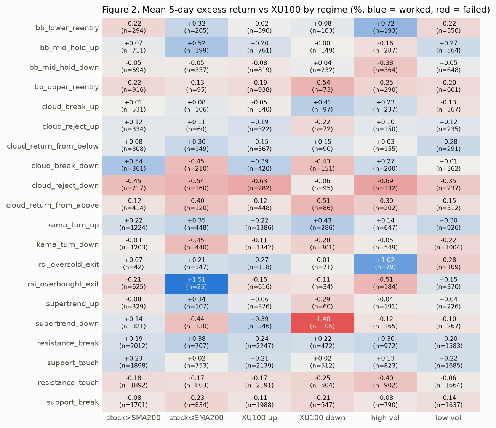
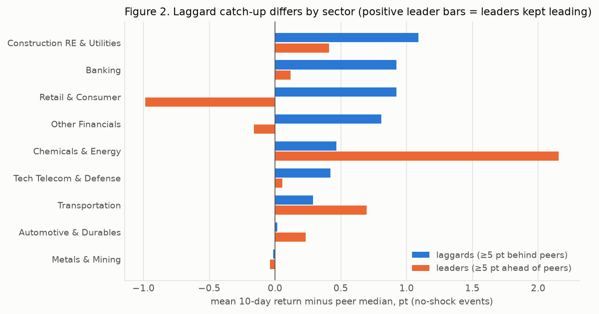
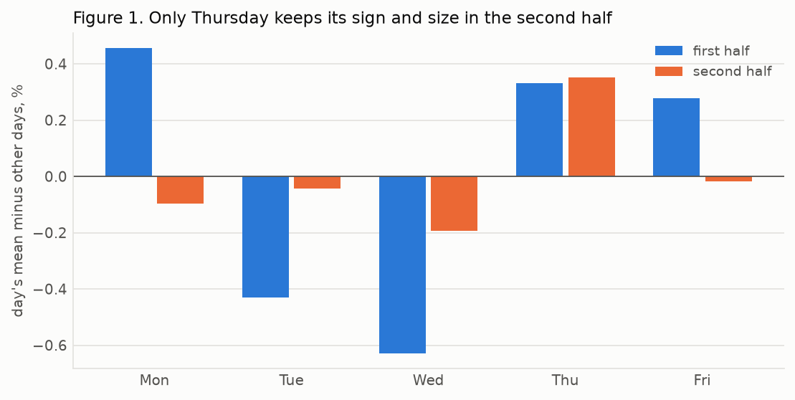
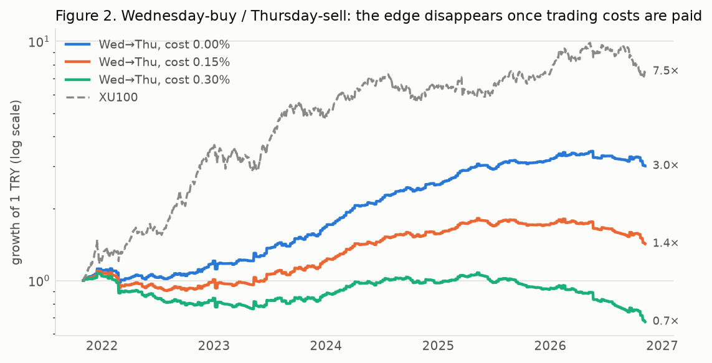
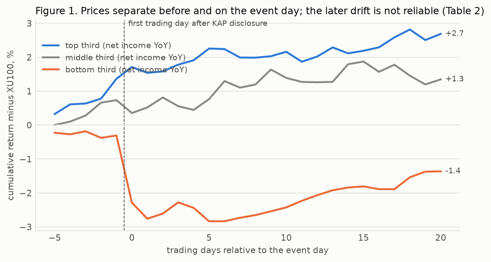
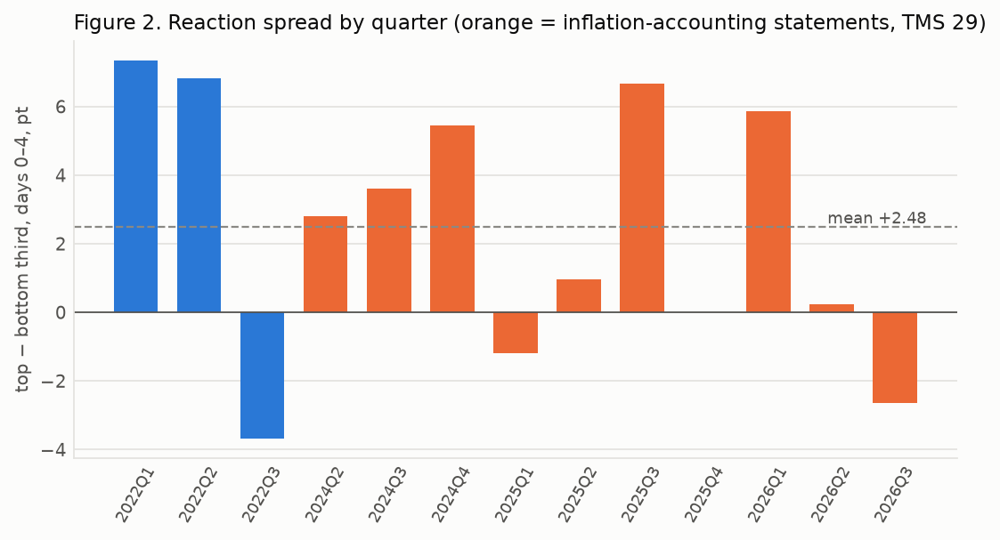
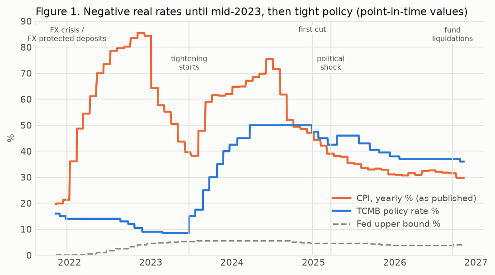
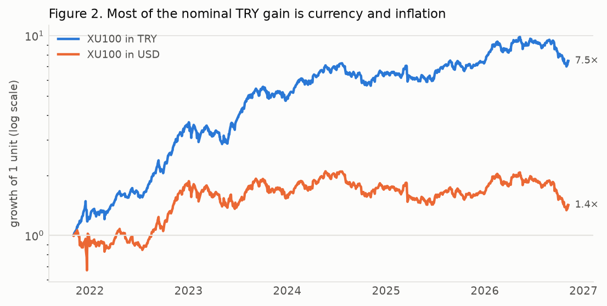
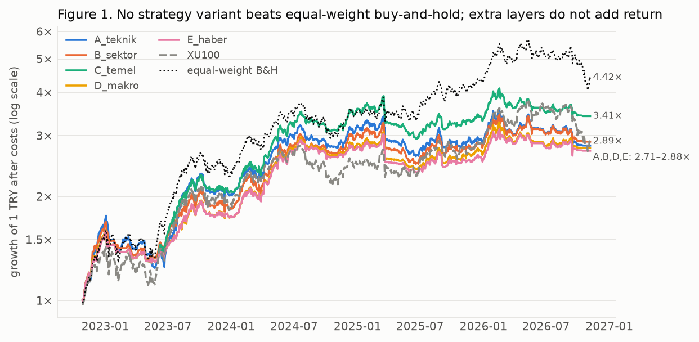
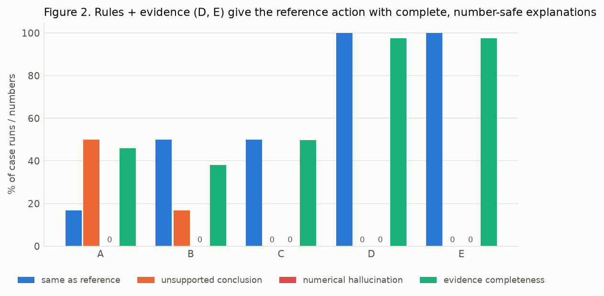

Data Dictionary
Educational research output for CSE-481. Historical evidence only: not a forecast, not investment advice. Returns are nominal TRY.
Generated by python -m src.reports.build_reports --only 0. Descriptions are written in
src/reports/data_dictionary.py; types, fill rates and ranges are read from the actual files. A test fails if any
column lacks a description, so this dictionary cannot drift from the code. "Unstructured" marks free text
(news, speeches, LLM explanations, review reasons); all other fields are structured.
Units: [fraction] 0.05 = 5%; [%] already in percent; [pt] percentage points; [TRY] Turkish lira.
"Point-in-time rule" states from when a value may be used in a historical decision.
21 datasets, 468 fields.
| # |
dataset |
kind |
step |
columns |
| 1 |
Study universe and sector map |
structured |
1 |
5 |
| 2 |
Daily prices |
structured |
2 |
6 |
| 3 |
Daily market capitalisation |
structured |
1d (review of 22 Nov) |
6 |
| 4 |
Daily valuation ratios |
structured (derived) |
1d (review of 22 Nov) |
14 |
| 5 |
Quarterly fundamentals (Fintables) |
structured |
2, 7 |
13 |
| 6 |
Technical, support/resistance and relative features |
structured |
3, 5 |
46 |
| 7 |
Macro panel |
structured |
8 |
12 |
| 8 |
KAP publication dates of financial statements |
structured |
7B |
9 |
| 9 |
Technical reversal events |
structured (event table) |
4 |
28 |
| 10 |
Sector laggard / leader events |
structured (event table) |
5 |
17 |
| 11 |
Earnings disclosure events |
structured (event table) |
7C |
64 |
| 12 |
News archive (KAP + RSS) |
unstructured text + structured tags |
10 |
12 |
| 13 |
KAP news signal events |
structured (event table) |
10C |
15 |
| 14 |
Speech segments |
unstructured text |
10B |
16 |
| 15 |
Speech features and claim checks |
structured features from unstructured text |
10B |
26 |
| 16 |
Numerical claims in speeches |
structured |
10B |
9 |
| 17 |
Evidence bundle (one per stock and analysis day) |
structured + text evidence |
11 |
109 |
| 18 |
Decision log: analyses |
structured (JSON fields) |
11, 13 |
21 |
| 19 |
Decision log: human reviews |
structured + text |
11 |
7 |
| 20 |
Decision log: harness traces |
structured (JSON) |
13 |
5 |
| 21 |
Harness experiment results |
structured + text |
14 |
28 |
1. Study universe and sector map
- File:
config/universe.csv
- Type: structured · Built in step: 1 · Grain: one row per stock
- Point-in-time rule: fixed for the whole study (2026 BIST 100 list); survivorship caveat
| column |
description |
type |
filled |
range / example |
ticker |
BIST stock code |
text |
100% |
AKBNK |
yahoo |
Yahoo Finance symbol (validation source only) |
text |
100% |
AKBNK.IS |
sector_pdf |
sector as listed in the project brief |
text |
100% |
Banking |
peer_group |
peer group used for sector-relative features (≥3 members to be used) |
text |
100% |
Banking |
is_core |
1 = one of the 30 study stocks, 0 = extra peer used only for sector medians |
int |
100% |
0 – 1 |
2. Daily prices
- File:
data/isyatirim/<TICKER>.parquet (example: ASELS)
- Type: structured · Built in step: 2 · Grain: one row per stock and trading day, 2021-11-01 – 2026-11-06
- Point-in-time rule: known at that day's close; corporate-action adjusted by İş Yatırım (e.g. CCOLA 1:11 bonus in Aug 2024 shows no jump); validated against Yahoo (Step 2)
| column |
description |
type |
filled |
range / example |
date |
trading day |
datetime |
100% |
2021-11-01 – 2026-11-06 |
High |
daily high, never below the close [TRY] |
float |
100% |
8.108 – 450 |
Low |
daily low, never above the close [TRY] |
float |
100% |
7.618 – 429.5 |
Close |
adjusted close (İş Yatırım HGDG_KAPANIS) [TRY] |
float |
100% |
7.966 – 434 |
Volume |
traded quantity = TRY turnover / average price [shares] |
float |
100% |
7.11e+06 – 6.366e+08 |
Turnover_TL |
traded value [TRY] |
float |
100% |
2.089e+08 – 3.441e+10 |
3. Daily market capitalisation
- File:
data/isyatirim_mcap/<TICKER>.parquet (example: ASELS)
- Type: structured · Built in step: 1d (review of 22 Nov) · Grain: one row per stock and trading day, 2021-11-01 – 2026-11-06
- Point-in-time rule: known at that day's close. Downloaded on 22 Nov 2026 from the same İş Yatırım endpoint as the prices;
PD = unadjusted close × paid-in capital. On three days İş Yatırım updated the capital one day before the price split (TURSG 2025-06-03, 2026-06-12; BIMAS 2026-05-13); market_cap() aligns them
| column |
description |
type |
filled |
range / example |
date |
trading day |
datetime |
100% |
2021-11-01 – 2026-11-06 |
PD |
market capitalisation as published by İş Yatırım [TRY] |
float |
100% |
3.703e+10 – 1.979e+12 |
HG_KAPANIS |
unadjusted close [TRY] |
float |
100% |
16.24 – 434 |
SERMAYE |
paid-in capital = number of shares (1 TRY nominal) |
float |
100% |
2.28e+09 – 4.56e+09 |
HAO_PD |
market capitalisation of the free float [TRY] |
float |
100% |
9.546e+09 – 5.102e+11 |
HGDG_KAPANIS |
adjusted close, same series as prices.Close [TRY] |
float |
100% |
7.966 – 434 |
4. Daily valuation ratios
- File:
reports/valuation_daily.parquet
- Type: structured (derived) · Built in step: 1d (review of 22 Nov) · Grain: one row per stock and trading day from the first KAP statement (2022Q1) on
- Point-in-time rule: market cap at that close; statement values of the latest report public that day; inflation-accounting figures moved to the money of the latest CPI published that day; net debt not moved (a TRY debt does not grow with inflation)
| column |
description |
type |
filled |
range / example |
date |
trading day |
datetime |
100% |
2022-04-25 – 2026-11-06 |
ticker |
stock code |
text |
100% |
AKBNK |
market_cap |
aligned market capitalisation [TRY] |
float |
100% |
4.622e+09 – 1.979e+12 |
report_period |
quarter of the latest public statement |
datetime |
100% |
2022-03-31 – 2026-09-30 |
report_event_day |
its KAP event day |
datetime |
100% |
2022-04-25 – 2026-11-06 |
cpi_month |
latest CPI month published by that day (empty for nominal figures) |
datetime |
46% |
2024-01-01 – 2026-10-01 |
factor_flow |
CPI factor applied to net income and EBITDA (1 for nominal figures) |
float |
100% |
1 – 1.247 |
factor_stock |
CPI factor applied to equity and minority interests |
float |
100% |
1 – 1.247 |
pe |
P/E = market cap / last-12-month net income in that day's money; empty if net income ≤ 0 |
float |
75% |
1.157 – 659.3 |
pb |
P/B = market cap / parent equity in that day's money; empty if equity ≤ 0 |
float |
100% |
0.2398 – 32.1 |
ev |
enterprise value = market cap + net debt + minority interests [TRY]; industrial companies only |
float |
87% |
2.862e+09 – 2.003e+12 |
ev_ebitda |
EV / last-12-month EBITDA in that day's money; empty if EBITDA ≤ 0 |
float |
70% |
0.5118 – 612.3 |
pe_reported |
P/E with net income in the money of its report (as on data screens), for comparison |
float |
75% |
1.157 – 659.3 |
val_dropped |
ratios left empty and why: anlamsiz denominator ≤ 0, rapor_degeri_yok statement value not known on its event day, sanayi_disi_ya_da_rapor_degeri_yok no EBITDA/net debt |
text |
100% |
ev_ebitda:sanayi_disi_ya_da_rapor_degeri… |
5. Quarterly fundamentals (Fintables)
- File:
data/fintables/*.xlsx → load_all() (example: TUPRS)
- Type: structured · Built in step: 2, 7 · Grain: one row per stock and quarter, 2022Q1 – 2026Q3 (2022Q4 missing for 24 of 30 stocks)
- Point-in-time rule: RAW, NOT point-in-time. Fintables keeps the latest version of every figure. For the 24 companies that apply inflation accounting (TMS 29) it re-states 2022Q4 – 2023Q3 and re-expresses everything from 2022Q4 on in the purchasing power of the company's latest balance-sheet month (verified against 20 published figures). Analyses use the point-in-time view in
earnings_events (src/data/pit_fundamentals.py), never these raw values
| column |
description |
type |
filled |
range / example |
period_end |
quarter end date |
datetime |
100% |
2016-03-31 – 2026-09-30 |
net_income |
net income attributable to parent, quarterly [TRY] |
float |
98% |
-2.265e+09 – 8.54e+10 |
revenue |
net sales, quarterly [TRY]; missing for financials |
float |
98% |
6.191e+09 – 5.06e+11 |
gross_profit |
gross profit, quarterly [TRY]; missing for financials |
float |
98% |
-9.091e+08 – 9.386e+10 |
op_income |
operating profit, quarterly [TRY]; missing for financials |
float |
98% |
-2.993e+09 – 8.182e+10 |
equity |
shareholders' equity at quarter end [TRY] |
float |
98% |
7.233e+09 – 5.229e+11 |
total_assets |
total assets at quarter end [TRY] |
float |
98% |
2.728e+10 – 9.721e+11 |
ni_yoy |
(net income − same quarter last year) / |
same quarter last year |
[fraction] |
float |
ni_qoq |
(net income − previous quarter) / |
previous quarter |
[fraction] |
float |
roe_q |
quarterly net income / equity [fraction] |
float |
95% |
-0.2134 – 0.3885 |
leverage |
total assets / equity [ratio] |
float |
98% |
1.609 – 7.451 |
net_margin |
net income / revenue [fraction]; non-financials only |
float |
98% |
-0.1337 – 0.1969 |
loss |
True if net income < 0 |
bool |
100% |
14% True |
6. Technical, support/resistance and relative features
- File:
computed: full_features(ticker) (example: ASELS; price columns as above)
- Type: structured · Built in step: 3, 5 · Grain: one row per stock and trading day
- Point-in-time rule: every value uses only that day's and earlier closes; Ichimoku has no forward-shifted Chikou line; pivots are used only after they are confirmed (k = 5 days later)
| column |
description |
type |
filled |
range / example |
date |
trading day |
datetime |
100% |
2021-11-01 – 2026-11-06 |
sma_20 |
20-day simple moving average of close [TRY] |
float |
98% |
8.868 – 416.9 |
sma_50 |
50-day simple moving average of close [TRY] |
float |
96% |
10.35 – 399.6 |
sma_200 |
200-day simple moving average of close [TRY] |
float |
84% |
11.34 – 361.5 |
ema_20 |
20-day exponential moving average [TRY] |
float |
98% |
9.128 – 411.7 |
ema_50 |
50-day exponential moving average [TRY] |
float |
96% |
10.46 – 384 |
rsi_14 |
RSI, 14 days, Wilder smoothing [0–100] |
float |
99% |
21.56 – 91.4 |
macd |
EMA12 − EMA26 [TRY] |
float |
98% |
-10.26 – 29 |
macd_signal |
9-day EMA of MACD [TRY] |
float |
97% |
-8.88 – 24.65 |
macd_hist |
MACD − signal [TRY] |
float |
97% |
-7.565 – 8.326 |
bb_mid |
Bollinger middle band = SMA20 [TRY] |
float |
98% |
8.868 – 416.9 |
bb_upper |
SMA20 + 2σ [TRY] |
float |
98% |
10.42 – 454.8 |
bb_lower |
SMA20 − 2σ [TRY] |
float |
98% |
7.202 – 393.3 |
bb_bandwidth |
(upper − lower) / middle [fraction] |
float |
98% |
0.05795 – 0.5706 |
bb_pctb |
%B = (close − lower) / (upper − lower); <0 below the lower band, >1 above the upper |
float |
98% |
-0.4094 – 1.36 |
atr_14 |
Average True Range, 14 days, Wilder [TRY] |
float |
99% |
0.2022 – 19.66 |
kama |
Kaufman adaptive moving average (10, 2, 30) [TRY] |
float |
99% |
8.515 – 415.2 |
kama_slope |
daily % change of KAMA [fraction] |
float |
99% |
-0.0447 – 0.06708 |
supertrend |
Supertrend line (ATR 10, multiplier 3) [TRY] |
float |
99% |
8.173 – 420.6 |
st_dir |
+1 Supertrend up, −1 down |
float |
99% |
-1 – 1 |
st_flip |
True on the day the Supertrend direction changes |
float |
100% |
-1 – 1 |
tenkan |
Ichimoku conversion line (9) [TRY] |
float |
99% |
8.091 – 432.8 |
kijun |
Ichimoku base line (26) [TRY] |
float |
98% |
9.617 – 413.9 |
senkou_a |
Ichimoku span A, plotted 26 days ahead → known today [TRY] |
float |
96% |
10.13 – 416.1 |
senkou_b |
Ichimoku span B (52), shifted 26 days [TRY] |
float |
94% |
10.79 – 402 |
cloud_top |
max(span A, span B) [TRY] |
float |
94% |
10.79 – 416.1 |
cloud_bottom |
min(span A, span B) [TRY] |
float |
94% |
10.24 – 388.9 |
cloud_state |
+1 above the cloud, 0 inside, −1 below |
float |
94% |
-1 – 1 |
vol_z_20 |
volume z-score vs the last 20 days |
float |
99% |
-2.536 – 3.932 |
ret_1d |
1-day return [fraction] |
float |
100% |
-0.1 – 0.1 |
ret_5d |
5-day return [fraction] |
float |
100% |
-0.2747 – 0.2603 |
vol_20d |
20-day return volatility, annualised [fraction] |
float |
98% |
0.2006 – 0.8928 |
support |
nearest confirmed pivot cluster below the close (250-day lookback, 1.5% tolerance) [TRY] |
float |
97% |
9.245 – 429 |
support_touches |
number of pivots in that support cluster (level strength) |
float |
97% |
1 – 6 |
support_age |
trading days since the latest pivot in the support cluster |
float |
97% |
5 – 199 |
resistance |
nearest confirmed pivot cluster above the close [TRY] |
float |
77% |
9.923 – 429 |
resistance_touches |
number of pivots in that resistance cluster |
float |
77% |
1 – 6 |
resistance_age |
trading days since the latest pivot in the resistance cluster |
float |
77% |
5 – 180 |
dist_support |
close / support − 1 (positive = above support) [fraction] |
float |
97% |
7.598e-08 – 0.5134 |
dist_resistance |
resistance / close − 1 (room to resistance) [fraction] |
float |
77% |
1.455e-07 – 0.2307 |
rel_xu_5 |
stock 5-day return − XU100 5-day return [fraction] |
float |
100% |
-0.136 – 0.2292 |
sector_lag_5 |
stock 5-day return − median 5-day return of its peers (itself excluded); negative = behind its sector [fraction] |
float |
100% |
-0.1921 – 0.2608 |
rel_xu_10 |
stock 10-day return − XU100 10-day return [fraction] |
float |
99% |
-0.2023 – 0.34 |
sector_lag_10 |
stock 10-day return − median 10-day return of its peers (itself excluded); negative = behind its sector [fraction] |
float |
99% |
-0.2367 – 0.4214 |
rel_xu_20 |
stock 20-day return − XU100 20-day return [fraction] |
float |
98% |
-0.238 – 0.4664 |
sector_lag_20 |
stock 20-day return − median 20-day return of its peers (itself excluded); negative = behind its sector [fraction] |
float |
98% |
-0.3177 – 0.5222 |
7. Macro panel
- File:
reports/macro_panel.csv
- Type: structured · Built in step: 8 · Grain: one row per BIST trading day
- Point-in-time rule: each value is the last one PUBLISHED by that day (CPI on the 3rd of the next month; Fed on the first BIST day after the announcement)
| column |
description |
type |
filled |
range / example |
date |
trading day |
text |
100% |
2021-11-01 |
usdtry |
TCMB indicative USD/TRY buying rate [TRY] |
float |
100% |
9.481 – 49.96 |
eurtry |
TCMB indicative EUR/TRY buying rate [TRY] |
float |
100% |
11 – 56.31 |
policy_rate |
TCMB one-week repo rate [%] |
float |
100% |
8.5 – 50 |
cpi_yoy |
latest published yearly CPI change (TÜİK) [%] |
float |
100% |
19.58 – 85.51 |
cpi_mom |
latest published monthly CPI change [%] |
float |
100% |
0.04308 – 13.58 |
cpi_month |
reference month of the CPI value in use (YYYY-MM) |
text |
100% |
2021-09 |
fed_lower |
Fed funds target range, lower bound [%] |
float |
100% |
0 – 5.25 |
fed_upper |
Fed funds target range, upper bound [%] |
float |
100% |
0.25 – 5.5 |
usdtry_chg_20d |
20-day % change of USD/TRY [%] |
float |
98% |
-22.86 – 56.41 |
real_rate |
policy_rate − cpi_yoy [pt] |
float |
100% |
-76.51 – 10.95 |
rate_change |
change of policy_rate vs the previous trading day [pt] |
float |
100% |
-3 – 7.5 |
8. KAP publication dates of financial statements
- File:
reports/kap_disclosure_dates.csv
- Type: structured · Built in step: 7B · Grain: one row per stock and quarter (545)
- Point-in-time rule: the anchor for all fundamental data
| column |
description |
type |
filled |
range / example |
ticker |
stock code |
text |
100% |
AKBNK |
period_end |
quarter end of the financial statement |
text |
100% |
2022-03-31 |
window_start |
first day of the legal filing window (legal rule) |
text |
100% |
2022-04-14 |
deadline |
legal filing deadline (legal rule; used only as a check) |
text |
100% |
2022-05-10 |
publish_time |
real KAP publication timestamp (Europe/Istanbul) — the point-in-time anchor |
text |
100% |
2022-04-27 18:10:31 |
kap_index |
KAP disclosure id (link: kap.org.tr/tr/Bildirim/) |
int |
100% |
1.023e+06 – 1.696e+06 |
event_day |
first trading day on which the market could react (after publication; post-18:00 filings → next day) |
text |
98% |
2022-04-28 |
lag_days |
calendar days from quarter end to publication |
int |
100% |
15 – 134 |
after_deadline |
True if published after the legal deadline (15% of filings) |
bool |
100% |
15% True |
9. Technical reversal events
- File:
reports/technical_events.parquet
- Type: structured (event table) · Built in step: 4 · Grain: one row per event; repeats of the same event within 5 days dropped
- Point-in-time rule: event detected from data up to its date; forward returns are OUTCOMES, used only for research and for history whose window closed before an analysis date
| column |
description |
type |
filled |
range / example |
date |
event date |
datetime |
100% |
2021-11-16 – 2026-11-06 |
ticker |
stock code |
text |
100% |
FROTO |
event |
event type (22 types, see Report 1; the harness uses the first 12, HARNESS_EVENTS) |
text |
100% |
kama_turn_down |
direction |
+1 bullish, −1 bearish |
int |
100% |
-1 – 1 |
regime |
uptrend close > SMA200, downtrend, unknown |
text |
100% |
unknown |
vol_confirm |
volume z-score > 1 on the event day |
bool |
100% |
20% True |
quake_window |
True if the window touches the Feb 2023 earthquake closure; such rows are excluded from statistics |
bool |
100% |
2% True |
rsi_state |
dip RSI(14) ≤ 35 on one of the last 3 days, tepe ≥ 65, notr, bilinmiyor |
text |
100% |
bilinmiyor |
kama_state |
5-day KAMA change: yukselen > +0.5%, dusen < −0.5%, yatay in between |
text |
100% |
bilinmiyor |
kama_turn |
5-day KAMA change minus the same change 5 days earlier [pt]; + = slope turning up |
float |
100% |
-40.21 – 56.29 |
st_state |
Supertrend direction at the event: yukari, asagi |
text |
100% |
yukari |
cloud_pos |
close vs Ichimoku cloud: ustunde above, icinde inside, altinda below |
text |
100% |
bilinmiyor |
vol_recent |
volume z-score > 1 on at least one of the last 3 days |
bool |
100% |
38% True |
conf_rsi |
confirmation 1: RSI zone in the event's direction (bullish dip, bearish tepe) |
bool |
100% |
19% True |
conf_vol |
confirmation 2: same as vol_recent |
bool |
100% |
38% True |
conf_kama |
confirmation 3: KAMA turning in the event's direction (sign of kama_turn) |
bool |
100% |
47% True |
conf_score |
number of confirmations, 0–3 |
int |
100% |
0 – 3 |
k1_confirmed |
pre-registered K1: at least 2 confirmations |
bool |
100% |
29% True |
k1_all3 |
all three confirmations (the spec's literal example; counted, not tested) |
bool |
100% |
2% True |
k2_against_trend |
pre-registered K2: Supertrend against the event and price on the opposite side of the cloud (always false for Supertrend and cloud events) |
bool |
100% |
31% True |
fwd_1 |
stock return over the next 1 trading days (close to close) [fraction] |
float |
100% |
-0.1 – 0.1 |
exc_1 |
fwd_1 minus XU100 return over the same days [fraction] |
float |
100% |
-0.1299 – 0.1859 |
fwd_3 |
stock return over the next 3 trading days (close to close) [fraction] |
float |
100% |
-0.2702 – 0.3301 |
exc_3 |
fwd_3 minus XU100 return over the same days [fraction] |
float |
100% |
-0.2618 – 0.3142 |
fwd_5 |
stock return over the next 5 trading days (close to close) [fraction] |
float |
100% |
-0.4086 – 0.6084 |
exc_5 |
fwd_5 minus XU100 return over the same days [fraction] |
float |
100% |
-0.361 – 0.5638 |
fwd_10 |
stock return over the next 10 trading days (close to close) [fraction] |
float |
99% |
-0.6059 – 1.132 |
exc_10 |
fwd_10 minus XU100 return over the same days [fraction] |
float |
99% |
-0.5525 – 1.078 |
10. Sector laggard / leader events
- File:
reports/sector_events.parquet
- Type: structured (event table) · Built in step: 5 · Grain: one row per trigger (first day the lag threshold is crossed; 10-day gap per stock)
- Point-in-time rule: trigger uses past returns only; fwd/exc/gap columns are outcomes
| column |
description |
type |
filled |
range / example |
date |
trigger date |
datetime |
100% |
2021-11-15 – 2026-11-06 |
ticker |
stock code |
text |
100% |
TTKOM |
peer_group |
peer group |
text |
100% |
Tech Telecom & Defense |
config |
lag10_5pct (≥5 pt in 10 days) or lag20_10pct (≥10 pt in 20 days) |
text |
100% |
lag10_5pct |
side |
laggard (behind peers) or leader (ahead) |
text |
100% |
leader |
lag |
stock return − peer median at trigger [fraction] |
float |
100% |
-0.2744 – 0.3114 |
shock |
a daily move of ≥ ±9.5% in the previous 10 days |
bool |
100% |
11% True |
quake_window |
True if the window touches the Feb 2023 earthquake closure; such rows are excluded from statistics |
bool |
100% |
4% True |
fwd_5 |
stock return over the next 5 trading days (close to close) [fraction] |
float |
100% |
-0.4084 – 0.6081 |
exc_5 |
fwd_5 minus XU100 return over the same days [fraction] |
float |
100% |
-0.3532 – 0.5638 |
gap_5 |
stock's next-5-day return minus its peers' median next-5-day return [fraction] |
float |
100% |
-0.3506 – 0.6017 |
fwd_10 |
stock return over the next 10 trading days (close to close) [fraction] |
float |
99% |
-0.4396 – 1.132 |
exc_10 |
fwd_10 minus XU100 return over the same days [fraction] |
float |
99% |
-0.399 – 1.078 |
gap_10 |
stock's next-10-day return minus its peers' median next-10-day return [fraction] |
float |
99% |
-0.3934 – 1.057 |
fwd_20 |
stock return over the next 20 trading days (close to close) [fraction] |
float |
99% |
-0.6318 – 1.112 |
exc_20 |
fwd_20 minus XU100 return over the same days [fraction] |
float |
99% |
-0.5728 – 1.137 |
gap_20 |
stock's next-20-day return minus its peers' median next-20-day return [fraction] |
float |
99% |
-0.6496 – 1.125 |
11. Earnings disclosure events
- File:
reports/earnings_events.parquet
- Type: structured (event table) · Built in step: 7C · Grain: one row per stock and quarter
- Point-in-time rule: fundamentals as they could be known on
event_day (src/data/pit_fundamentals.py): a value is used only after the version we hold was published, and only with inputs in the same unit. Inflation-accounting restatements of 2022Q4 – 2023Q3 were first published a year later, so those quarters have no values on their own event day (reason in pit_dropped); they serve only as next year's comparatives. TRY amounts are in the money of that report (unit_flow, unit_stock); windows are outcomes
| column |
description |
type |
filled |
range / example |
ticker |
stock code |
text |
100% |
AKBNK |
period_end |
quarter end of the financial statement |
datetime |
100% |
2022-03-31 – 2026-09-30 |
window_start |
first day of the legal filing window (legal rule) |
datetime |
100% |
2022-04-14 – 2026-10-14 |
deadline |
legal filing deadline (legal rule; used only as a check) |
datetime |
100% |
2022-05-10 – 2026-11-09 |
publish_time |
real KAP publication timestamp (Europe/Istanbul) — the point-in-time anchor |
datetime |
100% |
2022-04-22 – 2026-11-09 |
kap_index |
KAP disclosure id (link: kap.org.tr/tr/Bildirim/) |
int |
100% |
1.023e+06 – 1.696e+06 |
event_day |
first trading day on which the market could react (after publication; post-18:00 filings → next day) |
datetime |
98% |
2022-04-25 – 2026-11-06 |
lag_days |
calendar days from quarter end to publication |
int |
100% |
15 – 134 |
after_deadline |
True if published after the legal deadline (15% of filings) |
bool |
100% |
15% True |
net_income |
quarterly net income attributable to parent, as published [TRY, unit in unit_flow] |
float |
80% |
-1.346e+10 – 9.35e+10 |
net_income_prev |
same quarter one year earlier as shown in this report (restated to its unit under TMS 29) [TRY] |
float |
80% |
-1.762e+10 – 9.35e+10 |
ni_yoy |
net income YoY change, both quarters in the same unit [fraction] |
float |
80% |
-92.94 – 249.6 |
ni_qoq |
net income QoQ change, both quarters in the same unit [fraction] |
float |
76% |
-51.93 – 225.7 |
loss |
True if net income < 0; empty if net income is not known on the event day |
bool |
80% |
15% True |
net_income_ttm |
net income of the last 12 months, from cumulative figures [TRY] |
float |
85% |
-2.498e+10 – 1.824e+11 |
revenue |
net sales, quarterly [TRY]; missing for financials |
float |
71% |
3.267e+08 – 6.517e+11 |
gross_profit |
gross profit, quarterly [TRY]; missing for financials |
float |
71% |
-3.129e+09 – 1.669e+11 |
op_income |
operating profit, quarterly [TRY]; missing for financials |
float |
71% |
-1.145e+10 – 6.34e+10 |
equity |
equity attributable to parent at quarter end [TRY, unit in unit_stock] |
float |
98% |
6.363e+08 – 1.135e+12 |
total_assets |
total assets at quarter end [TRY, unit in unit_stock] |
float |
98% |
4.746e+09 – 6.233e+12 |
roe_q |
quarterly net income / equity [fraction] |
float |
80% |
-0.2004 – 0.4148 |
leverage |
total assets / equity [ratio] |
float |
98% |
1.095 – 32.39 |
net_margin |
net income / revenue, quarterly [fraction]; non-financials only |
float |
71% |
-0.8971 – 1.005 |
revenue_yoy |
revenue YoY change [fraction] |
float |
71% |
-0.7617 – 6.527 |
op_income_yoy |
operating profit YoY change [fraction] |
float |
71% |
-13.8 – 301.9 |
margin_chg |
net margin minus net margin one year earlier [fraction points] |
float |
71% |
-1.417 – 1.077 |
roe_chg |
roe_q minus roe_q one year earlier [fraction points] |
float |
67% |
-5.902 – 0.3713 |
ebitda |
EBITDA of the quarter = gross profit − general & administrative − selling & marketing − R&D expenses + depreciation (the definition companies publish) [TRY]; empty for financials and KCHOL (a holding that consolidates a bank) |
float |
69% |
-1.664e+09 – 6.918e+10 |
ebitda_ttm |
EBITDA of the last 12 months [TRY] |
float |
73% |
-3.6e+09 – 1.693e+11 |
revenue_ttm |
revenue of the last 12 months [TRY] |
float |
75% |
1.197e+09 – 2.316e+12 |
ocf_ttm |
operating cash flow of the last 12 months ('İşletme Faaliyetlerinden Nakit Akışları') [TRY] |
float |
73% |
-4.882e+10 – 1.946e+11 |
fcf_ttm |
free cash flow of the last 12 months = operating cash flow − purchases of fixed and intangible assets [TRY] |
float |
72% |
-4.988e+10 – 1.522e+11 |
net_debt |
financial debt (short + long term) − cash − short-term financial investments [TRY] |
float |
85% |
-2.133e+11 – 6.973e+11 |
minority_interest |
minority (non-controlling) interests = total equity − parent equity [TRY] |
float |
85% |
-1.45e+08 – 1.697e+10 |
roa |
net income of the last 12 months / total assets at quarter end [fraction] |
float |
85% |
-0.1013 – 0.3344 |
roe_ttm |
net income of the last 12 months / parent equity at quarter end [fraction] |
float |
85% |
-0.3621 – 1.179 |
ebitda_margin_ttm |
EBITDA / revenue, last 12 months [fraction] |
float |
73% |
-0.06548 – 0.5659 |
ebitda_margin_q |
EBITDA / revenue, quarter [fraction] |
float |
69% |
-0.5892 – 0.5893 |
ebitda_yoy |
EBITDA YoY change, both quarters in the same unit [fraction] |
float |
69% |
-378.2 – 89.18 |
nd_ebitda |
net debt / EBITDA of the last 12 months [ratio]; empty when EBITDA ≤ 0 |
float |
70% |
-17.78 – 220.3 |
debt_to_equity |
financial debt / total equity (incl. minorities) [ratio] |
float |
85% |
3.691e-05 – 10.3 |
current_ratio |
current assets / current liabilities [ratio] |
float |
85% |
0.2836 – 10.98 |
quick_ratio |
(current assets − inventories) / current liabilities [ratio] |
float |
85% |
0.1536 – 10.33 |
cash_conversion |
operating cash flow / EBITDA, last 12 months [ratio]; empty when EBITDA ≤ 0 |
float |
70% |
-4.684 – 14.72 |
ebitda_margin_chg |
quarterly EBITDA margin minus the same quarter a year earlier [fraction points] |
float |
69% |
-1.506 – 0.957 |
deleveraging |
net debt / EBITDA a year earlier minus now (positive = leverage fell) [ratio points] |
float |
58% |
-13.89 – 84.24 |
era_flow |
income-statement version: A as published (nominal), B inflation-accounting restatement first published a year later, C inflation-accounting report |
text |
98% |
A |
era_stock |
balance-sheet version, same codes as era_flow |
text |
98% |
A |
unit_flow |
unit of income amounts: TL nominal, TL@YYYY-MM (money of that month) or - if none shown |
text |
98% |
TL nominal |
unit_stock |
unit of balance-sheet amounts, same codes as unit_flow |
text |
98% |
TL nominal |
pit_dropped |
values left empty and why: gec(date) known only from that date, birim inputs in different units, eksik input missing, karsilastirilamaz comparison not in the same unit, anlamsiz not meaningful (e.g. net debt / EBITDA when EBITDA ≤ 0) |
text |
98% |
|
tercile |
alt/orta/ust = ni_yoy at or below the previous quarter's 1/3 point, up to its 2/3 point, above it (no look-ahead: only previous-quarter values published by event_day) |
text |
70% |
ust |
tercile_ref |
previous quarter whose values set the cut-offs |
datetime |
70% |
2021-12-31 – 2026-06-30 |
tercile_n |
number of previous-quarter values used (at least 15, else no tercile) |
float |
70% |
30 – 30 |
tercile_lo |
1/3 point of the previous quarter's ni_yoy [fraction] |
float |
70% |
-0.975 – 1.001 |
tercile_hi |
2/3 point of the previous quarter's ni_yoy [fraction] |
float |
70% |
-0.4705 – 2.844 |
quake_window |
True if the window touches the Feb 2023 earthquake closure; such rows are excluded from statistics |
bool |
100% |
1% True |
pre5 |
abnormal return vs XU100, days −5…−1 before the event day [fraction] |
float |
98% |
-0.1531 – 0.2893 |
d0 |
abnormal return vs XU100 on the event day [fraction] |
float |
98% |
-0.1217 – 0.1111 |
d0_1 |
abnormal return vs XU100, days 0…1 [fraction] |
float |
97% |
-0.155 – 0.1667 |
d0_4 |
abnormal return vs XU100, days 0…4 [fraction] |
float |
96% |
-0.2103 – 0.3057 |
post1_5 |
abnormal return vs XU100, days 1…5 after the event day [fraction] |
float |
96% |
-0.1608 – 0.2259 |
post1_20 |
abnormal return vs XU100, days 1…20 [fraction] |
float |
95% |
-0.2585 – 0.4655 |
financial |
True for AKBNK, ISMEN, TURSG (industrial ratios not used) |
bool |
100% |
10% True |
12. News archive (KAP + RSS)
- File:
reports/news_events.parquet
- Type: unstructured text + structured tags · Built in step: 10 · Grain: one row per disclosure/headline (KAP 2021-11 – 2026-11; RSS only from 2026-11-13)
- Point-in-time rule: usable from
event_day; fetched_at records when we downloaded it
| column |
description |
type |
filled |
range / example |
source |
KAP, AA, BloombergHT, TRT Haber |
text |
100% |
KAP |
publish_time |
publication timestamp (Europe/Istanbul) |
datetime |
100% |
2021-11-01 – 2026-11-18 |
event_day |
first trading day on which the market could react (after publication; post-18:00 filings → next day) |
datetime |
98% |
2021-11-01 – 2026-11-06 |
ticker |
stock code (KAP: from the filer; RSS: company-name rules) |
text |
99% |
ISMEN |
sector |
sector of the ticker |
text |
99% |
Brokerage / Capital Markets |
scope |
sirket company / makro macro / genel general |
text |
100% |
sirket |
category |
main keyword category (Turkish label, e.g. borclanma debt issuance) |
text |
100% |
varant |
categories |
all matching categories, |-separated |
text |
100% |
varant |
title |
unstructured: headline / KAP disclosure title (original text kept) |
text |
100% |
Yatırım Kuruluşu Varant - Sertifika - Se… |
summary |
unstructured: KAP summary line or RSS description (original text kept) |
text |
100% |
İş Yatırım Varantları Alım Satım İşlemle… |
url |
link to the original source |
text |
100% |
https://www.kap.org.tr/tr/Bildirim/97331… |
fetched_at |
download time |
datetime |
1% |
2026-11-18 – 2026-11-18 |
13. KAP news signal events
- File:
reports/news_signal_events.parquet
- Type: structured (event table) · Built in step: 10C · Grain: one row per stock, day and signal type (437)
- Point-in-time rule: rules fixed on 2026-11-18 before outcomes were seen
| column |
description |
type |
filled |
range / example |
ticker |
stock code |
text |
100% |
PGSUS |
event_day |
first trading day on which the market could react (after publication; post-18:00 filings → next day) |
datetime |
100% |
2021-11-03 – 2026-11-06 |
publish_time |
KAP publication time |
datetime |
100% |
2021-11-02 – 2026-11-06 |
direction |
olumlu positive / olumsuz negative |
text |
100% |
olumsuz |
kind |
signal type: yeni_is_sozlesme, geri_alim_baslangic, yonetici_ayrilis, bilanco_erteleme, dava_ceza, tasfiye_iflas |
text |
100% |
yonetici_ayrilis |
title |
unstructured: KAP title |
text |
100% |
Özel Durum Açıklaması (Genel) |
summary |
unstructured: KAP summary |
text |
100% |
Yönetim Kurulu Üyesi İstifası |
url |
KAP link |
text |
100% |
https://www.kap.org.tr/tr/Bildirim/97407… |
pre5 |
abnormal return vs XU100, days −5…−1 before the event day [fraction] |
float |
100% |
-0.3082 – 0.2464 |
d0 |
abnormal return vs XU100 on the event day [fraction] |
float |
100% |
-0.07455 – 0.108 |
d0_1 |
abnormal return vs XU100, days 0…1 [fraction] |
float |
100% |
-0.09142 – 0.1226 |
d0_4 |
abnormal return vs XU100, days 0…4 [fraction] |
float |
99% |
-0.1731 – 0.2273 |
post1_5 |
abnormal return vs XU100, days 1…5 after the event day [fraction] |
float |
99% |
-0.2377 – 0.2306 |
post1_20 |
abnormal return vs XU100, days 1…20 [fraction] |
float |
97% |
-0.2954 – 0.4664 |
quake_window |
True if the window touches the Feb 2023 earthquake closure; such rows are excluded from statistics |
bool |
100% |
3% True |
14. Speech segments
- File:
reports/speech_segments.parquet
- Type: unstructured text · Built in step: 10B · Grain: one row per sentence/segment (Fed 129, TCMB 234)
- Point-in-time rule: usable after
publish_time
| column |
description |
type |
filled |
range / example |
source_id |
speech id (fed_YYYYMMDD, tcmb_YYYYMMDD) |
text |
100% |
fed_20261028 |
start |
segment start in the recording [seconds]; NaN for official text |
float |
36% |
8.88 – 2044 |
end |
segment end [seconds]; NaN for official text |
float |
36% |
26.26 – 2049 |
text |
unstructured: transcript sentence (Whisper) or sentence of the official text |
text |
100% |
Good day This morning the FOMC decided t… |
avg_logprob |
Whisper mean log-probability of the segment (transcription confidence); NaN for text |
float |
36% |
-0.2689 – -0.07513 |
segment_no |
order of the segment in the speech |
int |
100% |
0 – 233 |
kind |
video (transcribed audio) or text (official text) |
text |
100% |
video |
language |
en / tr |
text |
100% |
en |
speaker |
speaker and role |
text |
100% |
Kevin Warsh (Fed Başkanı) |
channel |
official channel (Federal Reserve, TCMB) |
text |
100% |
Federal Reserve |
title |
event title |
text |
100% |
FOMC Press Conference, October 28, 2026 |
media_url |
URL of the audio/video file |
text |
100% |
https://players.brightcove.net/660439360… |
page_url |
official event page |
text |
100% |
https://www.federalreserve.gov/monetaryp… |
official_text_url |
official transcript/text used as reference |
text |
100% |
https://www.federalreserve.gov/mediacent… |
publish_time |
publication time of the speech (Europe/Istanbul) |
datetime |
100% |
2026-10-28 – 2026-11-12 |
event_day |
first BIST trading day on which the speech could matter (NaT if not set) |
datetime |
36% |
2026-10-30 – 2026-10-30 |
15. Speech features and claim checks
- File:
reports/speech_features.parquet
- Type: structured features from unstructured text · Built in step: 10B · Grain: one row per segment
- Point-in-time rule: claims checked with data available at
publish_time
| column |
description |
type |
filled |
range / example |
source_id |
speech id (fed_YYYYMMDD, tcmb_YYYYMMDD) |
text |
100% |
fed_20261028 |
start |
segment start in the recording [seconds]; NaN for official text |
float |
36% |
8.88 – 2044 |
end |
segment end [seconds]; NaN for official text |
float |
36% |
26.26 – 2049 |
text |
unstructured: transcript sentence (Whisper) or sentence of the official text |
text |
100% |
Good day This morning the FOMC decided t… |
avg_logprob |
Whisper mean log-probability of the segment (transcription confidence); NaN for text |
float |
36% |
-0.2689 – -0.07513 |
segment_no |
order of the segment in the speech |
int |
100% |
0 – 233 |
kind |
video (transcribed audio) or text (official text) |
text |
100% |
video |
language |
en / tr |
text |
100% |
en |
speaker |
speaker and role |
text |
100% |
Kevin Warsh (Fed Başkanı) |
channel |
official channel (Federal Reserve, TCMB) |
text |
100% |
Federal Reserve |
title |
event title |
text |
100% |
FOMC Press Conference, October 28, 2026 |
media_url |
URL of the audio/video file |
text |
100% |
https://players.brightcove.net/660439360… |
page_url |
official event page |
text |
100% |
https://www.federalreserve.gov/monetaryp… |
official_text_url |
official transcript/text used as reference |
text |
100% |
https://www.federalreserve.gov/mediacent… |
publish_time |
publication time of the speech (Europe/Istanbul) |
datetime |
100% |
2026-10-28 – 2026-11-12 |
event_day |
first BIST trading day on which the speech could matter (NaT if not set) |
datetime |
36% |
2026-10-30 – 2026-10-30 |
topics |
|-separated topics found by keyword rules (inflation, rates, growth, …) |
text |
100% |
faiz/buyume |
hawkish |
number of hawkish keyword hits in the sentence |
int |
100% |
0 – 2 |
dovish |
number of dovish keyword hits |
int |
100% |
0 – 1 |
uncertain |
number of uncertainty keyword hits |
bool |
100% |
13% True |
values |
numbers (%) extracted from the sentence by rules |
list/JSON |
100% |
– |
variable |
data variable the claim refers to (fed_faiz_araligi, tufe_yillik, tcmb_politika_faizi) or empty |
text |
1% |
fed_faiz_araligi |
status |
VERIFIED / CONSISTENT_WITH_HISTORY / FORECAST_OR_TARGET / NO_TOOL / CONTRADICTED |
text |
9% |
VERIFIED |
tool_value |
value returned by the deterministic data tool as of the speech time |
text |
1% |
(3.75, 4.0) |
segment_type |
dogrulanmis_olgu verified fact / sayisal_iddia numerical claim / yorum commentary |
text |
100% |
dogrulanmis_olgu |
in_evidence |
True only for VERIFIED claims — the only speech content allowed into committed evidence |
bool |
100% |
1% True |
16. Numerical claims in speeches
- File:
reports/speech_claims.csv
- Type: structured · Built in step: 10B · Grain: one row per numerical claim (33)
- Point-in-time rule: as above
| column |
description |
type |
filled |
range / example |
source_id |
speech id (fed_YYYYMMDD, tcmb_YYYYMMDD) |
text |
100% |
fed_20261028 |
segment_no |
order of the segment in the speech |
int |
100% |
0 – 203 |
start |
segment start in the recording [seconds]; NaN for official text |
float |
27% |
8.88 – 1201 |
end |
segment end [seconds]; NaN for official text |
float |
27% |
26.26 – 1219 |
values |
numbers (%) extracted from the sentence by rules |
text |
100% |
[3.75, 4.0] |
variable |
data variable the claim refers to (fed_faiz_araligi, tufe_yillik, tcmb_politika_faizi) or empty |
text |
12% |
fed_faiz_araligi |
status |
VERIFIED / CONSISTENT_WITH_HISTORY / FORECAST_OR_TARGET / NO_TOOL / CONTRADICTED |
text |
100% |
VERIFIED |
tool_value |
value returned by the deterministic data tool as of the speech time |
text |
12% |
(3.75, 4.0) |
text |
unstructured: the sentence containing the claim |
text |
100% |
Good day This morning the FOMC decided t… |
17. Evidence bundle (one per stock and analysis day)
- File:
computed: src/harness/evidence.py run_analysis(ticker, asof)
- Type: structured + text evidence · Built in step: 11 · Grain: one bundle per analysis; stored as JSON in
analyses
- Point-in-time rule: everything is computed from data known at the analysis day's close; the quality gate checks
source_dates ≤ asof
| column |
description |
type |
filled |
range / example |
meta.ticker |
stock code |
text |
– |
ASELS |
meta.asof |
analysis day (last trading day ≤ requested date) |
datetime |
– |
2026-11-06 |
meta.requested_asof |
date asked for |
datetime |
– |
2026-11-06 |
meta.known_ticker |
False → HARD_BLOCK |
bool |
– |
True |
meta.sector |
sector |
text |
– |
Technology / Defense |
conditions.laggard |
sector_lag_10 ≤ −5 pt |
bool |
– |
False |
conditions.sector_strong |
peers' median 10-day return > 0 |
bool |
– |
False |
conditions.recovering |
close > KAMA or Supertrend up |
bool |
– |
False |
conditions.weak_earnings |
latest earnings in bottom third |
bool |
– |
False |
conditions.catch_up |
laggard ∧ sector_strong ∧ recovering ∧ ¬weak_earnings |
bool |
– |
False |
conditions.fundamental |
top third ∧ ¬loss ∧ ≤63 trading days since disclosure |
bool |
– |
True |
conditions.technical |
bullish event in last 3 days and no bearish one |
bool |
– |
False |
conditions.tech_conflict |
bullish and bearish events in the same 3 days |
bool |
– |
False |
conditions.shock |
price shock |
bool |
– |
False |
conditions.negative_news |
negative KAP signal in last 10 days |
bool |
– |
False |
gate.status |
PASS / PASS_WITH_WARNINGS / INVESTIGATE / ANALYSIS_UNSAFE / HARD_BLOCK |
text |
– |
PASS |
gate.hard_blocks |
reasons for HARD_BLOCK (unknown ticker, future data, period mismatch) |
text |
– |
[] |
gate.unsafe |
reasons for ANALYSIS_UNSAFE (market closure) |
text |
– |
[] |
gate.soft_warnings |
soft warnings (3 → INVESTIGATE) |
text |
– |
[] |
backtest.variant |
strategy variant matching the action |
text |
– |
C_temel |
backtest.start |
backtest start |
datetime |
– |
2022-10-27 |
backtest.end |
backtest end (≤ asof) |
datetime |
– |
2026-11-06 |
backtest.toplam_getiri |
total return after costs [fraction] |
float |
– |
2.127 |
backtest.esit_agirlik |
equal-weight buy-and-hold [fraction] |
float |
– |
3.416 |
backtest.fark |
difference to equal weight |
float |
– |
-1.289 |
backtest.xu100 |
XU100 return [fraction] |
float |
– |
1.888 |
backtest.xu100_fark |
difference to XU100 |
float |
– |
0.2395 |
backtest.sharpe |
annualised Sharpe |
float |
– |
1.439 |
backtest.max_dusus |
maximum drawdown [fraction] |
float |
– |
-0.207 |
backtest.islem_sayisi |
number of position entries |
int |
– |
627 |
backtest.uyari |
az sinyal if < 30 trades |
text |
– |
|
observed.price.date |
last price date used |
datetime |
– |
2026-11-06 |
observed.price.close |
close [TRY] |
float |
– |
331.8 |
observed.price.ret_5d |
5-day return [fraction] |
float |
– |
-0.04395 |
observed.price.ret_20d |
20-day return [fraction] |
float |
– |
-0.04875 |
observed.price.vol_20d |
annualised volatility |
float |
– |
0.5178 |
observed.price.xu100_ret_20d |
XU100 20-day return [fraction] |
float |
– |
-0.05985 |
observed.price.rel_xu_10 |
10-day return vs XU100 |
float |
– |
-0.04259 |
observed.price.rel_xu_20 |
20-day return vs XU100 |
float |
– |
0.0111 |
observed.price.max_abs_ret_250 |
largest absolute daily move in 250 days |
float |
– |
0.09955 |
observed.price.shock |
≥ ±9.5% day in the last 10 trading days |
bool |
– |
False |
observed.price.shock_day |
day of the largest move in the last 10 days |
datetime |
– |
2026-11-05 |
observed.price.shock_ret |
signed return of that day [fraction] |
float |
– |
-0.06996 |
observed.technical.rsi_14 |
value of feature rsi_14 on the analysis day |
float |
– |
43.15 |
observed.technical.macd_hist |
value of feature macd_hist on the analysis day |
float |
– |
0.3082 |
observed.technical.bb_pctb |
value of feature bb_pctb on the analysis day |
float |
– |
0.186 |
observed.technical.bb_bandwidth |
value of feature bb_bandwidth on the analysis day |
float |
– |
0.1002 |
observed.technical.st_dir |
value of feature st_dir on the analysis day |
float |
– |
-1 |
observed.technical.kama_slope |
value of feature kama_slope on the analysis day |
float |
– |
-0.0009084 |
observed.technical.above_kama |
close > KAMA |
bool |
– |
False |
observed.technical.cloud_state |
value of feature cloud_state on the analysis day |
float |
– |
-1 |
observed.technical.above_sma_50 |
close > SMA50 |
bool |
– |
False |
observed.technical.above_sma_200 |
close > SMA200 |
bool |
– |
False |
observed.technical.vol_z_20 |
value of feature vol_z_20 on the analysis day |
float |
– |
0.3005 |
observed.technical.dist_support |
value of feature dist_support on the analysis day |
float |
– |
0.03268 |
observed.technical.dist_resistance |
value of feature dist_resistance on the analysis day |
float |
– |
0.003768 |
observed.technical.support_touches |
value of feature support_touches on the analysis day |
float |
– |
1 |
observed.technical.resistance_touches |
value of feature resistance_touches on the analysis day |
float |
– |
2 |
observed.technical.recent_events |
technical events of the last 3 trading days (date, event, direction) |
text |
– |
[] |
observed.sector.peer_group |
peer group |
text |
– |
Tech Telecom & Defense |
observed.sector.peer_size |
group size incl. the stock |
int |
– |
3 |
observed.sector.sector_lag_5 |
feature sector_lag_5 |
float |
– |
-0.06506 |
observed.sector.sector_lag_10 |
feature sector_lag_10 |
float |
– |
-0.009763 |
observed.sector.sector_lag_20 |
feature sector_lag_20 |
float |
– |
0.04261 |
observed.sector.sector_median_10 |
peers' median 10-day return [fraction] |
float |
– |
-0.009454 |
observed.sector.rank_in_group |
rank of the stock's 10-day return in its group (1 = best) |
int |
– |
2 |
observed.sector.own_ret_10 |
stock's 10-day return |
float |
– |
-0.01922 |
observed.fundamentals.period_end |
latest PUBLIC quarter |
datetime |
– |
2026-09-30 |
observed.fundamentals.event_day |
its KAP event day |
datetime |
– |
2026-10-28 |
observed.fundamentals.ni_yoy |
net income YoY (both quarters in the same unit) |
float |
– |
0.8161 |
observed.fundamentals.tercile |
net income YoY third (cut-offs from the previous quarter, no look-ahead) |
text |
– |
ust |
observed.fundamentals.tercile_ref |
previous quarter that set the cut-offs |
datetime |
– |
2026-06-30 |
observed.fundamentals.tercile_n |
number of previous-quarter values behind the cut-offs |
int |
– |
30 |
observed.fundamentals.tercile_lo |
1/3 cut-off [fraction] |
float |
– |
-0.1895 |
observed.fundamentals.tercile_hi |
2/3 cut-off [fraction] |
float |
– |
0.5046 |
observed.fundamentals.loss |
loss quarter (empty if not known on the event day) |
bool |
– |
False |
observed.fundamentals.days_since |
trading days since event day |
int |
– |
6 |
observed.fundamentals.financial |
financial company |
bool |
– |
False |
observed.fundamentals.net_income |
quarter net income as published [TRY, money of that report] |
float |
– |
1.123e+10 |
observed.fundamentals.net_income_prev |
same quarter a year earlier as shown in that report [TRY] |
float |
– |
6.182e+09 |
observed.fundamentals.unit |
unit of the two amounts, e.g. TL@2026-09 (money of Sep 2026) |
text |
– |
TL@2026-09 |
observed.fundamentals.roe_q |
quarterly ROE |
float |
– |
0.03352 |
observed.fundamentals.leverage |
assets / equity |
float |
– |
1.848 |
observed.fundamentals.net_margin |
net margin |
float |
– |
0.1934 |
observed.macro.policy_rate |
macro panel policy_rate on the analysis day |
float |
– |
36 |
observed.macro.cpi_yoy |
macro panel cpi_yoy on the analysis day |
float |
– |
29.77 |
observed.macro.real_rate |
macro panel real_rate on the analysis day |
float |
– |
6.231 |
observed.macro.usdtry |
macro panel usdtry on the analysis day |
float |
– |
49.96 |
observed.macro.usdtry_chg_20d |
macro panel usdtry_chg_20d on the analysis day |
float |
– |
1.73 |
observed.macro.fed_lower |
macro panel fed_lower on the analysis day |
float |
– |
3.75 |
observed.macro.fed_upper |
macro panel fed_upper on the analysis day |
float |
– |
4 |
observed.macro.cpi_month |
macro panel cpi_month on the analysis day |
text |
– |
2026-10 |
observed.macro.risk_half_weight |
macro risk flag (half position size in strategy D) |
bool |
– |
True |
observed.news.negative |
negative KAP signals of the last 10 trading days (day, kind, summary, url) |
text |
– |
[] |
observed.news.positive |
positive KAP signals of the last 10 trading days |
text |
– |
[{"event_day": "2026-10-23 00:00:00", "k… |
observed.news.kap_news_180d |
number of KAP disclosures in 180 days (coverage) |
int |
– |
30 |
observed.speech.sources |
official speeches of the last 30 days: speaker, time, stance, verified claims |
text |
– |
[{"source_id": "fed_20261028", "speaker"… |
observed.speech.warnings |
transcript quality warnings |
text |
– |
[] |
history.catch_up |
past no-shock laggard outcomes closed before asof: n, hit, mean gap, last date |
text |
– |
– |
history.fundamental |
past top-minus-bottom earnings reaction closed before asof |
text |
– |
{"n": 131, "mean_top": 0.004474519260934… |
source_dates.<source> |
latest date of each source used (checked by the gate) |
datetime |
– |
2026-11-06 |
action |
rule-chosen label from the 8 allowed actions |
text |
– |
FUNDAMENTAL_IMPROVEMENT_CANDIDATE |
secondary |
other candidate labels that also held |
text |
– |
[] |
warning |
fixed disclaimer |
text |
– |
Yalnızca tarihsel kanıt; gelecek getiri … |
committed[].id |
evidence id E1, E2, … |
text |
– |
E1 |
committed[].text |
text generated from numbers by code (not by the LLM) |
text |
– |
Son açıklanan bilanço 2026-09-30 (2026-1… |
committed[].value |
the number/flag behind the sentence |
text |
– |
– |
committed[].tool |
MCP tool that produces it |
text |
– |
– |
history.tech:<event> |
past direction-adjusted 5-day hit rate vs XU100 of that event type |
text |
– |
{"n": 2846, "hit": 0.5151089248067463, "… |
18. Decision log: analyses
- File:
reports/decision_log.sqlite (tableanalyses)
- Type: structured (JSON fields) · Built in step: 11, 13 · Grain: one row per analysis
- Point-in-time rule: written once; replay recomputes and compares
| column |
description |
type |
filled |
range / example |
analysis_id |
12-character id |
text |
100% |
2f8d0f98ef03 |
created_at |
time of the run |
text |
100% |
2026-11-18 20:37:40 |
ticker |
stock code |
text |
100% |
ASELS |
sector |
sector |
text |
100% |
Technology / Defense |
asof |
analysis day |
text |
100% |
2026-11-06 |
data_start |
first data date |
text |
100% |
2022-10-27 00:00:00 |
data_end |
last data date |
text |
100% |
2026-11-06 00:00:00 |
data_versions |
JSON: SHA-256 (12 chars) of each input file → replay detects changed data |
text |
100% |
{"config/universe.csv": "d2d793da297d", … |
procedure_version |
hash of the workflow, action set and rules |
text |
100% |
6a04d7b7743e |
tools_called |
JSON list of MCP tools used |
text |
100% |
["get_stock_history", "get_index_history… |
observed |
JSON: observed context (see evidence bundle) |
text |
100% |
{"fundamentals": {"days_since": 6, "even… |
history |
JSON |
text |
100% |
{"catch_up": null, "fundamental": {"hori… |
backtest |
JSON |
text |
100% |
{"end": "2026-11-06 00:00:00", "esit_agi… |
conditions |
JSON |
text |
100% |
{"catch_up": false, "fundamental": true,… |
gate_status |
gate status |
text |
100% |
PASS |
gate |
JSON gate result |
text |
100% |
{"hard_blocks": [], "soft_warnings": [],… |
action |
final rule action |
text |
100% |
FUNDAMENTAL_IMPROVEMENT_CANDIDATE |
secondary |
JSON |
text |
100% |
[] |
committed |
JSON committed evidence |
text |
100% |
[{"id": "E1", "text": "Son açıklanan bil… |
explanation |
unstructured: LLM explanation |
text |
100% |
ASELS için "FUNDAMENTAL_IMPROVEMENT_CAND… |
fingerprint |
hash of the decision-relevant fields (replay equality check) |
text |
100% |
25eed7f59cb88660 |
19. Decision log: human reviews
- File:
reports/decision_log.sqlite (tablehuman_reviews)
- Type: structured + text · Built in step: 11 · Grain: one row per review
- Point-in-time rule: kept separate from the AI result: the system never turns an AI label into an order
| column |
description |
type |
filled |
range / example |
review_id |
auto id |
int |
100% |
5 – 6 |
analysis_id |
reviewed analysis |
text |
100% |
2f8d0f98ef03 |
reviewed_at |
time |
text |
100% |
2026-11-18 20:37:40 |
reviewer |
who |
text |
100% |
insan |
decision |
ACCEPT / MODIFY / REJECT |
text |
100% |
MODIFY |
final_action |
new label if MODIFY |
text |
100% |
WATCH |
reason |
unstructured: mandatory free-text reason |
text |
100% |
Bilanço güçlü ama strateji al-tut u geçe… |
20. Decision log: harness traces
- File:
reports/decision_log.sqlite (tableharness_traces)
- Type: structured (JSON) · Built in step: 13 · Grain: one row per harness run
- Point-in-time rule: full state-machine trace for replay
| column |
description |
type |
filled |
range / example |
analysis_id |
analysis |
text |
100% |
2f8d0f98ef03 |
created_at |
time |
text |
100% |
2026-11-18 20:37:40 |
llm |
model used, e.g. gemini:gemini-3.1-flash-lite |
text |
100% |
gemini |
summary |
JSON: tool calls, LLM calls, numbers checked, unsupported numbers |
text |
100% |
{"hallucination_rate": 0.196, "invalid_t… |
trace |
JSON: states visited, every tool call and LLM call with validation result |
text |
100% |
{"asof": "2026-11-06", "invalid_tool_cal… |
21. Harness experiment results
- File:
reports/experiments/raw.jsonl
- Type: structured + text · Built in step: 14 · Grain: one row per case × version (A–E) × run
- Point-in-time rule: each run uses only data up to the case date
| column |
description |
type |
filled |
range / example |
ticker |
case stock |
text |
100% |
ASELS |
asof |
case date |
text |
100% |
2026-11-06 |
label |
case description |
text |
100% |
bilanço adayı |
version |
A–E harness version |
text |
100% |
A |
run |
1 or 2 |
int |
100% |
1 – 2 |
action |
action returned |
text |
100% |
TECHNICAL_REVERSAL_CANDIDATE |
ref_action |
rule-based reference action |
text |
100% |
FUNDAMENTAL_IMPROVEMENT_CANDIDATE |
valid_action |
action in the allowed set |
bool |
100% |
100% True |
matches_reference |
action == reference |
bool |
100% |
63% True |
unsupported_conclusion |
action not supported by deterministic evidence |
bool |
100% |
13% True |
numbers |
numbers in the explanation |
int |
100% |
0 – 12 |
fabricated |
numbers not found in tool outputs |
int |
100% |
0 – 0 |
rounding |
numbers that are rounding mistakes |
int |
100% |
0 – 1 |
evidence_completeness |
share of committed evidence covered |
float |
83% |
0 – 1 |
tool_calls |
MCP tool calls |
int |
100% |
0 – 27 |
invalid_calls |
calls rejected (unknown tool / bad arguments) |
int |
100% |
0 – 0 |
tool_errors |
tool errors |
int |
100% |
0 – 9 |
future_calls |
tool calls asking for data after asof |
int |
100% |
0 – 0 |
llm_calls |
LLM calls |
int |
100% |
1 – 6 |
latency |
seconds (unreliable: includes human time and cache) |
float |
100% |
1.16 – 405.1 |
backtest_run |
a backtest was run |
bool |
100% |
53% True |
explanation |
unstructured: final explanation text |
text |
100% |
ASELS hissesi 2026-11-06 itibarıyla 331,… |
unsupported |
list of fabricated numbers |
list/JSON |
100% |
– |
rounding_list |
list of rounding mistakes |
list/JSON |
100% |
– |
review |
human review (E only) |
list/JSON |
20% |
– |
all_agents_hallucination |
fabricated numbers across all agent calls |
float |
60% |
0 – 1 |
tools_used |
list of tools used |
list/JSON |
20% |
– |
model |
LLM used |
text |
100% |
gemini:gemini-3.1-flash-lite |
Report 1 — Technical Reversal Events on 30 BIST 100 Stocks
Educational research output for CSE-481. Historical evidence only: not a forecast, not investment advice. Returns are nominal TRY.
Generated by python -m src.reports.build_reports --only 1 from committed outputs (no analysis is re-run).
| file |
size |
sha256 |
reports/technical_events.parquet |
1,855 kB |
0c3934801239 |
reports/event_summary_fwd.csv |
4 kB |
0a7eda21a1e8 |
reports/event_summary_exc.csv |
4 kB |
aa602299e428 |
reports/event_summary_regime.csv |
12 kB |
c2d035d0442b |
1. Research question
Project spec §8 and §13: treat each technical signal as a timestamped event, record the market state at that
time and measure what happened over the next 1, 3, 5 and 10 trading days. The question is not "does the indicator
work" but: after this event, did the stock move in the expected direction more often or by more than it would
have anyway, and does the answer survive regimes, a later sample and multiple-testing correction?
Short answer. After all 20 event types, the stock did move in the "expected" direction in raw terms, but
about as much as any random stock-day would have, because BIST 100 rose strongly in nominal TRY over the sample.
Measured against XU100, the average 5-day effect is between −0.40% and +0.32%, no event type survives
multiple-testing correction, and only 8 of 20 keep the same sign in the second half of the sample. Two bullish
events (kama_turn_up, resistance_break) are the most stable, but their edge (~+0.2–0.3% in 5 days) is about the
size of one round-trip trading cost (0.30% in our backtest).
- The spec's missing families (middle-band test, support/resistance touch, cloud rejection, return into the
cloud), added on 22 November as eight pre-registered event types, give the same picture. The KAMA–price cross
turned out to be the same event as the KAMA slope turn (Section 2).
- The spec's combined conditions do not change this either. Neither "confirmed" events (at least two of RSI
zone, recent volume spike and a turning KAMA) nor events "against the trend" (below a bearish Supertrend and the
cloud) behave reliably differently from the same event without the condition (32 pre-registered tests, none
with q < 0.05).
2. Data and method
- Universe: the fixed 30-stock study universe (
config/universe.csv), daily İş Yatırım prices,
2021-11-16 – 2026-11-06.
- Events are detected using only today's and earlier data (
src/events/technical_events.py: detect_events).
If the same event repeats within 5 trading days for a stock, only the first is kept.
- Two sets of events. The first 12 types were built in Step 4. On 22 November 2026, before any of their returns
were computed, 8 more were added for the spec's missing families (middle-band test,
support/resistance touch, cloud rejection and return into the cloud); only their counts were checked. Their
expected direction (Table 1) is the hypothesis. The harness keeps using only the first 12 (
HARNESS_EVENTS);
the new types are research only until they show an effect.
- KAMA–price cross is the same event as the KAMA slope turn. KAMA moves a step towards the price every day
(KAMA_t = KAMA_t−1 + c·(close − KAMA_t−1)), so its slope turns positive on the day the close moves above it.
On the 30 stocks, 98.9% of upward and 99.9% of downward crosses fall on the same day as a
kama_turn_up / kama_turn_down. The spec's KAMA-cross family is therefore covered by kama_turn_* and not
added again, so the same event is not tested twice. We noticed this after computing their returns, which were
practically identical to kama_turn_*; dropping them changes no result.
- Direction-adjusted return: for a bullish event the forward return, for a bearish event minus the forward
return. Positive always means "moved the way the event suggested".
- Raw = stock's own forward return. Excess = stock return minus XU100 return over the same horizon.
- Any-day baseline: forward return from every stock-day (no event), the "knowing nothing" benchmark.
- The Kahramanmaraş earthquake window (events whose 10-day horizon touches 6–24 Feb 2023, 464 events) is
excluded; Borsa İstanbul was closed 8–14 Feb 2023 and prices were not comparable.
- Regimes: the stock above/below its own 200-day SMA; XU100 above/below its 200-day SMA; XU100 20-day volatility
above/below its expanding median (needs 250 days, earlier rows are "unknown" and left out of those columns).
- Statistics: t-test of the mean; because many stocks fire on the same day, a day-clustered t (mean per day
first) is reported and used for p-values. Benjamini–Hochberg q is computed once over all 52 tests of
this report: the 20 event types (Table 2) and the pre-registered combined conditions (Table 6b).
Table 1. Event definitions
| event |
family |
dir |
added |
definition |
| bb_lower_reentry |
Bollinger |
bull |
Step 4 |
close was below the lower band (20, 2σ) yesterday and is back inside today |
| bb_mid_hold_up |
Bollinger |
bull |
22 Nov 2026 (pre-registered) |
close was above the middle band (SMA20) yesterday; today's low touches it and the close stays above |
| bb_mid_hold_down |
Bollinger |
bear |
22 Nov 2026 (pre-registered) |
mirror: from below, today's high touches the middle band, close stays below |
| bb_upper_reentry |
Bollinger |
bear |
Step 4 |
close was above the upper band yesterday and is back inside today |
| cloud_break_up |
Ichimoku |
bull |
Step 4 |
price moves from inside/below the cloud (9, 26, 52) to above it |
| cloud_reject_up |
Ichimoku |
bull |
22 Nov 2026 (pre-registered) |
price above the cloud on both days; today's low enters the cloud (cloud acts as support) |
| cloud_return_from_below |
Ichimoku |
bull |
22 Nov 2026 (pre-registered) |
close was below the cloud yesterday and is inside it today |
| cloud_break_down |
Ichimoku |
bear |
Step 4 |
price moves from inside/above the cloud to below it |
| cloud_reject_down |
Ichimoku |
bear |
22 Nov 2026 (pre-registered) |
mirror: below the cloud on both days, today's high enters the cloud |
| cloud_return_from_above |
Ichimoku |
bear |
22 Nov 2026 (pre-registered) |
close was above the cloud yesterday and is inside it today |
| kama_turn_up |
KAMA |
bull |
Step 4 |
KAMA(10, 2, 30) slope turns from ≤0 to >0 |
| kama_turn_down |
KAMA |
bear |
Step 4 |
KAMA slope turns from ≥0 to <0 |
| rsi_oversold_exit |
RSI |
bull |
Step 4 |
RSI(14) crosses back above 30 (exit from oversold; local-trough proxy) |
| rsi_overbought_exit |
RSI |
bear |
Step 4 |
RSI(14) crosses back below 70 (exit from overbought; local-peak proxy) |
| supertrend_up |
Supertrend |
bull |
Step 4 |
Supertrend(10, 3×ATR) direction flips to up |
| supertrend_down |
Supertrend |
bear |
Step 4 |
Supertrend direction flips to down |
| resistance_break |
Support/Resistance |
bull |
Step 4 |
close crosses above yesterday's nearest pivot resistance |
| support_touch |
Support/Resistance |
bull |
22 Nov 2026 (pre-registered) |
low comes within 1.5% of yesterday's nearest support (or below it) after a close more than 1.5% above it; the close stays above the support |
| resistance_touch |
Support/Resistance |
bear |
22 Nov 2026 (pre-registered) |
mirror: high comes within 1.5% of resistance, close stays below it |
| support_break |
Support/Resistance |
bear |
Step 4 |
close crosses below yesterday's nearest pivot support |
3. Main result: event follow-through at 5 days
Any-day baseline (all stock-days, no event): 5-day mean +1.08%, positive in
55.1% of cases (1d +0.22%, 10d +2.11%).
Table 2. Direction-adjusted 5-day returns (%), earthquake window excluded
| event |
dir |
n |
raw 5d % |
raw hit % |
excess 5d % |
excess hit % |
t |
t (by day) |
p (by day) |
days |
raw vs any-day |
q (all tests) |
| bb_lower_reentry |
bull |
632 |
0.95 |
54.91 |
0.08 |
46.99 |
0.43 |
-0.35 |
0.726 |
266 |
-0.13 |
0.992 |
| bb_mid_hold_up |
bull |
1,064 |
0.27 |
48.50 |
0.07 |
46.52 |
0.45 |
-0.00 |
0.997 |
619 |
-0.81 |
0.997 |
| bb_mid_hold_down |
bear |
1,211 |
-0.64 |
47.65 |
-0.08 |
51.45 |
-0.60 |
-0.03 |
0.973 |
682 |
0.44 |
0.992 |
| bb_upper_reentry |
bear |
1,187 |
-0.90 |
44.65 |
-0.13 |
52.65 |
-0.79 |
-1.01 |
0.311 |
580 |
0.17 |
0.969 |
| cloud_break_up |
bull |
718 |
1.06 |
54.87 |
0.01 |
44.99 |
0.08 |
0.34 |
0.737 |
428 |
-0.02 |
0.992 |
| cloud_reject_up |
bull |
445 |
0.54 |
50.56 |
0.10 |
48.31 |
0.42 |
-0.45 |
0.650 |
326 |
-0.54 |
0.992 |
| cloud_return_from_below |
bull |
506 |
1.01 |
54.55 |
0.17 |
47.63 |
0.94 |
0.47 |
0.642 |
343 |
-0.07 |
0.992 |
| cloud_break_down |
bear |
633 |
-0.49 |
48.50 |
0.25 |
56.40 |
1.40 |
2.04 |
0.042 |
372 |
0.59 |
0.669 |
| cloud_reject_down |
bear |
410 |
-1.24 |
41.71 |
-0.40 |
48.29 |
-1.71 |
-1.70 |
0.090 |
311 |
-0.16 |
0.669 |
| cloud_return_from_above |
bear |
599 |
-0.83 |
45.74 |
-0.25 |
51.92 |
-1.28 |
-0.94 |
0.348 |
382 |
0.25 |
0.992 |
| kama_turn_up |
bull |
1,948 |
1.25 |
54.11 |
0.26 |
46.15 |
2.30 |
1.18 |
0.237 |
731 |
0.17 |
0.835 |
| kama_turn_down |
bear |
1,923 |
-0.38 |
48.67 |
-0.07 |
50.91 |
-0.61 |
-0.45 |
0.649 |
724 |
0.70 |
0.992 |
| rsi_oversold_exit |
bull |
218 |
0.99 |
55.05 |
0.32 |
46.79 |
1.02 |
0.27 |
0.791 |
130 |
-0.09 |
0.992 |
| rsi_overbought_exit |
bear |
786 |
-0.75 |
44.53 |
-0.05 |
52.54 |
-0.27 |
0.12 |
0.905 |
415 |
0.33 |
0.992 |
| supertrend_up |
bull |
521 |
1.26 |
56.43 |
0.07 |
45.49 |
0.29 |
0.05 |
0.960 |
324 |
0.18 |
0.992 |
| supertrend_down |
bear |
539 |
-1.27 |
41.56 |
-0.03 |
52.88 |
-0.15 |
0.26 |
0.798 |
254 |
-0.19 |
0.992 |
| resistance_break |
bull |
3,104 |
1.24 |
55.70 |
0.23 |
48.13 |
2.53 |
1.40 |
0.162 |
938 |
0.16 |
0.835 |
| support_touch |
bull |
2,980 |
0.69 |
52.62 |
0.14 |
47.11 |
1.57 |
1.00 |
0.317 |
1,050 |
-0.39 |
0.969 |
| resistance_touch |
bear |
3,075 |
-0.98 |
44.42 |
-0.16 |
52.36 |
-1.79 |
-1.28 |
0.201 |
1,081 |
0.10 |
0.835 |
| support_break |
bear |
2,849 |
-0.74 |
45.88 |
-0.08 |
51.46 |
-0.89 |
1.50 |
0.135 |
855 |
0.34 |
0.779 |
"raw vs any-day" = raw mean minus what the baseline drift alone gives in that direction
(+1.08% for bullish, −1.08% for bearish events).
Events with q < 0.05 on excess return (day-clustered): none.

Reading Table 2 and Figure 1.
- The original bullish events show a raw 5-day gain of +0.95% to +1.26% and a positive outcome in 54–56% of
cases. The any-day baseline is +1.08% and 55.1%. So the raw "success" is mostly market drift, not the signal.
- Bearish events look like failures in raw terms (raw hit 42–49%): stocks kept rising after a "sell" signal
simply because the whole market was rising.
- Once XU100 is subtracted (orange bars), every event type is within ±0.40%. The lowest day-clustered p-value
(
cloud_break_down, p = 0.042) becomes q = 0.67 after correcting all 52 tests of this report.
The eight new event types (pre-registered, 22 November).
- Middle-band test. A bounce off the middle band is not a continuation signal. After
bb_mid_hold_up the
stock gained only +0.27% in 5 days, less than a random day (+1.08%); it "continued" in 516 cases and was
"rejected" in 545. Against XU100 both directions are flat (+0.07%, −0.08%) and flip sign between halves.
- Support/resistance touch. Both point the expected way in both halves (support +0.14%, resistance −0.16%
vs XU100), but by less than one trading cost and with p = 0.32 and 0.20.
- Cloud rejection and return. The bearish pair has the largest new effects:
cloud_reject_down −0.40%
(p = 0.090) and cloud_return_from_above −0.25%, both negative in both halves. With 410 and 599 events they do
not survive correction (q = 0.67 and 0.99). Their bullish mirrors are flat.
- Clustering matters:
kama_turn_up and resistance_break have event-level t = 2.30 and 2.53, but many of these
events happen on the same days across stocks. Averaging per day first cuts t to 1.18 and 1.40. The plain t-test
overstates confidence.
4. Bounce / failure counts and reversal strength
A bounce is a positive direction-adjusted raw 5-day return, a failure is zero or negative.
Reversal strength is the median direction-adjusted return (medians resist a few extreme days).
Table 3. Bounce and failure counts
| event |
n |
bounce (5d) |
failure (5d) |
median strength 5d % |
median strength 10d % |
median excess 5d % |
excess failure % |
| bb_lower_reentry |
632 |
347 |
279 |
0.85 |
0.99 |
-0.33 |
52.1 |
| bb_mid_hold_up |
1,064 |
516 |
545 |
-0.13 |
0.25 |
-0.30 |
53.2 |
| bb_mid_hold_down |
1,211 |
577 |
622 |
-0.23 |
-0.94 |
0.25 |
47.6 |
| bb_upper_reentry |
1,187 |
530 |
657 |
-0.86 |
-1.60 |
0.33 |
47.3 |
| cloud_break_up |
718 |
394 |
322 |
0.82 |
0.87 |
-0.50 |
54.7 |
| cloud_reject_up |
445 |
225 |
218 |
0.17 |
0.51 |
-0.16 |
51.2 |
| cloud_return_from_below |
506 |
276 |
228 |
0.55 |
0.85 |
-0.19 |
52.0 |
| cloud_break_down |
633 |
307 |
325 |
-0.21 |
-0.50 |
0.60 |
43.4 |
| cloud_reject_down |
410 |
171 |
236 |
-1.14 |
-0.84 |
-0.14 |
51.0 |
| cloud_return_from_above |
599 |
274 |
325 |
-0.43 |
-0.71 |
0.22 |
48.1 |
| kama_turn_up |
1,948 |
1,054 |
873 |
0.71 |
1.12 |
-0.30 |
52.8 |
| kama_turn_down |
1,923 |
936 |
982 |
-0.14 |
-1.04 |
0.11 |
48.8 |
| rsi_oversold_exit |
218 |
120 |
89 |
1.12 |
0.58 |
-0.08 |
49.1 |
| rsi_overbought_exit |
786 |
350 |
436 |
-0.89 |
-1.75 |
0.51 |
47.5 |
| supertrend_up |
521 |
294 |
220 |
0.92 |
0.85 |
-0.56 |
53.2 |
| supertrend_down |
539 |
224 |
315 |
-1.34 |
-1.42 |
0.33 |
47.1 |
| resistance_break |
3,104 |
1,729 |
1,356 |
0.88 |
1.28 |
-0.17 |
51.3 |
| support_touch |
2,980 |
1,568 |
1,400 |
0.42 |
0.75 |
-0.26 |
52.5 |
| resistance_touch |
3,075 |
1,366 |
1,695 |
-0.72 |
-1.14 |
0.31 |
47.2 |
| support_break |
2,849 |
1,307 |
1,539 |
-0.52 |
-0.86 |
0.15 |
48.4 |
Bounce counts look good; the typical event does not. Lower-band re-entries bounced 347 times and failed
279 times, which reads like a usable reversal signal. But the median excess return of every bullish event is
negative (−0.08% to −0.56%) while the mean is slightly positive. The typical bullish event slightly
underperformed XU100, and a minority of large winners pulled the average up. A rule that trades every event
collects mostly the typical case.
5. Horizons
Table 4. Mean direction-adjusted excess return vs XU100 by horizon (%)
| event |
excess 1d % |
excess 3d % |
excess 5d % |
excess 10d % |
| bb_lower_reentry |
-0.13 |
-0.03 |
0.08 |
0.12 |
| bb_mid_hold_up |
-0.06 |
-0.01 |
0.07 |
0.42 |
| bb_mid_hold_down |
-0.14 |
-0.12 |
-0.08 |
-0.27 |
| bb_upper_reentry |
0.11 |
-0.03 |
-0.13 |
-0.58 |
| cloud_break_up |
0.03 |
0.11 |
0.01 |
0.18 |
| cloud_reject_up |
-0.04 |
0.03 |
0.10 |
0.42 |
| cloud_return_from_below |
0.19 |
0.09 |
0.17 |
0.23 |
| cloud_break_down |
0.01 |
0.10 |
0.25 |
0.38 |
| cloud_reject_down |
-0.04 |
-0.30 |
-0.40 |
-0.28 |
| cloud_return_from_above |
0.04 |
-0.10 |
-0.25 |
-0.02 |
| kama_turn_up |
0.09 |
0.18 |
0.26 |
0.33 |
| kama_turn_down |
0.07 |
-0.15 |
-0.07 |
-0.23 |
| rsi_oversold_exit |
-0.17 |
0.20 |
0.32 |
0.50 |
| rsi_overbought_exit |
0.11 |
-0.10 |
-0.05 |
-0.51 |
| supertrend_up |
0.16 |
0.07 |
0.07 |
0.19 |
| supertrend_down |
0.03 |
0.03 |
-0.03 |
0.05 |
| resistance_break |
0.13 |
0.16 |
0.23 |
0.37 |
| support_touch |
0.04 |
0.14 |
0.14 |
0.25 |
| resistance_touch |
-0.03 |
-0.10 |
-0.16 |
-0.21 |
| support_break |
0.06 |
-0.01 |
-0.08 |
-0.25 |
Effects grow slowly with the horizon for the two stable bullish events (kama_turn_up +0.09% → +0.33%,
resistance_break +0.13% → +0.37% from 1 to 10 days), which looks more like mild trend continuation than a
sharp reversal. Bearish band/RSI exits (bb_upper_reentry, rsi_overbought_exit) get worse at 10 days
(−0.58%, −0.51%): after an overbought exit, the stock tended to keep outperforming the index. That is momentum,
the opposite of the reversal the event name suggests.
6. Regimes
Table 5. Mean 5-day excess return (%) and event count by regime
| event |
stock>SMA200 |
stock≤SMA200 |
XU100 up |
XU100 down |
high vol |
low vol |
| bb_lower_reentry |
-0.22 (294) |
+0.32 (265) |
+0.02 (396) |
+0.08 (163) |
+0.72 (193) |
-0.22 (356) |
| bb_mid_hold_up |
+0.07 (711) |
+0.52 (199) |
+0.20 (761) |
-0.00 (149) |
-0.16 (287) |
+0.27 (564) |
| bb_mid_hold_down |
-0.05 (694) |
-0.05 (357) |
-0.08 (819) |
+0.04 (232) |
-0.38 (364) |
+0.05 (648) |
| bb_upper_reentry |
-0.22 (916) |
-0.13 (95) |
-0.19 (938) |
-0.54 (73) |
-0.25 (290) |
-0.20 (601) |
| cloud_break_up |
+0.01 (531) |
+0.08 (106) |
-0.05 (540) |
+0.41 (97) |
+0.23 (237) |
-0.13 (367) |
| cloud_reject_up |
+0.12 (334) |
+0.11 (60) |
+0.19 (322) |
-0.22 (72) |
+0.10 (150) |
+0.12 (235) |
| cloud_return_from_below |
+0.08 (308) |
+0.30 (149) |
+0.15 (367) |
+0.15 (90) |
+0.03 (155) |
+0.28 (291) |
| cloud_break_down |
+0.54 (361) |
-0.45 (210) |
+0.39 (420) |
-0.43 (151) |
+0.27 (200) |
+0.01 (362) |
| cloud_reject_down |
-0.45 (217) |
-0.54 (160) |
-0.63 (282) |
-0.06 (95) |
-0.69 (132) |
-0.35 (237) |
| cloud_return_from_above |
-0.12 (414) |
-0.40 (120) |
-0.12 (448) |
-0.51 (86) |
-0.30 (202) |
-0.15 (312) |
| kama_turn_up |
+0.22 (1224) |
+0.35 (448) |
+0.22 (1386) |
+0.43 (286) |
+0.14 (647) |
+0.30 (926) |
| kama_turn_down |
-0.03 (1203) |
-0.45 (440) |
-0.11 (1342) |
-0.28 (301) |
-0.05 (549) |
-0.22 (1004) |
| rsi_oversold_exit |
+0.07 (42) |
+0.21 (147) |
+0.27 (118) |
-0.01 (71) |
+1.02 (79) |
-0.28 (109) |
| rsi_overbought_exit |
-0.21 (625) |
+1.51 (25) |
-0.15 (616) |
-0.11 (34) |
-0.51 (184) |
+0.15 (370) |
| supertrend_up |
-0.08 (329) |
+0.34 (107) |
+0.06 (376) |
-0.29 (60) |
-0.04 (191) |
+0.04 (226) |
| supertrend_down |
+0.14 (321) |
-0.44 (130) |
+0.39 (346) |
-1.40 (105) |
-0.12 (165) |
-0.10 (267) |
| resistance_break |
+0.19 (2012) |
+0.38 (707) |
+0.24 (2247) |
+0.22 (472) |
+0.30 (972) |
+0.20 (1583) |
| support_touch |
+0.23 (1898) |
+0.02 (753) |
+0.21 (2139) |
+0.02 (512) |
+0.13 (823) |
+0.22 (1685) |
| resistance_touch |
-0.18 (1892) |
-0.17 (803) |
-0.17 (2191) |
-0.25 (504) |
-0.40 (902) |
-0.06 (1664) |
| support_break |
-0.08 (1701) |
-0.23 (834) |
-0.11 (1988) |
-0.21 (547) |
-0.08 (790) |
-0.14 (1637) |

Regimes change the answer, which is a warning, not a discovery.
- Mean-reversion events work better in high volatility:
bb_lower_reentry +0.72% (n = 193) and
rsi_oversold_exit +1.02% (n = 79), against −0.22% and −0.28% in low volatility. This matches the spec's
ASELS illustration, but the samples are small and these cells are not corrected for the ~70 regime tests.
- Bearish trend signals fail when the index is already falling:
supertrend_down −1.40% (n = 105) in XU100-down
periods. After a sell flip in a falling market, the stock fell less than the index.
- Cells with n < 50 (for example
rsi_overbought_exit below its SMA200, +1.51% with n = 25) should be read as
noise.
7. Combined condition: volume confirmation
The spec's ASELS example asks whether events with confirming conditions behave differently than single-indicator
events. This section uses one confirmation flag, 20-day volume z-score > 1 on the event day (not tested);
Section 7b adds the full indicator state and the pre-registered tests.
Table 6. Excess 5-day return with and without volume confirmation (%)
| event |
n (normal vol) |
excess 5d % (normal) |
n (volume z>1) |
excess 5d % (volume z>1) |
difference |
| bb_lower_reentry |
518 |
0.10 |
114 |
0.01 |
-0.09 |
| bb_mid_hold_up |
901 |
0.12 |
163 |
-0.23 |
-0.36 |
| bb_mid_hold_down |
1,004 |
-0.11 |
207 |
0.05 |
0.16 |
| bb_upper_reentry |
967 |
-0.14 |
220 |
-0.08 |
0.06 |
| cloud_break_up |
455 |
-0.04 |
263 |
0.11 |
0.16 |
| cloud_reject_up |
372 |
0.09 |
73 |
0.12 |
0.03 |
| cloud_return_from_below |
342 |
0.30 |
164 |
-0.09 |
-0.38 |
| cloud_break_down |
518 |
0.16 |
115 |
0.66 |
0.50 |
| cloud_reject_down |
324 |
-0.52 |
86 |
0.04 |
0.55 |
| cloud_return_from_above |
513 |
-0.29 |
86 |
-0.02 |
0.28 |
| kama_turn_up |
1,422 |
0.23 |
526 |
0.35 |
0.12 |
| kama_turn_down |
1,644 |
-0.08 |
279 |
0.00 |
0.08 |
| rsi_oversold_exit |
155 |
0.29 |
63 |
0.41 |
0.12 |
| rsi_overbought_exit |
656 |
0.01 |
130 |
-0.38 |
-0.39 |
| supertrend_up |
235 |
0.03 |
286 |
0.10 |
0.07 |
| supertrend_down |
430 |
0.03 |
109 |
-0.27 |
-0.30 |
| resistance_break |
2,179 |
0.15 |
925 |
0.41 |
0.26 |
| support_touch |
2,575 |
0.17 |
405 |
-0.08 |
-0.25 |
| resistance_touch |
2,528 |
-0.11 |
547 |
-0.37 |
-0.26 |
| support_break |
2,432 |
-0.12 |
417 |
0.12 |
0.24 |
Volume confirmation helps the breakout-type events a little: resistance_break +0.15% → +0.41%,
cloud_break_down +0.16% → +0.66%, kama_turn_up +0.23% → +0.35%. It hurts the bearish exhaustion events
(rsi_overbought_exit +0.01% → −0.38%, supertrend_down +0.03% → −0.27%). In other words, high volume tends to
mean "the move continues". These differences were not tested for significance and are a hypothesis for later
work, not a rule.
7b. Indicator states at the event and pre-registered combined conditions
The spec's event record (§8) stores the market state at the event: RSI state, Supertrend state, KAMA slope,
Ichimoku position and volume. Every event now carries these states, measured at the event-day close with data up
to that day only (src/events/technical_events.py: states).
Written on 22 November 2026, before any return of these conditions was computed (only the counts of events
were looked at, to make sure each condition occurs often enough to be tested). For a bullish event, with the mirror
image for a bearish event:
- Confirmations. (1) RSI(14) was ≤ 35 (bearish: ≥ 65) on at least one of the last 3 days;
(2) volume z-score > 1 on at least one of the last 3 days; (3) KAMA turning: the 5-day KAMA change is higher
than it was 5 days earlier (bearish: lower), i.e. the decline is flattening.
- K1 "confirmed": at least two of the three confirmations. Expected: stronger follow-through than the same
event without confirmation (difference > 0).
- K2 "against the trend": Supertrend points against the event and the price is on the opposite side of the
Ichimoku cloud (bullish event below a bearish Supertrend and below the cloud). Expected: weaker follow-through
(difference < 0). It cannot occur for Supertrend and cloud events themselves, so it is tested on
12 event types.
- Why not the spec's literal triple? The spec's example (RSI trough + rising volume + flattening KAMA, all at
once) occurs only a handful of times per event type (Table 6a, "all three"). With RSI judged on the event day
itself, volume on the event day and KAMA required to be flat (|5-day change| ≤ 0.5%), it occurs in
7 of the 25,348 events: when RSI is at a trough the price has just fallen, so KAMA is still
falling. It is reported, not tested.
- Test. Difference in mean direction-adjusted 5-day excess return (vs XU100) between events with and without
the condition, standard errors clustered by day; two-sided p; one Benjamini–Hochberg family with Table 2.
Table 6a. Indicator states at the event (% of events; descriptive)
| event |
n |
RSI zone % |
volume z>1 % |
KAMA turning % |
Supertrend against % |
cloud against % |
all three (n) |
all three excess 5d % |
| bb_lower_reentry |
632 |
50 |
39 |
5 |
91 |
61 |
7 |
+2.77 |
| bb_mid_hold_up |
1,064 |
1 |
34 |
50 |
38 |
23 |
3 |
-1.05 |
| bb_mid_hold_down |
1,211 |
1 |
31 |
54 |
34 |
37 |
3 |
+1.09 |
| bb_upper_reentry |
1,187 |
75 |
63 |
7 |
93 |
78 |
47 |
+0.10 |
| cloud_break_up |
718 |
3 |
47 |
53 |
40 |
0 |
1 |
-1.14 |
| cloud_reject_up |
445 |
1 |
36 |
51 |
44 |
0 |
0 |
– |
| cloud_return_from_below |
506 |
8 |
47 |
55 |
57 |
0 |
6 |
-1.05 |
| cloud_break_down |
633 |
3 |
34 |
52 |
28 |
0 |
6 |
-0.10 |
| cloud_reject_down |
410 |
2 |
37 |
50 |
29 |
0 |
2 |
+1.91 |
| cloud_return_from_above |
599 |
10 |
34 |
49 |
45 |
0 |
3 |
+4.49 |
| kama_turn_up |
1,948 |
10 |
36 |
39 |
55 |
30 |
52 |
+0.51 |
| kama_turn_down |
1,923 |
27 |
32 |
46 |
62 |
49 |
93 |
-1.32 |
| rsi_oversold_exit |
218 |
100 |
46 |
25 |
100 |
94 |
24 |
+0.66 |
| rsi_overbought_exit |
786 |
100 |
48 |
35 |
99 |
91 |
102 |
-0.59 |
| supertrend_up |
521 |
3 |
69 |
88 |
0 |
25 |
6 |
+4.24 |
| supertrend_down |
539 |
12 |
34 |
88 |
0 |
45 |
24 |
+0.50 |
| resistance_break |
3,104 |
12 |
41 |
45 |
48 |
32 |
37 |
+1.50 |
| support_touch |
2,980 |
8 |
35 |
53 |
48 |
34 |
16 |
+2.45 |
| resistance_touch |
3,075 |
17 |
35 |
52 |
49 |
47 |
67 |
+0.73 |
| support_break |
2,849 |
20 |
35 |
46 |
49 |
42 |
69 |
-0.26 |
Table 6b. Pre-registered combined conditions: 5-day excess return with vs without (%)
| condition |
event |
expected |
n with |
n without |
excess 5d % with |
excess 5d % without |
difference |
p (by day) |
q (all tests) |
| K1 confirmed |
bb_lower_reentry |
+ |
165 |
467 |
+0.80 |
-0.16 |
+0.96 |
0.011 |
0.556 |
| K1 confirmed |
bb_mid_hold_down |
+ |
201 |
1,010 |
-0.47 |
-0.00 |
-0.47 |
0.241 |
0.835 |
| K1 confirmed |
bb_mid_hold_up |
+ |
223 |
841 |
-0.31 |
+0.17 |
-0.47 |
0.183 |
0.835 |
| K1 confirmed |
bb_upper_reentry |
+ |
582 |
605 |
-0.05 |
-0.20 |
+0.15 |
0.671 |
0.992 |
| K1 confirmed |
cloud_break_down |
+ |
119 |
514 |
+0.20 |
+0.26 |
-0.06 |
0.921 |
0.992 |
| K1 confirmed |
cloud_break_up |
+ |
242 |
476 |
-0.42 |
+0.24 |
-0.66 |
0.088 |
0.669 |
| K1 confirmed |
cloud_reject_down |
+ |
67 |
343 |
-0.79 |
-0.33 |
-0.47 |
0.547 |
0.992 |
| K1 confirmed |
cloud_reject_up |
+ |
104 |
341 |
-0.03 |
+0.13 |
-0.16 |
0.770 |
0.992 |
| K1 confirmed |
cloud_return_from_above |
+ |
111 |
488 |
-0.22 |
-0.26 |
+0.05 |
0.930 |
0.992 |
| K1 confirmed |
cloud_return_from_below |
+ |
176 |
330 |
+0.35 |
+0.08 |
+0.27 |
0.497 |
0.992 |
| K1 confirmed |
kama_turn_down |
+ |
561 |
1,362 |
-0.06 |
-0.07 |
+0.01 |
0.965 |
0.992 |
| K1 confirmed |
kama_turn_up |
+ |
431 |
1,517 |
+0.29 |
+0.25 |
+0.04 |
0.899 |
0.992 |
| K1 confirmed |
resistance_break |
+ |
882 |
2,222 |
+0.36 |
+0.17 |
+0.18 |
0.369 |
0.992 |
| K1 confirmed |
resistance_touch |
+ |
771 |
2,304 |
-0.16 |
-0.15 |
-0.01 |
0.961 |
0.992 |
| K1 confirmed |
rsi_overbought_exit |
+ |
549 |
237 |
-0.07 |
-0.02 |
-0.05 |
0.895 |
0.992 |
| K1 confirmed |
rsi_oversold_exit |
+ |
132 |
86 |
+0.48 |
+0.08 |
+0.40 |
0.563 |
0.992 |
| K1 confirmed |
supertrend_down |
+ |
179 |
360 |
-0.41 |
+0.15 |
-0.56 |
0.228 |
0.835 |
| K1 confirmed |
supertrend_up |
+ |
328 |
193 |
+0.05 |
+0.09 |
-0.03 |
0.946 |
0.992 |
| K1 confirmed |
support_break |
+ |
679 |
2,170 |
+0.05 |
-0.12 |
+0.18 |
0.493 |
0.992 |
| K1 confirmed |
support_touch |
+ |
796 |
2,184 |
+0.16 |
+0.13 |
+0.02 |
0.910 |
0.992 |
| K2 against trend |
bb_lower_reentry |
− |
379 |
253 |
+0.35 |
-0.32 |
+0.67 |
0.116 |
0.753 |
| K2 against trend |
bb_mid_hold_down |
− |
277 |
934 |
-0.18 |
-0.05 |
-0.13 |
0.683 |
0.992 |
| K2 against trend |
bb_mid_hold_up |
− |
181 |
883 |
+0.21 |
+0.04 |
+0.17 |
0.663 |
0.992 |
| K2 against trend |
bb_upper_reentry |
− |
909 |
278 |
-0.28 |
+0.36 |
-0.63 |
0.090 |
0.669 |
| K2 against trend |
kama_turn_down |
− |
818 |
1,105 |
-0.12 |
-0.03 |
-0.09 |
0.692 |
0.992 |
| K2 against trend |
kama_turn_up |
− |
507 |
1,441 |
+0.27 |
+0.26 |
+0.02 |
0.950 |
0.992 |
| K2 against trend |
resistance_break |
− |
857 |
2,247 |
+0.30 |
+0.20 |
+0.10 |
0.616 |
0.992 |
| K2 against trend |
resistance_touch |
− |
1,146 |
1,929 |
-0.21 |
-0.12 |
-0.09 |
0.633 |
0.992 |
| K2 against trend |
rsi_overbought_exit |
− |
713 |
73 |
-0.20 |
+1.42 |
-1.62 |
0.045 |
0.669 |
| K2 against trend |
rsi_oversold_exit |
− |
206 |
12 |
+0.21 |
+2.12 |
-1.91 |
0.084 |
0.669 |
| K2 against trend |
support_break |
− |
968 |
1,881 |
-0.10 |
-0.07 |
-0.03 |
0.872 |
0.992 |
| K2 against trend |
support_touch |
− |
879 |
2,101 |
+0.21 |
+0.11 |
+0.10 |
0.625 |
0.992 |
Conditions with q < 0.05: none.
Reading Table 6a. The states show what the chart typically looks like at each event.
- Reversal events happen against the trend almost by definition. 91% of
bb_lower_reentry and 100% of
rsi_oversold_exit events come with a bearish Supertrend; their mirror events look the same.
- KAMA rarely turns at a band re-entry (5–7%). KAMA reacts slowly, so it turns days after the band touch,
which is why the spec's triple occurs so rarely.
- The "all three" cells are too small to read (1–102 events). Examples are +4.24% for
supertrend_up (n = 6)
and +2.77% for bb_lower_reentry (n = 7).
Reading Table 6b: no pre-registered condition is confirmed.
- K1 "confirmed".
- The closest case is
bb_lower_reentry: +0.80% vs −0.16% without confirmation (difference +0.96 pt, p = 0.011,
q = 0.56). The difference has the same size in both halves (+0.87 / +0.92).
- It is the one cell that matches the spec's ASELS story, but it does not survive correction.
- For the other 11 original types the difference is between −0.66 and +0.40 pt, five of them with the wrong sign.
- For the eight new types it is between −0.47 and +0.27 pt, five of them with the wrong sign. Confirmations make
middle-band holds worse (−0.47 pt both ways).
- K2 "against the trend".
- The expectation (weaker follow-through) holds for the bearish band and RSI events, e.g.
bb_upper_reentry
−0.63 pt and rsi_overbought_exit −1.62 pt (p = 0.045, q = 0.67).
- For those RSI events the comparison group is tiny (73 events), and the
bb_upper_reentry effect appears only
in the first half (−1.38 / +0.23).
- For
bb_lower_reentry the sign is the opposite of the spec's example: a bullish re-entry below a bearish
Supertrend and the cloud did better (+0.67 pt), in both halves. Deep oversold bounces are a mean-reversion
trade, not a trend trade.
The ASELS example in the spec is a plausible story, and one cell (bb_lower_reentry with confirmations) points
in its direction. On 30 stocks over five years it is not a finding: 32 tests, none with q < 0.05.
8. Out-of-sample check: first half vs second half
The sample is split at 2024-05-12. A pattern worth trusting should keep at least its sign.
Table 7. Mean 5-day excess return (%) in each half
| event |
n first half |
excess 5d % first |
n second half |
excess 5d % second |
same sign |
| bb_lower_reentry |
231 |
-0.20 |
401 |
0.25 |
no |
| bb_mid_hold_up |
504 |
-0.06 |
560 |
0.19 |
no |
| bb_mid_hold_down |
508 |
-0.33 |
703 |
0.11 |
no |
| bb_upper_reentry |
686 |
-0.05 |
501 |
-0.24 |
yes |
| cloud_break_up |
313 |
-0.15 |
405 |
0.14 |
no |
| cloud_reject_up |
173 |
-0.21 |
272 |
0.29 |
no |
| cloud_return_from_below |
181 |
-0.00 |
325 |
0.27 |
no |
| cloud_break_down |
208 |
1.19 |
425 |
-0.21 |
no |
| cloud_reject_down |
144 |
-0.58 |
266 |
-0.30 |
yes |
| cloud_return_from_above |
244 |
-0.31 |
355 |
-0.22 |
yes |
| kama_turn_up |
893 |
0.21 |
1,055 |
0.30 |
yes |
| kama_turn_down |
881 |
0.07 |
1,042 |
-0.18 |
no |
| rsi_oversold_exit |
72 |
0.56 |
146 |
0.20 |
yes |
| rsi_overbought_exit |
505 |
-0.19 |
281 |
0.19 |
no |
| supertrend_up |
248 |
0.15 |
273 |
-0.01 |
no |
| supertrend_down |
245 |
0.57 |
294 |
-0.53 |
no |
| resistance_break |
1,379 |
0.27 |
1,725 |
0.19 |
yes |
| support_touch |
1,245 |
0.16 |
1,735 |
0.12 |
yes |
| resistance_touch |
1,315 |
-0.19 |
1,760 |
-0.13 |
yes |
| support_break |
1,127 |
0.16 |
1,722 |
-0.24 |
no |
Same sign in both halves: 8 of 20 event types.
Of the original 12, only kama_turn_up, resistance_break, rsi_oversold_exit and bb_upper_reentry keep their
sign in both halves; of the eight new types, support_touch, resistance_touch, cloud_reject_down and
cloud_return_from_above do. The largest first-half effect (cloud_break_down +1.19%) turns into −0.21%. The two halves are very
different markets (see Türkiye context): the first is the negative-real-rate boom, the second is the tight-policy
period with two political/financial shocks. A sign flip across them is what we would expect from a pattern that
is regime-specific or accidental.
9. Multiple testing
This report alone looks at 20 event types × 4 horizons × 2 return definitions
(raw, excess) plus 6 regime cuts, more than 100 numbers. At a 5% level, about 1 in 20 would look
"significant" by chance. That is why Table 2 uses day-clustered p-values and Benjamini–Hochberg q, and why a
result is only called a finding when it also keeps its sign out of sample (Table 7). The 52 formal tests
(Tables 2 and 6b) share one Benjamini–Hochberg correction.
None of the 52 tests has q < 0.05 (20 event types, 20 K1 and 12 K2 tests). The smallest p-value belongs to a
combined condition (0.011 for confirmed bb_lower_reentry, q = 0.56), not to a plain event.
Read as a whole, the evidence is "no reliable reversal edge beyond the market". If we had picked the best
cell in the regime table (+1.51%) and reported it alone, it would look like a strong finding. That is exactly the
data-snooping risk the project brief warns about.
10. Türkiye context
The sample (Nov 2021 – Nov 2026) covers very different Turkish market regimes. These dates explain much of the
drift and the regime and half-sample differences above:
- Dec 2021 – 2022: currency crisis and negative real rates. The lira crisis of December 2021 and the
FX-protected deposit scheme were followed by a year of high inflation (CPI peaked above 80% in late 2022) with a
low policy rate. Equities became an inflation hedge and XU100 rose very strongly in nominal TRY. This is the main
source of the positive any-day baseline.
- Feb 2023: Kahramanmaraş earthquakes. Borsa İstanbul suspended trading 8–14 Feb 2023. This window is
excluded. XU100 20-day volatility peaked in Q1 2023 (annualised ≈ 46%).
- Jun 2023 – Mar 2024: monetary tightening. After the May 2023 elections the policy rate was raised step by
step to 50%. The sample split (12 May 2024) falls just after this, so the second half is the tight-money market.
- Mar–Jun 2025: political shock. On 19 March 2025 the detention of İstanbul's mayor caused two
circuit-breaker halts. The index lost about 16% in a week, the worst week since 2008, and the central bank
tightened (overnight lending rate 46%). Our data shows XU100 below its 200-day average for most of
Mar–Jun 2025.
- Sep–Nov 2026: fund crisis. On 17 Sep 2026 the Capital Markets Board (SPK) ordered the liquidation of 131
funds. Financial press reports a ~25% fall in BIST 100 between 31 Aug and 30 Oct 2026, the sharpest two-month fall
since 2008, together with an MSCI decision on 15 Oct to freeze some Türkiye index changes. In our data
XU100 drops below its 200-day average on 18 Sep 2026, the next trading day, and stays there until the data ends
(6 Nov 2026).
Verified by search: the March 2025 and Sep–Oct 2026 events (news sources listed in the final report). From
general knowledge, not re-checked here: the 2021–2024 items. The 2026 figures come from press reports that
differ slightly from one another.
11. How the harness uses these results
The harness (Step 11–13) does not trust a technical event by itself:
- A bullish event in the last 3 trading days, with no bearish event alongside it, can make the stock a
TECHNICAL_REVERSAL_CANDIDATE.
- Every recent event carries its historical direction-adjusted 5-day hit rate vs XU100. Only events whose
5-day window had already closed on the analysis date are used. A rate below 50% adds a "not better than a coin
flip" soft warning; three soft warnings turn the quality gate to
INVESTIGATE.
- If bullish and bearish events appear in the same 3-day window (conflicting signals), the action is
INVESTIGATE. A candidate with a shock or negative news is still REJECT_SIGNAL.
Bug found while writing this report. The harness hit rate ignored the event direction, so for bearish events
it counted "stock beat XU100", which is the failure case. Example: kama_turn_down was shown as 49% instead
of 51%. In the PETKM experiment case, two of its three coin-flip warnings came from this bug, and they alone
produced INVESTIGATE. After the fix (direction-adjusted rate plus a test that fails without it), PETKM would have
fallen to WATCH. The conflicting-signal rule above was added so that PETKM is INVESTIGATE for the right reason.
The PETKM and KRDMD D/E experiment rows were re-run with the corrected code.
12. Limitations
- Event families. All of the spec's families are now stored, but RSI local troughs/peaks are approximated by
exits from the 30/70 zones (plus the 3-day RSI zone of the event state), and the optional divergence candidates
are not detected. The KAMA–price cross is represented by the KAMA slope turn, which falls on the same day.
- New types are research only. The harness still uses the first 12 types; the eight new ones would need an
effect that survives correction before they could drive an action.
- Combined conditions are our definition. The spec's literal triple (RSI trough + rising volume + flattening
KAMA at once) is too rare to test, so K1 needs two of three confirmations, each judged over the last 3 days. The
RSI (35/65), KAMA (±0.5%) and 3-day choices were fixed from event counts before returns were computed, and not
varied afterwards. For the two RSI events almost every event is "against the trend", so their K2 comparison
group is tiny (73 and 12 events).
- No maximum-excursion measure. Reversal strength is the median return at fixed horizons, not the largest
favourable move inside the window.
- Only nominal TRY returns. High inflation inflates raw returns. The excess-vs-XU100 column is the fair
comparison.
- Overlapping windows. 5-day windows overlap and events cluster on market-wide days. Day-clustering reduces
but does not remove this dependence.
- Arbitrary choices. Regime thresholds (200-day SMA, expanding-median volatility) and the 5-day dedupe gap
are fixed choices and were not optimised. Other choices could move individual cells.
- Survivorship. The universe is the 2026 list of 30 stocks, so firms that left the index are not included.
13. Conclusion
Technical reversal events are useful as timestamped context: they say what the chart is doing. On these 30
stocks over five years, they do not give a reliable edge over simply holding the index once market drift,
clustering, multiple testing and a later sample are taken into account. This is the "prediction ≠ profitable
strategy" distinction in practice: an event can be right more than half the time in raw terms and still add
nothing after the benchmark and costs. Requiring confirming indicators, as the spec's ASELS example suggests,
does not rescue them on this data. The harness therefore uses these events only together with sector,
fundamental and risk-gate evidence, never alone.
Report 2 — Sector Laggards and Catch-Up
Educational research output for CSE-481. Historical evidence only: not a forecast, not investment advice. Returns are nominal TRY.
Generated by python -m src.reports.build_reports --only 2 from committed outputs (no analysis is re-run).
| file |
size |
sha256 |
reports/sector_events.parquet |
376 kB |
bc701afe3f64 |
reports/sector_summary_gap.csv |
1 kB |
1a75fd0ff93e |
reports/sector_summary_by_group.csv |
6 kB |
1ee51208f392 |
reports/earnings_events.parquet |
226 kB |
56cd58ba4e1f |
reports/backtest_strategies.csv |
6 kB |
5266ca6a8032 |
reports/backtest_cost_sensitivity.csv |
1 kB |
5adf4069e31b |
1. Research question
Project spec §11: find stocks that are materially lagging their own sector while the sector is strong, and
test whether such laggards historically caught up with their peers over 5/10/20 trading days, before
treating any of them as a candidate. The spec also asks to separate structural from temporary laggards, to backtest
the rule and to report false positives.
Short answer. There is a small but real catch-up effect. A stock that falls at least 5 points behind its
peers in 10 days, without a price shock, beats its peers by +0.59 pt on average over the next 10 days. A random
stock-day gives +0.15. This is the only result in the report that survives multiple-testing correction
(q = 0.041). The harness's extra conditions (strong sector, price recovering) raise the effect to about +0.8–0.9 pt,
and only the full harness rule keeps most of its size in the second half of the sample (+0.88 → +0.72, while the
other laggards fall from +1.00 to +0.02).
The effect is small and noisy:
- About half of the laggards (48–50%) are still behind their peers 20 days later.
- About 29% fall more than 5 points further behind.
- The long-only strategy built on the idea (B_sektor) roughly matches XU100 over the whole period (−1 pt), beats
it in the first half and lags it in the second half.
2. Data and method
- Peer groups (
config/universe.csv, Step 1). The 30 study stocks plus a few extra BIST 100 peers used only
to compute sector medians. Groups smaller than 3 are not used for events.
| peer group |
size |
members |
| Automotive & Durables |
3 |
FROTO, TOASO, ARCLK |
| Banking |
4 |
AKBNK, GARAN, ISCTR, YKBNK |
| Chemicals & Energy |
4 |
TUPRS, SASA, GUBRF, PETKM |
| Construction RE & Utilities |
5 |
ENKAI, OYAKC, EKGYO, ENJSA, AKSEN |
| Healthcare |
2 |
MPARK, ECILC |
| Metals & Mining |
3 |
EREGL, KRDMD, TRALT |
| Other Financials |
3 |
KCHOL, ISMEN, TURSG |
| Retail & Consumer |
4 |
BIMAS, MGROS, MAVI, CCOLA |
| Tech Telecom & Defense |
3 |
ASELS, TCELL, TTKOM |
| Transportation |
3 |
THYAO, PGSUS, TAVHL |
- Lag = stock's n-day return − median n-day return of its peers (the stock itself excluded).
Negative = behind its sector.
- Trigger: the first day the lag crosses the threshold. Two settings:
lag10_5pct (10 days, ≥5 pt; the
harness rule) and lag20_10pct (20 days, ≥10 pt). The same stock cannot trigger again within 10
trading days. Leaders (≥ threshold ahead of peers) are the mirror test.
- Outcome:
gap_h = stock's next-h-day return − peers' median next-h-day return, in percentage points.
Positive for a laggard = it caught up.
- Shock = a daily move of at least ±9.5% (close to the ±10% price limit) in the 10 days
before the trigger. Such lags are usually news-driven, not "temporary".
- Earthquake window excluded (163 events). Statistics: day-clustered t-test (one mean per trigger day) and
Benjamini–Hochberg q.
- Any-day baseline (every eligible stock-day): gap 5d +0.09, 10d +0.15,
20d +0.34 pt. This is slightly positive because peer medians and single-stock means differ
(skewed returns).
3. Main result: laggards vs leaders
Table 1. Mean gap vs peers (pt) after the trigger, earthquake window excluded
| config |
side |
shock |
n |
gap 5d |
gap 10d |
gap 20d |
hit 10d % |
t (by day) |
p (by day) |
days |
q BH |
| lag10_5pct |
laggard |
no |
1,098 |
0.26 |
0.59 |
0.75 |
52.1 |
2.81 |
0.005 |
718 |
0.041 |
| lag10_5pct |
laggard |
yes |
95 |
-1.82 |
-1.62 |
-1.26 |
46.2 |
-1.69 |
0.095 |
83 |
0.353 |
| lag10_5pct |
leader |
no |
1,052 |
-0.08 |
0.29 |
0.54 |
48.4 |
1.51 |
0.132 |
692 |
0.353 |
| lag10_5pct |
leader |
yes |
114 |
-0.69 |
-0.57 |
-0.25 |
45.9 |
-0.40 |
0.693 |
100 |
0.902 |
| lag20_10pct |
laggard |
no |
588 |
0.11 |
0.37 |
0.28 |
51.3 |
0.91 |
0.363 |
467 |
0.726 |
| lag20_10pct |
laggard |
yes |
67 |
-0.09 |
-0.24 |
-0.31 |
47.0 |
-0.33 |
0.743 |
59 |
0.902 |
| lag20_10pct |
leader |
no |
560 |
0.15 |
-0.00 |
0.66 |
49.0 |
0.12 |
0.902 |
446 |
0.902 |
| lag20_10pct |
leader |
yes |
72 |
-1.16 |
0.26 |
0.84 |
45.8 |
0.23 |
0.817 |
70 |
0.902 |
Reading Table 1.
- No-shock laggards (
lag10_5pct): +0.26 / +0.59 / +0.75 pt at 5 / 10 / 20 days, hit rate 52.1%. The
baseline is +0.09 / +0.15 / +0.34, so the extra catch-up is roughly +0.4 pt per 10 days.
- Laggards with a shock behave the other way: −1.82 pt at 5 days, and they keep lagging. A ±10%-limit day
usually means news (earnings, a capital increase, a legal problem). This is why the harness treats a shock as a
blocker (
REJECT_SIGNAL), not as a bargain.
- The slower setting (
lag20_10pct, 10 pt in 20 days) is weaker (+0.37 pt, q = 0.73). A deeper, longer
lag is more often a real change than noise.
- Leaders do not reverse. Their gap stays near zero or slightly positive (+0.29 at 10 days, not significant).
Being ahead of the sector is not a reason to expect a fall.
4. Does the harness's catch-up rule help?
The harness labels POTENTIAL_CATCH_UP_CANDIDATE only if the stock is a lag10_5pct laggard and has no
shock, and its sector median return is positive, and it is recovering (close above KAMA or Supertrend up),
and its last visible earnings are not in the bottom third. Table 2 adds these filters one at a time.
Table 2. Filter ladder (lag10_5pct laggards, gap vs peers in pt)
| step |
n |
gap 5d |
gap 10d |
gap 20d |
hit 10d % |
t (by day) |
p (by day) |
| any stock-day (baseline) |
– |
0.09 |
0.15 |
0.34 |
– |
– |
– |
| all laggards |
1,193 |
0.09 |
0.41 |
0.59 |
51.6 |
2.05 |
0.041 |
| no shock |
1,098 |
0.26 |
0.59 |
0.75 |
52.1 |
2.81 |
0.005 |
| + sector strong |
831 |
0.45 |
0.70 |
1.18 |
52.8 |
3.02 |
0.003 |
| + recovering (KAMA/Supertrend) |
607 |
0.43 |
0.88 |
1.26 |
54.4 |
3.15 |
0.002 |
| + not bottom earnings tercile = harness rule |
513 |
0.16 |
0.82 |
1.18 |
53.6 |
2.80 |
0.005 |

- Shock filter: removing shock cases is the single most useful step (+0.41 → +0.59).
- Sector strength and price recovery: requiring both pushes the 10-day gap to +0.88 pt (hit rate 54.4%).
- Earnings filter: the last harness filter (drop laggards whose latest earnings are in the bottom third)
does not help here: 10 days +0.88 → +0.82, 5 days +0.43 → +0.16. The 94 events it removes caught up
better than the rest (+1.20 pt at 10 days). We keep it in the harness because it is a defensible risk rule: do
not call a fundamentally weakening company a "temporary" laggard. But this table shows it is a judgement, not
something the data proved. (The thirds are decided without look-ahead, against the previous quarter's cut-offs;
see Report 4.)
5. Structural vs temporary laggards
The spec asks whether a lag is structural (the company is weaker) or temporary. We use evidence
available on the trigger day: the latest earnings tercile already public (point-in-time, from KAP publish dates),
whether the sector itself is strong, whether the price is recovering, and the macro risk flag used by the
strategies (XU100 below its 200-day average or a USD/TRY spike). All rows are no-shock lag10_5pct laggards.
Table 3a. By latest public earnings tercile (year-over-year net-income change, across the 30 stocks)
| tercile |
n |
gap 10d |
gap 20d |
hit 10d % |
t (by day) |
| bottom third |
224 |
0.08 |
-0.05 |
52.3 |
-0.07 |
| middle third |
212 |
0.65 |
0.80 |
53.3 |
1.07 |
| top third |
238 |
0.48 |
1.30 |
52.7 |
0.91 |
| statement public, quarter not ranked |
313 |
0.69 |
0.84 |
49.8 |
2.15 |
| no statement public yet |
111 |
1.39 |
0.80 |
54.1 |
1.81 |
Table 3b. By sector strength
| sector_strong |
n |
gap 10d |
gap 20d |
hit 10d % |
t (by day) |
| sector median > 0 |
831 |
0.70 |
1.18 |
52.8 |
3.02 |
| sector median ≤ 0 |
267 |
0.24 |
-0.65 |
49.6 |
0.46 |
Table 3c. By price recovery
| recovering |
n |
gap 10d |
gap 20d |
hit 10d % |
t (by day) |
| above KAMA or Supertrend up |
664 |
0.73 |
1.06 |
52.9 |
2.81 |
| below KAMA and Supertrend down |
434 |
0.36 |
0.26 |
50.8 |
1.10 |
Table 3d. By macro risk flag
| macro_risk |
n |
gap 10d |
gap 20d |
hit 10d % |
t (by day) |
| macro risk on (half weight) |
365 |
0.21 |
0.31 |
50.8 |
0.61 |
| macro risk off |
733 |
0.77 |
0.96 |
52.7 |
2.99 |
Which evidence separates structural from temporary laggards?
- Sector strength (Table 3b) separates them best. When the sector itself is falling, laggards do not catch
up over 20 days (−0.65 pt); when the sector is rising they do (+1.18 pt). A stock left behind by a rising sector
is more often temporary. A stock falling with a falling sector is just part of the sector's move.
- Price recovery (Table 3c) helps: +0.73 vs +0.36 at 10 days.
- Macro risk (Table 3d) matters. When XU100 is below its 200-day average or USD/TRY is spiking, catch-up
mostly disappears (+0.21 vs +0.77). In stress periods investors sell the weaker names and do not rotate back.
- Earnings tercile (Table 3a) points the expected way but weakly. Across all no-shock laggards, those whose
latest earnings are in the bottom third show no catch-up (+0.08 pt at 10 days, −0.05 at 20), while middle- and
top-third laggards do (+0.65 / +0.48 at 10 days, +0.80 / +1.30 at 20). The t-values are small, and inside the
harness's filtered set the bottom-third events caught up well (see the ladder), so this is a hypothesis, not a
rule. "Statement public, quarter not ranked" are dates whose latest statement falls in the inflation-accounting
switch (2022Q4 – 2024Q1), when no comparable previous-quarter cut-offs exist.
6. By sector

Catch-up is clearest in Construction/Real Estate/Utilities (+1.09 pt), Banking (+0.92, but only 19 events) and
Retail & Consumer (+0.92). It is absent in Metals & Mining (−0.02) and Automotive (+0.02). Leaders in Chemicals &
Energy kept leading strongly (+2.15 pt). This group mixes a refiner (TUPRS), a fertiliser maker (GUBRF) and two
petrochemical firms (SASA, PETKM) whose prices follow different commodities, so a "sector median" there is a
weak benchmark. These per-sector numbers are each based on 19–207 events and were not corrected for 18 tests;
they describe the sample rather than prove differences.
7. False positives: laggards that kept lagging
Table 4. Share of no-shock laggards still behind peers 20 days later
| group |
n |
still behind peers after 20d % |
fell >5 pt further % |
median gap 20d |
| all no-shock laggards |
1,081 |
49.8 |
28.9 |
0.02 |
| harness catch-up subset |
513 |
48.7 |
27.5 |
0.47 |
Table 5. False positives by sector (no-shock laggards)
| peer_group |
n |
still behind % |
mean gap 20d |
| Automotive & Durables |
107 |
52.3 |
-0.74 |
| Banking |
18 |
44.4 |
0.84 |
| Chemicals & Energy |
157 |
51.0 |
1.40 |
| Construction RE & Utilities |
207 |
49.3 |
0.99 |
| Metals & Mining |
120 |
55.8 |
-0.55 |
| Other Financials |
123 |
43.1 |
1.00 |
| Retail & Consumer |
164 |
47.0 |
1.42 |
| Tech Telecom & Defense |
117 |
49.6 |
0.75 |
| Transportation |
68 |
54.4 |
1.09 |
Table 6. Worst cases that passed every harness filter
| date |
ticker |
peer_group |
lag at trigger (pt) |
gap 20d (pt) |
| 2023-09-06 |
ISMEN |
Other Financials |
-7.04 |
-32.96 |
| 2023-07-25 |
SASA |
Chemicals & Energy |
-7.61 |
-31.81 |
| 2022-11-28 |
AKSEN |
Construction RE & Utilities |
-5.76 |
-30.54 |
| 2025-02-26 |
TCELL |
Tech Telecom & Defense |
-6.53 |
-28.57 |
| 2022-11-21 |
KCHOL |
Other Financials |
-6.56 |
-28.44 |
| 2022-11-23 |
TCELL |
Tech Telecom & Defense |
-12.28 |
-28.32 |
| 2023-07-04 |
KCHOL |
Other Financials |
-11.23 |
-24.57 |
| 2023-06-05 |
TURSG |
Other Financials |
-7.49 |
-23.34 |
False positives are the normal case, not the exception.
- About half of no-shock laggards, including those that pass every harness filter, are still behind their
peers 20 days later.
- The harness filters move the median outcome from about 0 to +0.47 pt, but they barely reduce the share of bad
cases (28.9% vs 27.5% fell more than 5 pt further).
Table 6 shows what the worst cases have in common. In all of them the peers rallied (+18% to +51% in
20 days) while the stock stayed flat or fell:
| Case |
Stock (20 days) |
Peer median (20 days) |
| KCHOL, July 2023 |
+26% |
+51% |
| ISMEN, Sep 2023 |
−3% |
+30% |
| TCELL, Feb 2025 |
−11% |
+18% |
So the failure is usually "the sector ran away", not "the stock collapsed". The 3-member groups make this worse.
In Other Financials (KCHOL, ISMEN, TURSG), each stock's benchmark is the median of only two very different
companies: a holding, a broker and an insurer.
8. Out-of-sample check (split at 2024-05-12)
Table 7. Mean 10-day gap vs peers (pt), lag10_5pct, no shock
| group |
n first |
gap 10d first |
n second |
gap 10d second |
same sign |
| other no-shock laggards |
212 |
1.00 |
373 |
0.02 |
yes |
| harness catch-up |
324 |
0.88 |
189 |
0.72 |
yes |
| leaders |
508 |
0.18 |
544 |
0.40 |
yes |
This is the most encouraging table in the report. The full harness rule gives +0.88 pt in the first half and
+0.72 in the second half. Laggards that fail the harness filters drop from +1.00 to +0.02. The extra conditions are
what kept most of the effect in the later sample. Leaders stay slightly positive in both halves (momentum, not
reversal).
9. Backtest: sector-catch-up strategy (B_sektor)
Step 9 turned the idea into a long-only weekly strategy. Each week it picks up to 10 stocks that are in an
uptrend (Supertrend up, above the 50-day SMA, no bearish KAMA/cloud state) with no shock, ranking the sector laggards
first. Signals are shifted one day (no look-ahead) and a 0.15% one-way cost is charged. The test period is
after a 250-day warm-up. A_teknik (same trend filter, no sector ranking) is shown for comparison.
Returns are in %.
Table 8. Backtest results
| strategy |
period |
total return |
XU100 |
vs XU100 |
equal-weight B&H |
Sharpe |
max drawdown |
trades |
| A_teknik |
full |
181 |
189 |
-8 |
342 |
1.20 |
-29 |
594 |
| A_teknik |
first half |
176 |
118 |
+58 |
199 |
2.03 |
-29 |
305 |
| A_teknik |
second half |
2 |
33 |
-31 |
48 |
0.14 |
-23 |
289 |
| B_sektor |
full |
188 |
189 |
-1 |
342 |
1.29 |
-24 |
688 |
| B_sektor |
first half |
164 |
118 |
+47 |
199 |
2.10 |
-22 |
373 |
| B_sektor |
second half |
9 |
33 |
-24 |
48 |
0.31 |
-24 |
315 |
Table 9. Cost sensitivity (total return %, full period)
| strategy |
one-way cost 0.00% |
one-way cost 0.15% |
one-way cost 0.30% |
| B_sektor |
254 |
188 |
134 |
| A_teknik |
235 |
181 |
135 |
The backtest is the reality check. A small, stable 10-day edge at the event level did not become a
market-beating portfolio:
- Whole period: B_sektor returned 188% after costs, against 189% for XU100 and 342% for an equal-weight
buy-and-hold of the 30 stocks.
- First half: it beat XU100 by 47 pt.
- Second half: it lagged XU100 by 24 pt.
- Versus A_teknik: B_sektor beats the same trend filter without sector ranking only slightly
(+7 pt, Sharpe 1.29 vs 1.20, drawdown −24% vs −29%).
- Costs: doubling the cost to 0.30% one-way cuts the return from 188% to 134%. The strategy trades every week
and is cost-sensitive.
The portfolio holds up to 10 stocks chosen mainly by the trend filter, not only catch-up events. Being in cash in
weak markets, and missing the 2022–2023 inflation rally in many names, costs more than the catch-up effect adds.
This is "prediction ≠ profitable strategy": a statistically significant event effect is not automatically a
strategy that beats a simple benchmark.
10. Multiple testing
Table 1 contains 8 groups (2 settings × laggard/leader × shock/no shock). After Benjamini–Hochberg correction, only
the no-shock lag10_5pct laggard group has q < 0.05. The filter ladder, the structural splits (11 more
comparisons) and the 18 per-sector cells were not added to that correction. They are exploratory and are reported
with their day-clustered t so the reader can judge them. The one choice made before looking at outcomes is the
harness rule itself: its thresholds were set in Step 5. It is also the subset whose result held in the later
sample.
11. Türkiye context
- 2022 – mid 2023: inflation rally and sector rotation. With negative real rates, BIST rose strongly in
nominal TRY and money rotated quickly between sectors. That favours catch-up: a stock left behind by its sector
tends to be pulled along. The first-half results (other laggards +1.00 pt) reflect this.
- Rallies where peers ran away. Most of the worst false positives (KCHOL, ISMEN, TURSG, SASA in June–Sep
2023; AKSEN, KCHOL and TCELL in Nov 2022) fall in strong, fast rallies. In June–July 2023 the market rose after the May
2023 elections and the new economic team's return to orthodox policy, and leaders moved much faster than the
rest. In such phases a laggard can stay behind even while it rises.
- Second half (May 2024 – Nov 2026): tight policy and shocks. Policy rates stayed high, and the March 2025
political shock and the Sep–Oct 2026 fund-liquidation sell-off (see Report 1) hit the whole market. With the
macro risk flag on, catch-up mostly disappeared (Table 3d), which matches the weaker second-half backtest.
The timing of the rallies is visible in our data. The political and policy events are from general knowledge
and from the sources checked for Report 1. The links between them and individual cases are our interpretation.
12. How the harness uses these results
This scenario is the basis of POTENTIAL_CATCH_UP_CANDIDATE. The harness:
- Checks the rule on the analysis date:
lag10_5pct laggard, no shock, sector median > 0, price
recovering, and latest earnings not in the bottom third.
- Attaches the history: the historical hit rate of no-shock laggards at 10 days, using only events whose
10-day window had closed before the analysis date (about 52%, n ≈ 1,000+), and the B_sektor backtest up to that
date.
- Demotes the label with a shock or negative KAP news (
REJECT_SIGNAL). If the stock lags but is not
recovering or the sector is weak, it becomes WATCH.
Given this report, the label means "worth a closer look", never "expected to rise". A hit rate of about 52% is
close to a coin flip, and the explanation agents are required to say that.
13. Limitations
- Small peer groups. Eight of the nine groups used have 3–4 members, so a sector median is the median of 2–3 other
stocks. Healthcare (2 members) is excluded. Groups such as Other Financials and Chemicals & Energy mix different
businesses.
- Coarse fundamentals. "Structural" is approximated by one earnings measure (year-over-year net-income
third, decided against the previous quarter's cut-offs). Margins, debt and bank-specific ratios are not used here.
Dates in the inflation-accounting switch (2022Q4 – 2024Q1) have no third.
- Fixed thresholds. The 5-pt / 10-day and 10-pt / 20-day thresholds and the 10-day dedupe gap were fixed in
Step 5. Other values could give different numbers.
- Strategy ≠ rule. The backtest strategy differs from the harness rule: it is a weekly top-10 portfolio with a
trend filter and does not use the earnings or sector-strength conditions.
- Nominal TRY and survivorship. Returns are nominal TRY (the gap vs peers is unaffected by inflation, the
backtest is not), and the universe is the 2026 list.
14. Conclusion
Sector-relative lag carries some information. Laggards without a shock, in a rising sector, that already
show signs of recovery, beat their peers by about 0.8 pt over the next 10 days (+0.88 in the first half, +0.72 in
the second). But half of them still fail, the effect is smaller than a single bad day, and a portfolio built on
the idea did not beat XU100 after costs. The right use is the one the harness makes: a laggard that passes the
rules is a candidate for investigation, shown with its historical hit rate, backtest and risks, and the
decision stays with a human.
Report 3 — Weekday and Multi-Day Patterns
Educational research output for CSE-481. Historical evidence only: not a forecast, not investment advice. Returns are nominal TRY.
Generated by python -m src.reports.build_reports --only 3 from committed outputs plus the cached price data.
| file |
size |
sha256 |
reports/weekday_portfolio.csv |
1 kB |
3b3440895e8c |
reports/weekday_per_stock.csv |
14 kB |
e88fc91d9e19 |
reports/streak_patterns.csv |
3 kB |
3593f75ce389 |
reports/macro_panel.csv |
159 kB |
160ca8d8d783 |
1. Research question
Project spec §12: do the 30 stocks, or the market they form, show recurring day-of-week or multi-day
sequences, and do those patterns survive regimes, unseen later periods, comparison with random labels,
transaction costs and multiple testing? The spec's warning is the point of the exercise: searching many
combinations will produce patterns by chance.
Short answer. A few calendar effects are statistically real in this sample but none of them is a usable
trading rule.
- Wednesdays were weak and Thursdays strong for the 30-stock portfolio.
- Wednesday's weakness survives even when all 180 tests in this report are corrected together.
- Thursday's strength is the only weekday effect that keeps its size in the second half.
- Part of the Thursday effect comes from central-bank decision days, which fall on Thursdays in our data.
- Trading it does not pay. Buying on Wednesday and selling on Thursday would have earned +201% before costs,
only +42% with a 0.15% one-way cost, and lost money at 0.30%. XU100 rose 647% over the same five years.
- The multi-day patterns go the "wrong" way. Classic reversal ideas ("three down days, then a rebound",
"buy after a big drop") do not appear. Large down days are followed by further underperformance (−1.35 pt in
5 days), and a rising Friday tends to be followed by a rising Monday. Short-term moves in BIST tend to
continue, not reverse.
- Most single-stock weekday "patterns" are noise. 44 of 150 tests have p < 0.05, against 7.5 expected by
chance. That excess is mostly the common Wednesday/Thursday effect, and only 6 survive correction.
2. Data and method
- Daily close-to-close returns of the 30 study stocks, 2021-11-02 – 2026-11-06. "Portfolio" = the
equal-weight average of the 30 stocks on each day.
- Valid days only: a day directly after a holiday (or a Monday after a long weekend) is excluded, because its
return covers more than one trading session. The earthquake closure (Feb 2023) is excluded.
1213 of 1258 days are valid.
- Weekday tests compare one weekday with all other weekdays (Welch t-test). A permutation test reshuffles the
weekday labels 5,000 times: how often does a random "weekday" look as extreme?
- Multi-day patterns are measured as abnormal return: the stock's next-h-day return minus the average of all
30 stocks over the same days. Market moves are removed, and each date counts once.
- First half / second half split at 2024-05-06.
- Every p-value in this report (portfolio, 150 per-stock, 18 streak, 6 new patterns, 1 PPK test) is corrected
together with Benjamini–Hochberg (Section 8).
3. Day of week (30-stock portfolio)
Table 1. Portfolio return by weekday (%)
| day |
n |
mean % |
median % |
diff vs other days |
t |
p |
p (permutation) |
diff first half |
diff second half |
mean if XU100 up |
mean if XU100 down |
| Mon |
240 |
0.341 |
0.351 |
+0.173 |
1.23 |
0.2194 |
0.1934 |
+0.455 |
-0.097 |
+0.365 |
-0.213 |
| Tue |
245 |
0.013 |
-0.025 |
-0.236 |
-1.97 |
0.0491 |
0.0642 |
-0.430 |
-0.043 |
-0.049 |
+0.295 |
| Wed |
241 |
-0.127 |
0.025 |
-0.410 |
-3.23 |
0.0012 |
0.0018 |
-0.629 |
-0.193 |
-0.107 |
-0.958 |
| Thu |
243 |
0.476 |
0.551 |
+0.343 |
2.70 |
0.0069 |
0.0080 |
+0.331 |
+0.352 |
+0.627 |
+0.131 |
| Fri |
244 |
0.306 |
0.409 |
+0.130 |
1.05 |
0.2915 |
0.3114 |
+0.277 |
-0.018 |
+0.414 |
-0.337 |

Reading Table 1 and Figure 1.
- Wednesday averages −0.13%, 0.41 pt below the other days (p = 0.001; random relabelling gives
p = 0.002). But its median is +0.03%: the typical Wednesday is flat, and a few very bad Wednesdays create
the average.
- Wednesday's weakness is concentrated in falling markets. With XU100 below its 200-day average, the
Wednesday mean is −0.96% (only about 14% of the valid days fall in that regime).
- Thursday is +0.34 pt above the other days, in both halves (+0.33 and +0.35). It is positive for all
30 stocks (Table 5), and its median (+0.55%) is even higher than its mean. It is the most robust calendar
observation in this report.
- Monday, Tuesday and Friday effects from the first half disappear in the second half, the typical fate
of a calendar pattern.
3.1 Thursdays and central-bank decisions
All 26 policy-rate changes in our TCMB data fall on a Thursday (26 of
26): the Monetary Policy Committee announces its decision on Thursdays at 14:00.
Table 2. Thursday returns with and without a rate change (%)
| group |
n |
mean % |
| Thursdays with a policy-rate change |
25 |
+1.285 |
| other Thursdays |
218 |
+0.383 |
| all non-Thursdays |
970 |
+0.133 |
Other Thursdays vs all non-Thursdays: t = 1.93, p = 0.054.
Rate-change Thursdays vs other Thursdays: t = 2.21, p = 0.027.
TCMB's Monetary Policy Committee announces rate decisions on Thursdays. In our macro data, every policy-rate change
falls on a Thursday.
- Rate-change Thursdays averaged +1.29% (n = 25), against +0.38% for other Thursdays.
- Hikes: +1.71%, n = 10.
- Cuts: +0.95%, n = 16.
- Both are positive. That suggests a relief effect: uncertainty is resolved on decision day, whatever the
direction.
- Without decision days the Thursday premium shrinks from +0.34 to about +0.25 pt and is no longer
significant (p = 0.054).
- Fed decisions are also announced on Wednesday evening (Türkiye time), after BIST closes, so BIST
reacts on Thursday. Fed rate changes in our data are therefore also dated on Thursdays.
Caveat: our data only shows meetings where the rate changed. Meetings that held the rate are invisible, so
"other Thursdays" still contains some decision days. With the official TCMB meeting calendar this could be tested
properly. Here it stays a plausible explanation, not a proven one.
4. Day of week, stock by stock
Table 3. 150 tests (30 stocks × 5 days)
| tests |
raw p < 0.05 |
expected by chance |
BH q < 0.05 |
Bonferroni p < 0.05 |
| 150 |
44 |
7.5 |
6 |
2 |
Table 4. Strongest single-stock results
| ticker |
day |
diff vs other days % |
t |
p |
q BH (150 tests) |
p Bonferroni |
| ARCLK |
Thu |
+0.689 |
3.80 |
0.0001 |
0.020 |
0.022 |
| EREGL |
Wed |
-0.649 |
-3.65 |
0.0003 |
0.020 |
0.040 |
| CCOLA |
Fri |
+0.569 |
3.33 |
0.0009 |
0.036 |
0.129 |
| CCOLA |
Wed |
-0.541 |
-3.25 |
0.0012 |
0.036 |
0.175 |
| ECILC |
Fri |
+0.712 |
3.24 |
0.0012 |
0.036 |
0.178 |
| KRDMD |
Wed |
-0.666 |
-3.13 |
0.0017 |
0.043 |
0.260 |
| TRALT |
Wed |
-0.712 |
-2.97 |
0.0030 |
0.064 |
0.450 |
| PETKM |
Wed |
-0.577 |
-2.91 |
0.0036 |
0.068 |
0.542 |
Table 5. The same weekday helps some stocks and hurts others
| day |
strongest stock |
weakest stock |
stocks above 0 |
| Mon |
AKBNK (+0.60) |
MPARK (-0.34) |
22 |
| Tue |
BIMAS (+0.06) |
GUBRF (-0.56) |
1 |
| Wed |
BIMAS (-0.02) |
TRALT (-0.71) |
0 |
| Thu |
ARCLK (+0.69) |
MGROS (+0.05) |
30 |
| Fri |
ECILC (+0.71) |
TCELL (-0.40) |
20 |
Table 3 is the clearest multiple-testing lesson in the project:
- Raw test: 44 of 150 stock × weekday tests have p < 0.05, far above the 7.5 expected by chance.
- After correction: only 6 survive Benjamini–Hochberg and 2 survive Bonferroni (ARCLK Thursday, EREGL
Wednesday).
The excess is mostly not stock-specific. Table 5 shows that Wednesday is negative and Thursday positive for
nearly all 30 stocks, so the per-stock tests mostly rediscover the same market-wide effect 30 times. The spec's
"a second stock may show the opposite pattern" is true on Monday (AKBNK +0.60 vs MPARK −0.34) and Friday (ECILC +0.71
vs TCELL −0.40). On those days the portfolio effect is weak and stock-level differences are what is left: likely
noise, since none of them keeps its sign in both halves at the portfolio level.
5. Streaks: consecutive up or down days
Table 6. Abnormal return after k consecutive down/up days (% vs same-day 30-stock average)
| pattern |
h |
n_events |
n_dates |
mean % |
t |
p |
first half % |
second half % |
q (18 tests) |
q (all tests) |
| down2 |
1 |
4,301 |
913 |
-0.103 |
-2.11 |
0.035 |
-0.205 |
-0.006 |
0.494 |
0.150 |
| down2 |
3 |
4,300 |
912 |
-0.016 |
-0.19 |
0.852 |
-0.199 |
+0.159 |
0.980 |
0.930 |
| down2 |
5 |
4,300 |
912 |
-0.134 |
-1.22 |
0.222 |
-0.322 |
+0.044 |
0.571 |
0.388 |
| down3 |
1 |
2,032 |
622 |
-0.005 |
-0.08 |
0.933 |
+0.049 |
-0.054 |
0.980 |
0.970 |
| down3 |
3 |
2,031 |
621 |
-0.055 |
-0.52 |
0.600 |
-0.014 |
-0.093 |
0.930 |
0.720 |
| down3 |
5 |
2,031 |
621 |
-0.130 |
-0.93 |
0.353 |
-0.036 |
-0.215 |
0.794 |
0.507 |
| down4 |
1 |
861 |
387 |
-0.046 |
-0.50 |
0.620 |
-0.091 |
-0.010 |
0.930 |
0.739 |
| down4 |
3 |
861 |
387 |
+0.014 |
0.08 |
0.933 |
+0.174 |
-0.115 |
0.980 |
0.970 |
| down4 |
5 |
861 |
387 |
-0.006 |
-0.03 |
0.980 |
+0.110 |
-0.099 |
0.980 |
0.991 |
| up2 |
1 |
4,651 |
910 |
+0.007 |
0.14 |
0.892 |
-0.038 |
+0.051 |
0.980 |
0.956 |
| up2 |
3 |
4,646 |
908 |
-0.135 |
-1.49 |
0.136 |
-0.204 |
-0.067 |
0.494 |
0.281 |
| up2 |
5 |
4,626 |
907 |
-0.179 |
-1.49 |
0.137 |
-0.213 |
-0.145 |
0.494 |
0.281 |
| up3 |
1 |
2,426 |
693 |
-0.058 |
-0.82 |
0.412 |
-0.085 |
-0.031 |
0.825 |
0.560 |
| up3 |
3 |
2,405 |
691 |
-0.173 |
-1.26 |
0.209 |
-0.186 |
-0.159 |
0.571 |
0.377 |
| up3 |
5 |
2,405 |
691 |
-0.295 |
-1.81 |
0.071 |
-0.457 |
-0.127 |
0.494 |
0.196 |
| up4 |
1 |
1,120 |
468 |
-0.036 |
-0.37 |
0.710 |
+0.082 |
-0.166 |
0.980 |
0.819 |
| up4 |
3 |
1,111 |
467 |
-0.126 |
-0.74 |
0.458 |
-0.089 |
-0.168 |
0.825 |
0.605 |
| up4 |
5 |
1,111 |
467 |
-0.333 |
-1.62 |
0.104 |
-0.370 |
-0.291 |
0.494 |
0.235 |
None of the 18 streak tests survives correction (lowest q = 0.15).
- After up-streaks: the point estimates are mostly negative (up3 at 5 days: −0.29 pt, up4: −0.33 pt), a mild
hint that stocks that rose several days in a row lag the average afterwards.
- After down-streaks: close to zero.
- Consistency: the first half and second half often disagree in sign (down2, down3 and down4 at 3 days).
6. Patterns named in the spec
Table 7. Large down days, three-down-day rebound, the Mon–Wed sequence and Friday → Monday
| pattern |
events |
dates/weeks |
effect % |
t |
p |
q (all tests) |
| stock-day ≤ −5% (not limit) → next 1d vs same-day average |
780 |
306 |
-0.409 |
-2.91 |
0.0036 |
0.054 |
| stock-day ≤ −5% (not limit) → next 3d vs same-day average |
780 |
305 |
-0.735 |
-2.88 |
0.0040 |
0.055 |
| stock-day ≤ −5% (not limit) → next 5d vs same-day average |
780 |
305 |
-1.345 |
-4.62 |
0.0000 |
0.001 |
| 3 down days in a row → next 2d vs same-day average |
2,040 |
624 |
+0.047 |
0.55 |
0.5856 |
0.712 |
| Mon, Tue, Wed all negative → Thu+Fri (vs other weeks) |
28 |
28 |
+0.959 |
1.58 |
0.1138 |
0.247 |
| next Monday after an up Friday minus after a down Friday |
235 |
235 |
+1.115 |
4.27 |
0.0000 |
0.002 |
The spec asks about specific patterns. Their results:
- "Post-large-down-day mean reversion." The opposite holds. A stock that falls 5–9.5% in a day (excluding
limit-down days) underperforms the other 29 stocks by 0.41 pt the next day and 1.35 pt over 5 days
(t = −4.6, q = 0.001). A big drop usually carries information (news, selling pressure) that is not fully priced
in one day.
- "Three consecutive down days followed by a two-day rebound." No effect: +0.05 pt, p = 0.59.
- "Mon–Wed negative, then Thu–Fri positive" (the THYAO illustration). After such weeks, Thursday+Friday was
+0.96 pt better than in other weeks. This happened only 28 times in five years and is not significant
(p = 0.11). A pattern with 28 occurrences cannot carry a strategy.
- "End-of-week continuation vs reversal." Continuation. Monday after a rising Friday is 1.12 pt better than
Monday after a falling Friday (q = 0.002). News and sentiment over the weekend tend to extend Friday's
direction.
7. Transaction costs: trading the best calendar pattern
The strongest weekday result is Wednesday-weak / Thursday-strong. The simplest way to trade it: buy all 30
stocks equally at Wednesday's close and sell at Thursday's close, every week (signal shifted one day, Step 9 engine).
Table 8. Wednesday-buy / Thursday-sell backtest
| one-way cost % |
total return % |
XU100 % |
Sharpe |
max drawdown % |
days in market % |
trades |
total cost (sum of daily %) |
| 0.00 |
201 |
647 |
1.79 |
-13 |
20 |
7,500 |
0 |
| 0.15 |
42 |
647 |
0.62 |
-22 |
20 |
7,500 |
75 |
| 0.30 |
-33 |
647 |
-0.56 |
-38 |
20 |
7,500 |
150 |

This is the "prediction ≠ profitable strategy" lesson in one table.
- Before costs: the Wednesday-buy / Thursday-sell rule is in the market only 20% of the days and still
triples the money (Sharpe 1.79).
- With costs: every week it buys and sells the whole portfolio, 7,500 position entries in five years. A
0.15% one-way cost removes most of the return (+42%) and 0.30% turns it into a loss (−33%).
- Against holding XU100: XU100 grew 7.5× over the same period.
- Cash earns nothing in the backtest. The engine gives 0% on the 80% of days out of the market. In reality
TRY cash earned high interest in 2023–2026, which would help the rule, but the comparison with XU100 would
still fail.
A statistically significant weekday difference is a fact about averages, not a trade.
8. Multiple testing
Table 9. How many tests were run and how many survive
| family |
tests |
raw p < 0.05 |
q < 0.05 (all tests together) |
| weekday (portfolio) |
5 |
3 |
1 |
| weekday (per stock) |
150 |
44 |
6 |
| streaks |
18 |
1 |
0 |
| new patterns |
6 |
4 |
2 |
| PPK Thursdays |
1 |
0 |
0 |
Table 10. Results with q < 0.05 after correcting all 180 tests together
| family |
test |
p |
q (all tests) |
| new patterns |
stock-day ≤ −5% (not limit) → next 5d vs same-day average |
0.00000 |
0.001 |
| new patterns |
next Monday after an up Friday minus after a down Friday |
0.00002 |
0.002 |
| weekday (per stock) |
ARCLK Thu |
0.00014 |
0.009 |
| weekday (per stock) |
EREGL Wed |
0.00027 |
0.012 |
| weekday (per stock) |
CCOLA Fri |
0.00086 |
0.028 |
| weekday (per stock) |
CCOLA Wed |
0.00116 |
0.028 |
| weekday (per stock) |
ECILC Fri |
0.00119 |
0.028 |
| weekday (portfolio) |
Wed |
0.00124 |
0.028 |
| weekday (per stock) |
KRDMD Wed |
0.00173 |
0.035 |
- Tests run. In total 180 tests were run for this report (Table 9), and 52 had raw p < 0.05.
- Correction. After correcting all of them together, 9 survive:
- the portfolio Wednesday effect,
- six single-stock weekday effects (mostly the same Wednesday/Thursday effect),
- the large-down-day continuation at 5 days,
- the Friday → Monday continuation.
- Thursday. The portfolio Thursday effect (p = 0.007) does not survive when everything is corrected
together, even though it is the most stable over time.
Significance after correction and stability over time are different questions, and a pattern needs both before
it is taken seriously. Only Wednesday (weaker in the second half) comes close.
9. Türkiye context
- Central-bank Thursdays. TCMB rate decisions (Thursday 14:00) and Fed decisions (announced after BIST's
close on Wednesday) both land on Thursday trading. 2023–2024 had an unusually long series of large TCMB moves:
hikes from 8.5% to 50% between June 2023 and March 2024, then cuts from December 2024. This explains why
decision Thursdays matter so much in this sample.
- High-inflation drift. With strong nominal market growth, every weekday has a positive median except
Tuesday. Weekday tests compare days with each other, so the drift cancels out, but it is one reason the
Wednesday-buy rule loses so badly to simply holding the index.
- Stress periods. Wednesday's weakness is concentrated in XU100-down regimes: late 2024, March–June 2025
and September–November 2026 (Report 1). Some of the worst Wednesdays fall in these sell-offs. We did not
test this day by day, so the link is an observation, not a cause.
Verified from our data: the weekday of every policy-rate change. From general knowledge: the TCMB rate path and
the TCMB and Fed announcement times.
10. How the harness uses these results
The MCP tool test_weekday_pattern lets an agent test a weekday or streak pattern for one stock. It returns
the Welch t-test, the first-half vs second-half consistency and a cost note. Calendar patterns are not used to
choose any harness action. Given this report, that is deliberate:
- most patterns disappear out of sample;
- the strongest ones are market-wide calendar effects tied to policy days;
- even the best one does not survive trading costs.
If an agent finds a "pattern" for one stock, the harness treats it as context that needs the multiple-testing
warning, not as evidence for a candidate label.
11. Limitations
- Five years, one market. About 240 observations per weekday. Weekday effects are known to come and go
across decades.
- Decision days only partly identified. Only rate changes are identifiable. Hold decisions, TÜİK inflation
days (the 3rd of each month) and options/futures expiry days were not tested as separate calendar events.
- Sector and macro-event conditions not tested. We condition only on the XU100 trend, not on sector
direction or macro-event weeks.
- Normal approximation. Welch tests use it, but the permutation p-values agree closely, so this does not
change conclusions.
- Simplified backtest. No interest on cash, a fixed cost, and no market-impact or bid-ask modelling for the
open/close.
12. Conclusion
Calendar patterns are where data mining is easiest. In this sample:
- Wednesday-weak / Thursday-strong is the one weekday effect worth mentioning. It is partly explained by
central-bank decision days and is not tradable after costs.
- Single-stock weekday patterns are mostly the same market effect repeated, plus noise.
- Short-term multi-day behaviour is continuation, not the reversal the classic patterns assume.
The project treats these results as descriptive context only: none of them is allowed to drive an action label
in the harness.
Report 4 — Quarterly Fundamentals and Post-Disclosure Price Reaction
Educational research output for CSE-481. Historical evidence only: not a forecast, not investment advice. Returns are nominal TRY.
Generated by python -m src.reports.build_reports --only 4 from committed outputs, Fintables statements and the
cached price data.
| file |
size |
sha256 |
reports/earnings_events.parquet |
226 kB |
56cd58ba4e1f |
reports/earnings_by_tercile.csv |
1 kB |
d4d8756745ae |
reports/earnings_spread_tests.csv |
1 kB |
6d7116e4fb14 |
reports/earnings_spread_by_quarter.csv |
2 kB |
61e25e9250de |
reports/kap_disclosure_dates.csv |
47 kB |
5db5d94e364e |
reports/disclosure_spike_check.csv |
0 kB |
afcb4d80c487 |
1. Research question
Project spec §9 and §14: align quarterly financial statements with the moment they became public, then ask
whether specific changes (profit, revenue, operating profit, margins, ROE) were historically associated with
different price reactions: before, on and after the disclosure, against XU100 and against the sector's peers.
The question is not "good earnings = price rises".
Short answer. The market reacts to quarterly results, and it reacts to profitability, not to sales.
- Net-income ranking. Companies in the top third by year-over-year net-income change beat those in the bottom
third by +2.0 pt on the event day and +2.4 pt over days 0–1 (q = 0.025 and 0.036 after correcting all 34
tests of this report). Each company's third is decided with information that was public on its own event day.
- Which metrics matter. Operating-income growth, net-margin change and EBITDA-margin change separate winners
from losers on the event day as clearly as net income does, in both halves of the sample. Revenue growth, which in
high-inflation Türkiye is mostly price increases, does not.
- Pre-registered hypotheses. Of four hypotheses written before testing (EBITDA growth, EBITDA-margin change,
deleveraging, cash conversion), only the EBITDA-margin change is confirmed (+2.0 pt on the event day,
q = 0.025).
- No reliable move before the filing. Top-third companies rise before they report, but the pre-event spread is
not significant after correction (q = 0.15 across all 34 tests) and its size depends on the ranking method. An earlier version of
this report found it significant; that result relied on figures that were not yet public (Section 2).
- Drift. Net income shows no drift after the first days (days 1–20: +0.2 pt, p = 0.92). The one exception is
the net-margin change: +5.1 pt over days 1–20, positive in both halves, but just above the threshold after
correction (q = 0.058). It is the most interesting candidate for future work, not a finding.
- Mostly company-specific. Against sector peers instead of XU100, the event-day spread also survives correction
(+1.75 pt, q = 0.039); days 0–4 (+2.22 pt) is just above the threshold (q = 0.058).
2. Data and point-in-time alignment
- Statements. Fintables quarterly income statements and balance sheets for the 30 stocks (Step 2), 2022Q1 –
2026Q3. Banks and other financials (AKBNK, ISMEN, TURSG) have no revenue/operating-profit lines, so
industrial ratios are computed only for non-financial companies.
- Disclosure time. The real KAP publication timestamp of each statement (Step 7B, 545 filings). The
median filing comes 39 days after the quarter end, and 88%
are published after 18:00, after the market closes. The event day is therefore the first trading day after
publication, the first day the market could react.
- Legal deadlines are not enough. 15% of filings came after the standard
deadline, mostly 2023Q4 – 2024Q2 (the first inflation-accounting statements, when SPK extended deadlines). Using
deadlines instead of real dates would have put information into the wrong days.
- Events. 545 disclosures. 11 have no event day in the price data,
3 fall in the earthquake window, leaving 531.
- Figures as known on the event day. Fintables keeps the latest version of every figure. For the 24
companies that apply inflation accounting (TMS 29) it re-states 2022Q4 – 2023Q3 and re-expresses all later
figures in the money of the latest balance-sheet month (checked against 20 published figures). The restated
2022Q4 – 2023Q3 figures were first published a year later, so these quarters carry no fundamentals on their own
event day; they are used only as comparatives in the next year's reports. Year-over-year changes always compare
two figures in the same unit (
src/data/pit_fundamentals.py, Data Dictionary).
- Ranking without look-ahead. A company's third is decided with information available on its own event day:
its year-over-year net-income change is compared with the 1/3 and 2/3 points of the previous quarter's
changes, using only previous-quarter figures already published (at least 15). Ranking against all companies of
the same quarter, as an earlier version of this report did, used the results of companies that reported weeks
later. 381 of 531 events are ranked. Quarters without enough comparable previous-quarter
figures (2023Q1 – 2024Q1, around the TMS 29 switch) are not ranked. Section 4 compares this with ranking among
the companies that had already reported in the same quarter.
- Returns. Abnormal return = stock return − XU100 return over the window, and separately stock return − the
equal-weight return of its sector peers. Windows are in trading days, with the event day = 0.
- Statistics. Each quarter's top-minus-bottom spread is one observation (13 quarters with at least 15 ranked
events), because stocks in the same quarter are not independent. All 34 tests in this report share one
Benjamini–Hochberg correction.
3. Main result: reaction by net-income ranking
Table 1. Mean abnormal return vs XU100 by net-income YoY third (%)
| tercile |
n |
5 days before % |
event day % |
days 0–4 % |
days 1–20 % |
event-day hit % |
| bottom |
133 |
-0.23 |
-1.75 |
-2.14 |
0.94 |
26.3 |
| middle |
114 |
0.75 |
-0.35 |
-0.31 |
0.92 |
43.0 |
| top |
134 |
1.36 |
0.28 |
0.45 |
0.68 |
53.7 |
| any stock-day (baseline) |
– |
0.18 |
0.03 |
0.18 |
0.76 |
– |

Table 2. Top-minus-bottom spread, one observation per quarter (pt vs XU100)
| window |
quarters |
top − bottom (pt) |
t |
p |
positive quarters |
first half |
second half |
q (6 windows) |
p Bonferroni |
| 5 days before |
13 |
1.26 |
2.11 |
0.0567 |
11 |
2.80 |
-0.07 |
0.085 |
0.340 |
| event day |
13 |
2.01 |
3.72 |
0.0029 |
11 |
2.58 |
1.53 |
0.016 |
0.017 |
| days 0–1 |
13 |
2.40 |
3.39 |
0.0053 |
10 |
3.41 |
1.54 |
0.016 |
0.032 |
| days 0–4 |
13 |
2.48 |
2.36 |
0.0364 |
10 |
3.72 |
1.41 |
0.073 |
0.218 |
| days 1–5 |
13 |
0.65 |
0.79 |
0.4463 |
9 |
1.62 |
-0.18 |
0.536 |
1.000 |
| days 1–20 |
12 |
0.20 |
0.11 |
0.9158 |
7 |
-1.40 |
1.80 |
0.916 |
1.000 |
Reading Table 1, Table 2 and Figure 1.
- Before the event. Top-third companies rise +1.36% above XU100 in the five days before the event day; the
bottom third is flat (−0.23%). Peers have often reported already and sector data is public, so part of the news
can be read early. The spread is not significant after correction (p = 0.057; q = 0.085 among the six windows of Table 2), so we report it only as
an observation. We cannot tell anticipation from leakage with this data.
- On the event day. Bottom-third companies fall −1.75% vs XU100 and only 26% of them beat the index. Top-third
companies are slightly positive (+0.28%, 54% beat the index).
- Disclosure days are negative on average. The average event-day return across all events is −0.64% vs the
index, against a +0.03% baseline; only the top third is positive. We report it as an observation, not a tested
effect.
- The spread is concentrated on the event day and the day after (days 0–1: +2.40 pt, q = 0.016 in Table 2) and is not
there afterwards: days 1–5 +0.65 pt (p = 0.45), days 1–20 +0.20 pt (p = 0.92). Once the information is public it
is priced within a day or two. A rule that buys after reading the statement is mostly too late.
4. Does the result depend on how companies are ranked?
The same top-minus-bottom test with three ways of deciding a company's third. A is used everywhere else in this
report, in the strategies and in the harness. B is the strictest alternative without look-ahead: a company is
ranked only among the companies of the same quarter that had already reported, so early reporters are not ranked.
The old method is shown only to measure what the look-ahead changed. These are three measurements of one
hypothesis, so they are not added to the multiple-testing family.
Table 2b. Top-minus-bottom spread by ranking method (pt vs XU100, one observation per quarter)
| method |
ranked events (quarters) |
5 days before pt |
5 days before p |
event day pt |
event day p |
days 0–4 pt |
days 0–4 p |
days 1–20 pt |
days 1–20 p |
| A: previous quarter's cut-offs (main) |
381 (13) |
+1.26 |
0.057 |
+2.01 |
0.003 |
+2.48 |
0.036 |
+0.20 |
0.916 |
| B: same quarter, stocks already reported (robustness) |
229 (13) |
+1.51 |
0.181 |
+2.01 |
0.020 |
+2.49 |
0.077 |
-0.42 |
0.805 |
| old: whole quarter, uses later reporters (look-ahead; comparison only) |
408 (14) |
+1.33 |
0.053 |
+1.54 |
0.010 |
+2.04 |
0.043 |
+1.10 |
0.459 |
- The event-day result does not depend on the ranking method. Ranking against the previous quarter's cut-offs
(A) and ranking only among companies that had already reported (B) both give +2.01 pt on the event day
(p = 0.003 and 0.020). B ranks 229 events instead of 381, because early reporters have too few comparisons.
- The pre-event and 20-day results do depend on it. The five-day pre-event spread is +1.26 pt (A), +1.51 (B)
and +1.33 (old), none significant; days 1–20 range from −0.42 to +1.10 pt. These are not findings.
- What the corrections changed. The earlier version of this report ranked each company against the whole
quarter, which used the results of companies that reported weeks later, and it used the inflation-accounting
restatements of 2023 on their original dates although they were published a year later. It reported +1.67 pt
before the event (q = 0.030) and +1.39 pt on the event day. The corrected picture is the reverse: a larger
event-day reaction and no reliable move before it.
5. Quarter by quarter

- Across quarters. The days 0–4 spread is positive in 10 of 13 quarters and averages +2.48 pt. It is not
stable.
- Largest positive quarters. 2022Q1 and Q2 (+7.4 and +6.8 pt), when nominal profit growth was extreme and the
dispersion between companies was large, and 2025Q3 (+6.7 pt).
- Negative quarters.
- 2022Q3 (−3.7 pt): results were published in Oct–Nov 2022, during a strong broad rally.
- 2026Q3 (−2.6 pt): results were published during the Oct–Nov 2026 fund-liquidation sell-off (Report 1). In such
weeks, market-wide flows dominate company news.
- 2025Q1 (−1.2 pt).
- Missing quarters. 2022Q4 – 2024Q1 are not ranked: around the inflation-accounting switch there are no
comparable previous-quarter figures (Section 2).
- Inflation-accounting quarters (orange, statements under TMS 29) are positive in 8 of 10, with a mean of
+2.2 pt, close to the full-sample mean. They are not steadier than the nominal quarters of 2022.
6. Against sector peers
Table 3. Mean abnormal return vs the sector peer basket by net-income third (%)
| tercile |
5 days before % |
event day % |
days 0–4 % |
days 1–20 % |
| bottom |
0.18 |
-1.53 |
-2.00 |
-0.13 |
| middle |
0.49 |
-0.34 |
-0.56 |
0.26 |
| top |
1.59 |
0.22 |
0.06 |
-0.20 |
Table 4. Top-minus-bottom spread vs peers, one observation per quarter
| window |
quarters |
top − bottom vs peers (pt) |
t |
p |
q (all tests) |
| 5 days before |
13 |
1.13 |
1.54 |
0.1505 |
0.260 |
| event day |
13 |
1.75 |
3.23 |
0.0072 |
0.039 |
| days 0–4 |
13 |
2.22 |
2.75 |
0.0175 |
0.058 |
| days 1–20 |
12 |
-0.08 |
-0.04 |
0.9662 |
0.966 |
Against sector peers the top-minus-bottom spread survives correction on the event day (+1.75 pt, q = 0.039);
over days 0–4 (+2.22 pt) it is just above the threshold (q = 0.058). Both are positive in both halves of the sample.
The pre-event spread does not survive (+1.13 pt, q = 0.26).
Peers report in the same weeks, and sector-wide news (a bank-sector margin squeeze, steel prices) moves the whole
group, so part of a "stock reaction" can be a "sector reaction". With that part removed, the reaction is still about
90% of its size against XU100: it is mostly company-specific.
7. Which fundamental change does the market react to?
Table 5. Top-minus-bottom third spread by metric (pt vs XU100, one observation per quarter). Net income is
in Table 2; it is not repeated here so that it is not counted twice in the multiple-testing correction.
| metric |
window |
events |
quarters |
top − bottom (pt) |
first half |
second half |
t |
p |
q (all tests) |
| revenue YoY (non-financial) |
event day |
386 |
13 |
0.45 |
1.45 |
-0.40 |
0.74 |
0.4706 |
0.667 |
| revenue YoY (non-financial) |
days 0–4 |
386 |
13 |
0.92 |
2.61 |
-0.53 |
0.62 |
0.5463 |
0.743 |
| revenue YoY (non-financial) |
days 1–20 |
386 |
12 |
0.69 |
2.21 |
-0.83 |
0.32 |
0.7575 |
0.888 |
| operating income YoY (non-financial) |
event day |
386 |
13 |
1.95 |
2.23 |
1.71 |
4.43 |
0.0008 |
0.025 |
| operating income YoY (non-financial) |
days 0–4 |
386 |
13 |
1.81 |
2.07 |
1.60 |
1.59 |
0.1389 |
0.260 |
| operating income YoY (non-financial) |
days 1–20 |
386 |
12 |
-0.90 |
-1.96 |
0.15 |
-0.58 |
0.5740 |
0.751 |
| net margin change, pt (non-financial) |
event day |
386 |
13 |
1.97 |
2.61 |
1.42 |
4.03 |
0.0017 |
0.025 |
| net margin change, pt (non-financial) |
days 0–4 |
386 |
13 |
3.57 |
5.45 |
1.95 |
3.12 |
0.0089 |
0.039 |
| net margin change, pt (non-financial) |
days 1–20 |
386 |
12 |
5.07 |
5.57 |
4.56 |
2.75 |
0.0187 |
0.058 |
| ROE change, pt |
event day |
363 |
9 |
1.79 |
2.36 |
1.33 |
3.06 |
0.0156 |
0.058 |
| ROE change, pt |
days 0–4 |
363 |
8 |
2.58 |
2.58 |
2.58 |
1.60 |
0.1527 |
0.260 |
| ROE change, pt |
days 1–20 |
363 |
8 |
3.41 |
3.48 |
3.35 |
2.02 |
0.0833 |
0.202 |
What the market reacts to is profitability, not growth in sales.
- Revenue YoY: event-day spread +0.45 pt (p = 0.47), and the sign flips between halves. In 2022–2024, sales
growth of 50–100% was mostly inflation, not volume, so it carried little news.
- Operating income YoY: +1.95 pt on the event day (q = 0.025), similar in both halves (+2.23 / +1.71).
- Net margin change: +1.97 pt on the event day (q = 0.025), +3.57 pt over days 0–4 (q = 0.039) and
+5.07 pt over days 1–20 (+5.57 / +4.56 in the two halves, q = 0.058). Margins show whether a company passes
inflation on to its prices. The 20-day drift is the strongest post-disclosure result, but it is just above the
threshold once the pre-registered tests of Section 8 join the family. We did not plan this test in advance, so it
is a candidate to re-test on new quarters, not a rule.
- ROE change: +1.79 pt on the event day (q = 0.058), but only 9 quarters can be ranked. ROE needs a balance sheet
and an income statement in the same unit, and for 2023 the inflation-accounting restatements exist only for the
income statement. The 20-day drift (+3.41 pt, q = 0.20) does not survive. The earlier version of this report
found a strong ROE drift (q = 0.003); it relied on restated figures that were not yet public.
8. Pre-registered hypotheses: EBITDA, leverage and cash
Written on 22 November 2026, after the statement ratios were built and checked but before any of their price
reactions were computed. Non-financial companies except KCHOL; thirds against the previous quarter's cut-offs;
expected sign in every case: top third above bottom third.
- H1 EBITDA growth (year over year): operating profit before depreciation, free of financing and FX noise.
- H2 EBITDA-margin change vs the same quarter a year earlier: the operating counterpart of the net-margin result.
- H3 Deleveraging: net debt / EBITDA a year earlier minus now (positive = the balance sheet got stronger).
- H4 Cash conversion: operating cash flow / EBITDA over the last 12 months (do profits turn into cash?).
The 12 tests share the Benjamini–Hochberg correction with the 22 earlier tests of this report.
Table 5b. Top-minus-bottom spread for H1–H4 (pt vs XU100, one observation per quarter)
| metric |
window |
events |
quarters |
top − bottom (pt) |
first half |
second half |
t |
p |
q (all tests) |
| H1 EBITDA YoY |
event day |
373 |
13 |
1.12 |
2.52 |
-0.09 |
1.57 |
0.1423 |
0.260 |
| H1 EBITDA YoY |
days 0–4 |
373 |
13 |
2.12 |
3.56 |
0.88 |
1.75 |
0.1063 |
0.241 |
| H1 EBITDA YoY |
days 1–20 |
373 |
12 |
0.77 |
2.22 |
-0.68 |
0.32 |
0.7573 |
0.888 |
| H2 EBITDA margin change, pt |
event day |
373 |
13 |
2.03 |
3.07 |
1.14 |
3.72 |
0.0029 |
0.025 |
| H2 EBITDA margin change, pt |
days 0–4 |
373 |
12 |
3.61 |
4.56 |
2.65 |
3.15 |
0.0092 |
0.039 |
| H2 EBITDA margin change, pt |
days 1–20 |
373 |
12 |
1.44 |
3.39 |
-0.51 |
0.75 |
0.4673 |
0.667 |
| H3 deleveraging (fall in net debt / EBITDA) |
event day |
314 |
9 |
1.18 |
0.71 |
1.56 |
1.51 |
0.1690 |
0.274 |
| H3 deleveraging (fall in net debt / EBITDA) |
days 0–4 |
314 |
9 |
2.52 |
2.30 |
2.69 |
1.60 |
0.1482 |
0.260 |
| H3 deleveraging (fall in net debt / EBITDA) |
days 1–20 |
314 |
9 |
0.73 |
0.32 |
1.05 |
0.28 |
0.7874 |
0.892 |
| H4 cash conversion (OCF / EBITDA) |
event day |
382 |
14 |
-0.09 |
0.06 |
-0.24 |
-0.13 |
0.9013 |
0.944 |
| H4 cash conversion (OCF / EBITDA) |
days 0–4 |
382 |
14 |
0.58 |
0.43 |
0.74 |
0.53 |
0.6026 |
0.759 |
| H4 cash conversion (OCF / EBITDA) |
days 1–20 |
382 |
13 |
0.20 |
0.90 |
-0.61 |
0.14 |
0.8874 |
0.944 |
- H2 (EBITDA-margin change) is confirmed: +2.03 pt on the event day (q = 0.025) and +3.61 pt over days 0–4
(q = 0.039), positive in both halves. It matches the net-margin result, so the market reacts to operating
profitability, not only to the bottom line.
- H1 (EBITDA growth), H3 (deleveraging) and H4 (cash conversion) are not confirmed. H1 and H3 point the expected
way (+1.1 to +2.5 pt) but do not survive correction; H3 has only 9 rankable quarters. H4 shows no effect.
- No hypothesis shows a reliable drift after day 4.
9. Valuation before and after the disclosure
P/E and P/B at the close before the event day and at the close of the day after it, by net-income third. P/E uses
earnings in that day's money (inflation-accounting figures moved with the latest published CPI); the change
therefore mixes the price reaction with the switch to the new statement. Medians; descriptive, not tested.
Table 5c. Valuation around the disclosure (medians)
| net-income third |
n |
P/E before |
P/E after |
P/E change % |
P/B change % |
| bottom |
99 |
8.5 |
11.8 |
+15.4 |
-3.4 |
| middle |
95 |
10.7 |
10.4 |
-4.6 |
-4.4 |
| top |
100 |
14.1 |
11.5 |
-20.1 |
-4.9 |
Top-third companies get cheaper on earnings (median P/E −20%) and bottom-third companies more expensive (+15%):
the new statement changes the earnings denominator more than the price moves. P/B changes little (−3% to −5% in
every third), because equity moves slowly. This is descriptive, not a tested effect.
10. Profit direction, losses and financials
The "+48%" for a company whose loss shrank (PETKM, Step 14) showed that a percentage alone can mislead. Here are
the same words the harness now uses (profit_direction).
Table 6. By direction of quarterly net income vs the same quarter a year earlier (%)
| direction |
n |
5 days before % |
event day % |
days 0–4 % |
days 1–20 % |
event-day hit % |
| profit up |
202 |
1.47 |
-0.00 |
-0.10 |
1.89 |
47.0 |
| profit down |
125 |
-0.13 |
-1.27 |
-1.95 |
0.03 |
28.8 |
| loss → profit |
41 |
0.72 |
-1.04 |
0.43 |
1.15 |
36.6 |
| profit → loss |
39 |
-0.14 |
-1.57 |
-1.14 |
-0.06 |
35.9 |
| loss narrowed |
17 |
0.99 |
-1.13 |
-1.67 |
1.41 |
47.1 |
| loss widened |
11 |
-1.45 |
-0.71 |
1.24 |
6.17 |
27.3 |
Table 7. Loss vs profit, financial vs non-financial (%)
| group |
n |
5 days before % |
event day % |
days 0–4 % |
days 1–20 % |
event-day hit % |
| reported a profit |
368 |
0.84 |
-0.55 |
-0.66 |
1.19 |
39.7 |
| reported a loss |
67 |
-0.07 |
-1.31 |
-0.90 |
1.22 |
37.3 |
| non-financial |
478 |
0.60 |
-0.66 |
-0.54 |
0.93 |
39.5 |
| financial (AKBNK, ISMEN, TURSG) |
53 |
1.48 |
-0.46 |
-0.97 |
2.60 |
35.8 |
- The worst case is not "profit → loss" but "profit down". Companies whose profit fell (but stayed positive)
lose −1.27% on the event day (only 29% beat the index) and −1.95% over days 0–4.
- Loss → profit and profit → loss are both negative on the day (−1.04% and −1.57%). Over days 1–20 the first
recovers (+1.15%), the second does not (−0.06%). With about 40 events each, these are noisy.
- Small groups. "Loss narrowed" (n = 17) and "loss widened" (n = 11) are too small to interpret. The +6.17% for
"loss widened" over days 1–20 comes from 9 events and one +33% rebound; the median is +4.2%.
- Financials vs others. The three financials react like the non-financials. Banks are ranked on net income and
ROE only; revenue, operating-income and margin metrics exclude them.
11. Strong fundamentals with weak technicals, and vice versa
The technical state is measured at the close before the event day: is the price above its 200-day average?
Table 8. Net-income third × technical state (abnormal return vs XU100, %)
| tercile |
state |
n |
event day % |
days 0–4 % |
days 1–20 % |
| bottom |
above SMA200 |
61 |
-2.25 |
-2.38 |
0.71 |
| bottom |
below SMA200 |
55 |
-0.52 |
-0.58 |
1.58 |
| middle |
above SMA200 |
64 |
-0.56 |
-0.96 |
1.76 |
| middle |
below SMA200 |
33 |
-0.15 |
0.37 |
0.00 |
| top |
above SMA200 |
94 |
-0.37 |
-0.46 |
-0.18 |
| top |
below SMA200 |
23 |
1.88 |
3.00 |
2.24 |
The spec asks to compare good fundamentals with weak technicals and vice versa. The pattern is consistent with
surprise relative to expectations, if the price trend is read as a proxy for expectations:
- Strong trend, weak earnings (bottom third, price above its 200-day average, n = 61): the largest event-day
loss (−2.25%). Investors expected more.
- Weak trend, weak earnings (n = 55): only −0.52%. The bad news was already in the price.
- Weak trend, strong earnings (top third below its 200-day average, n = 23): the best event-window reaction
(+3.00% over days 0–4), against −0.46% for top-third companies already in an uptrend (n = 94).
These cells were not tested for significance and the "weak trend, strong earnings" group is small. It is an
interpretation to check on new data. It also shows why the harness never treats strong earnings alone as
sufficient.
12. Is there unusual activity in reporting season?
Step 7 compared how often large volume spikes and large abnormal moves happen inside reporting windows vs
outside them (share of stock-days).
Table 9. Spikes inside vs outside reporting season
| share of stock-days with |
in reporting season |
outside season |
ratio |
| volume z-score > 2 |
0.0334 |
0.0345 |
0.97 |
| volume z-score > 3 |
0.0078 |
0.0071 |
1.11 |
| abs. abnormal return > 4% |
0.0608 |
0.0699 |
0.87 |
| abs. abnormal return > 6% |
0.0186 |
0.0195 |
0.95 |
| both (z > 2 and > 4%) |
0.0135 |
0.0137 |
0.99 |
Reporting season as a whole shows no more volume spikes or large abnormal moves than other weeks (ratios
0.87–1.11). The reaction is concentrated on each company's own event day, not spread across the season. This also
argues against widespread pre-announcement trading.
13. Multiple testing
34 tests were corrected together; 8 have q < 0.05:
| family |
test |
p |
q (all tests) |
| metric spreads |
operating income YoY (non-financial) / event day |
0.00083 |
0.025 |
| metric spreads |
net margin change, pt (non-financial) / event day |
0.00168 |
0.025 |
| net income spread vs XU100 |
event day |
0.00291 |
0.025 |
| metric spreads |
H2 EBITDA margin change, pt / event day |
0.00291 |
0.025 |
| net income spread vs XU100 |
days 0–1 |
0.00534 |
0.036 |
| net income spread vs peers |
event day |
0.00717 |
0.039 |
| metric spreads |
net margin change, pt (non-financial) / days 0–4 |
0.00888 |
0.039 |
| metric spreads |
H2 EBITDA margin change, pt / days 0–4 |
0.00919 |
0.039 |
- One family. The 22 exploratory tests and the 12 pre-registered tests (H1–H4) are corrected together, as
every other report uses one family. Splitting the family after seeing the q-values would be choosing the method
by its result.
- Eight of 34 tests survive.
- Three net-income spreads: event day and days 0–1 vs XU100; event day vs peers.
- Three event-window spreads of other metrics: operating income and net margin on the event day, net margin over
days 0–4.
- Two pre-registered: EBITDA-margin change on the event day and over days 0–4 (H2).
- All eight keep their sign in both halves of the sample.
- Just above the threshold (q = 0.058): net-income spread vs peers over days 0–4, the net-margin drift over
days 1–20 and the ROE change on the event day. With the 22 tests alone (before H1–H4 were added) all three had
q = 0.046. We report them as borderline, not as findings.
- Not surviving: the pre-event spread (q = 0.15), the 20-day net-income drift (p = 0.92), the ROE drift,
revenue, and H1, H3, H4.
The pattern of survivors is economically coherent: profitability measures, around the disclosure. That makes it
more believable than a single isolated p-value would be.
14. Türkiye context
- Nominal profits in 2022–2023. With annual CPI above 50–80%, the median company's net income grew 75–200%
year over year in nominal TRY. Ranking companies against each other is essential; raw growth rates would mostly
measure inflation.
- Inflation accounting (TMS 29) from 2023 year-end.
- KGK announced in November 2023 that companies applying TFRS must restate their 31 Dec 2023 statements for
inflation.
- SPK confirmed this for listed companies on 28 Dec 2023 and gave 10 extra weeks for the first annual reports.
- This is why 60–80% of 2023Q4–2024Q1 filings in our KAP data came after the usual deadline, and why we use real
KAP timestamps.
- The 2024Q4 median net-income change in our data is −73%. For a third of the companies the restated 2023Q4 profit
was more than twice their average 2023 quarter, so the comparison base is unusually high. Against the previous
quarter's cut-offs, 22 of the 30 companies fall into the bottom third in 2024Q4.
- How Fintables stores these years. Fintables keeps the latest version of each figure. It shows the
restatements of 2022Q4 – 2023Q3 (published a year later, in the next year's reports) instead of the original
figures, and it re-expresses all later figures in the money of each company's latest balance sheet. We verified
this against 20 published figures and use each figure only from the day its version became public. This is why
2022Q4 – 2024Q1 cannot be ranked.
- Banks were treated differently. BDDK decided that banks would not restate their 2023 statements. A December
2025 BDDK decision says banks and other financial institutions will not apply inflation accounting to their
2025 statements either. AKBNK's figures are therefore not on the same accounting basis as the industrial companies,
another reason to rank them on net income and ROE only. We did not find a source for the 2024 bank decision.
Verified by search: KGK and SPK TMS 29 announcements and BDDK bank decisions for 2023 and 2025
(KGK duyuru,
BloombergHT: SPK,
Sözcü: BDDK,
Alomaliye: BDDK 2025).
From our own data: the filing delays, the unranked quarters, the median changes and the check of Fintables against
published figures (Data Dictionary, fundamentals).
15. How the harness uses these results
The harness uses this scenario for FUNDAMENTAL_IMPROVEMENT_CANDIDATE. The rule requires:
- the latest public statement (event day ≤ analysis date) in the top net-income third, decided against the
previous quarter's cut-offs;
- not a loss;
- no more than 63 trading days since the event day.
The attached history is the top-minus-bottom spread over days 0–4, computed only from events whose window had
closed before the analysis date. The evidence sentence states the quarter, the two net-income amounts in the money
of that report, the direction in words ("profit up", "loss narrowed", …), the third and its cut-offs.
Given this report, the label means "recent profitability news was strong". It does not predict further gains:
- most of the reaction happens on the event day and the day after;
- the label can be up to three months old.
Net-margin improvement, the one metric with a post-disclosure drift, is not used by the harness. Adding it would
need a pre-registered test on new quarters first.
16. Limitations
- No expectations data. There is no analyst consensus, so "surprise" is approximated by the change vs the
same quarter last year and by the price trend.
- EBITDA, leverage and cash flow tested only as four hypotheses (Section 8); liquidity ratios and EV/EBITDA
are in the data (Data Dictionary) but not tested. Valuation (Section 9) is descriptive. H3 has only 9 rankable
quarters. An earlier version of this report wrongly said these lines were missing from the data.
- Low power. 13 quarters (12 for days 1–20) is a small number of independent observations; 2022Q4 – 2024Q1
cannot be ranked.
- Latest versions only. Fintables carries later corrections back into earlier periods. We found one small case
(0.1%); larger corrections would not be visible to us.
- Previous-quarter cut-offs avoid look-ahead but follow shifts between quarters with a lag (2024Q4). Table 2b
shows that the event-day result does not depend on this choice.
- Same-day reaction partly missed. For the 12% of filings published during trading hours, part of the reaction
happens on the publication day, which counts as day −1 here.
- Small, sensitive groups. Only three financial companies. Returns are nominal TRY vs XU100 or peers.
17. Conclusion
Quarterly fundamentals carry information that the market prices quickly:
- profitability changes (operating income, net and EBITDA margins, net income) separate winners from losers on the
disclosure day and the day after; the EBITDA-margin result was written down as a hypothesis before it was tested;
- sales growth does not;
- once figures are used only from the day they were public, there is no reliable move before the filing.
"Fundamental strength ≠ guaranteed price increase": strong results in a stock that had already run up reacted
little, and weak results in such a stock were punished most. The harness therefore uses fundamentals as dated,
point-in-time evidence next to the technical and sector picture. Only the net-margin change shows a
post-disclosure drift worth testing further (q = 0.058, borderline).
The corrections of 22 November also show why point-in-time data matter: two earlier "findings", the pre-event move
and the ROE drift, disappeared once each figure was used only from the day it became public.
Report 5 — Macro and Contextual Evidence Integration
Educational research output for CSE-481. Historical evidence only: not a forecast, not investment advice. Returns are nominal TRY.
Generated by python -m src.reports.build_reports --only 5 from committed outputs and the cached price data.
| file |
size |
sha256 |
reports/macro_panel.csv |
159 kB |
160ca8d8d783 |
reports/news_events.parquet |
459 kB |
2b169320f310 |
reports/news_signal_events.parquet |
53 kB |
5fd1b0f8f630 |
reports/news_reaction_summary.csv |
2 kB |
dc1a316bc755 |
reports/speech_features.parquet |
56 kB |
0cdc3930b15b |
reports/speech_claims.csv |
7 kB |
fe19e8f5c0c6 |
reports/backtest_strategies.csv |
6 kB |
5266ca6a8032 |
1. Research question
Project spec §15–16 and §25: build the macro, news and speech layers so that every value enters a historical
decision only from the moment it was public, and decide what each layer may contribute to the evidence. The
questions are (a) what the macro regime was and how much it explains, (b) whether macro or news context improves
decisions in practice, and (c) how unstructured text (news, speeches) can be used without letting it replace data.
Short answer. The context layers are essential for interpreting results but did not make better
trading rules.
- Macro explains the numbers. XU100 rose 7.5× in TRY over five years but only 1.4× in USD, and it lost to
inflation in every full year except 2022. Most of the "returns" in Reports 1–4 are nominal, which is why every
report measures against XU100 or peers.
- Macro as a position-sizing rule hurt. Halving positions when the macro risk flag is on cut the strategy's
return from 213% to 163% and did not reduce its worst drawdown (about −21% in both). In this sample, XU100 actually did
better in the 20 days after the flag turned on (+5.4% vs +3.2%).
- The lira matters for sectors. When USD/TRY rises, metal and mining stocks (exporters, a gold miner) beat the
index and banks lag it. Only the metals result survives correction.
- News: one useful category. Of the pre-registered KAP news categories, only "new contract / order"
disclosures moved prices: +0.5 pt on the day (q = 0.002), mostly ASELS and EKGYO, with no follow-through.
Negative categories showed no average effect. Adding news to the strategy (E) changed little (176% vs 163% for
D, not tested for significance).
- Speeches: verified claims only. Of 33 numerical claims in two central-bank speeches, 3 could be verified
against our data and only those entered the evidence. Forecasts and targets stay as context: expert commentary
≠ verified fact.
2. Macro layer: sources and point-in-time alignment
Table 1. Macro variables
| variable |
source |
frequency |
available on (point-in-time rule) |
| USD/TRY, EUR/TRY |
TCMB EVDS TP.DK.USD.A.YTL, TP.DK.EUR.A.YTL |
daily |
known at that day's close |
| TCMB policy rate (1-week repo) |
TCMB EVDS TP.PY.P02.1H |
daily |
decision day (Thursday 14:00) |
| CPI (TÜİK), yearly and monthly change |
TCMB EVDS TP.TUKFIY2025.GENEL |
monthly |
3rd of the next month (business-day rule), never the reference month |
| Fed funds target range |
federalreserve.gov, hand-entered table |
per decision |
first BIST day after the announcement (announced after BIST close) |
| Real policy rate |
policy rate − yearly CPI |
daily |
from the two inputs above |
| Macro risk flag |
XU100 < 200-day average, or 20-day USD/TRY rise in the top 10% of its last 250 days |
daily |
threshold uses only yesterday's history |

Table 2. Year by year: the market in TRY, in USD and after inflation
| year |
XU100 in TRY % |
USD/TRY % |
XU100 in USD % |
CPI yearly at year end % |
XU100 real (CPI-deflated) % |
policy rate at year end % |
real policy rate at year end |
Fed upper bound at year end % |
| 2021 (from 01 Nov) |
+20.9 |
+36.9 |
-11.7 |
21.3 |
-0.3 |
14.0 |
-7.3 |
0.2 |
| 2022 |
+196.6 |
+44.1 |
+105.8 |
84.4 |
+60.8 |
9.0 |
-75.4 |
4.5 |
| 2023 |
+35.6 |
+57.2 |
-13.8 |
62.0 |
-16.3 |
42.5 |
-19.5 |
5.5 |
| 2024 |
+31.6 |
+19.8 |
+9.8 |
47.1 |
-10.5 |
47.5 |
0.4 |
4.5 |
| 2025 |
+14.6 |
+21.7 |
-5.9 |
31.1 |
-12.6 |
38.0 |
6.9 |
3.8 |
| 2026 (to 06 Nov) |
+2.0 |
+16.6 |
-12.5 |
29.8 |
-21.4 |
36.0 |
6.2 |
4.0 |
CPI-deflated uses year-end yearly CPI; for part-years it overstates inflation.

The macro regime in three phases (Figure 1, Table 2):
- Nov 2021 – mid 2023: negative real rates. The policy rate was cut to 8.5% while yearly CPI peaked above 85%
(late 2022). The real policy rate fell below −75 pt (lowest −76.5 pt in Nov 2022). Equities became an inflation hedge: XU100 rose +197% in 2022,
the only year with a strongly positive real and USD return (+61% after CPI, +106% in USD).
- Jun 2023 – 2024: orthodox tightening. The policy rate rose from 8.5% to 50% by March 2024. In 2023 the index
still rose +36% in TRY but fell −14% in USD and −16% after inflation.
- Dec 2024 – Nov 2026: slow easing with shocks.
- Rates were cut from 50% to 36%.
- The March 2025 political shock brought a temporary hike to 46% (April 2025, visible in our data).
- The real policy rate stayed positive (+6–7 pt).
- The index lagged both the lira and inflation in 2025 and 2026.
Fed. The Fed's path (0.25% → 5.5% → cuts to 3.75% → a hike to 4.00% in Sep 2026, from our hand-entered table)
mattered mainly through the dollar. It is far smaller in size than Türkiye's own rate swings.
Consequence for the project. A nominal TRY return of +200% in five years is roughly break-even in real
terms. The reports therefore judge signals by excess return over XU100 or over peers, never by raw TRY
return.
3. Does the macro risk flag help?
The flag is on in 17.6% of trading days. Strategy D is strategy C (fundamental + sector ranking) with half
position size while the flag is on. D_makro_oynaklik adds inverse-volatility weights, D_makro_faiz also halves
during rate-hiking periods, and E_haber adds the KAP news rules (Step 10C).
Table 3. XU100 after the flag turns on or off (%)
| horizon |
days flag on |
XU100 mean if on % |
days flag off |
XU100 mean if off % |
t |
p |
| next 5 days |
216 |
+1.34 |
1,037 |
+0.79 |
1.71 |
0.087 |
| next 20 days |
201 |
+5.42 |
1,037 |
+3.19 |
3.22 |
0.001 |
Table 4. Strategies with and without the macro and news layers (after 0.15% one-way costs)
| strategy |
period |
total return % |
XU100 % |
equal-weight B&H % |
Sharpe |
max drawdown % |
trades |
| C_temel |
full |
213 |
189 |
342 |
1.44 |
-21 |
627 |
| C_temel |
first half |
175 |
118 |
199 |
2.23 |
-21 |
357 |
| C_temel |
second half |
14 |
33 |
48 |
0.44 |
-21 |
270 |
| D_makro |
full |
163 |
189 |
342 |
1.30 |
-21 |
627 |
| D_makro |
first half |
145 |
118 |
199 |
2.10 |
-21 |
357 |
| D_makro |
second half |
7 |
33 |
48 |
0.29 |
-19 |
270 |
| D_makro_oynaklik |
full |
164 |
189 |
342 |
1.31 |
-20 |
627 |
| D_makro_oynaklik |
first half |
148 |
118 |
199 |
2.14 |
-20 |
357 |
| D_makro_oynaklik |
second half |
7 |
33 |
48 |
0.27 |
-19 |
270 |
| D_makro_faiz |
full |
110 |
189 |
342 |
1.16 |
-21 |
627 |
| D_makro_faiz |
first half |
96 |
118 |
199 |
2.05 |
-21 |
357 |
| D_makro_faiz |
second half |
7 |
33 |
48 |
0.29 |
-19 |
270 |
| E_haber |
full |
176 |
189 |
342 |
1.37 |
-20 |
611 |
| E_haber |
first half |
145 |
118 |
199 |
2.11 |
-20 |
343 |
| E_haber |
second half |
12 |
33 |
48 |
0.43 |
-17 |
268 |
The macro risk flag was designed in Step 9 as a defensive rule: weak market trend or a sudden lira depreciation →
hold half positions. The data do not support it as a timing rule:
- XU100 after the flag. XU100 rose more in the 20 days after flagged days (+5.42%) than after normal days
(+3.19%, p = 0.001). In Türkiye a lira shock or a sell-off has often been followed by a rebound: equities are
bought as an inflation and currency hedge (Dec 2021, mid-2023), and sharp political sell-offs partly reversed
(spring 2025).
- Strategies. Every D variant earns less than C (213%). The interest-rate variant earns the least (110%), and
the drawdown barely changes (−21% for C, −20% to −21% for the D variants). Adding the news filter (E) gives 176%
vs 163% for D.
- No help in the second half. In the tighter second half, all of them lag XU100 (+7–14% vs +33%).
The macro layer stays in the harness as context and as a gate warning, not as an automatic sizing rule. This
was the main negative result of Step 9, and Table 3 shows it was not just bad luck in the backtest.
4. Which sectors are exposed to the lira?
Daily return of each peer group (equal weight) minus XU100, regressed on the daily % change of USD/TRY
(Newey–West standard errors, 5 lags). A beta of +0.1 means: on a day the lira loses 1%, the group beats XU100 by
0.1 pt on average.
Table 5. Sector FX sensitivity
| peer group |
stocks |
beta to USD/TRY |
t (HAC) |
p |
days |
q BH |
| Banking |
AKBNK, GARAN, ISCTR, YKBNK |
-0.131 |
-2.25 |
0.025 |
1,257 |
0.123 |
| Retail & Consumer |
BIMAS, MGROS, MAVI, CCOLA |
-0.052 |
-1.79 |
0.073 |
1,257 |
0.243 |
| Construction RE & Utilities |
ENKAI, OYAKC, EKGYO, ENJSA, AKSEN |
-0.023 |
-0.97 |
0.331 |
1,257 |
0.551 |
| Tech Telecom & Defense |
ASELS, TCELL, TTKOM |
+0.009 |
0.25 |
0.800 |
1,257 |
0.800 |
| Other Financials |
KCHOL, ISMEN, TURSG |
+0.010 |
0.36 |
0.719 |
1,257 |
0.799 |
| Chemicals & Energy |
TUPRS, SASA, GUBRF, PETKM |
+0.013 |
0.40 |
0.689 |
1,257 |
0.799 |
| Transportation |
THYAO, PGSUS, TAVHL |
+0.037 |
0.73 |
0.464 |
1,257 |
0.663 |
| Automotive & Durables |
FROTO, TOASO, ARCLK |
+0.038 |
1.07 |
0.287 |
1,257 |
0.551 |
| Healthcare |
MPARK, ECILC |
+0.043 |
1.03 |
0.305 |
1,257 |
0.551 |
| Metals & Mining |
EREGL, KRDMD, TRALT |
+0.117 |
3.20 |
0.001 |
1,257 |
0.014 |
- Metals & Mining (EREGL, KRDMD, TRALT): beta +0.12 (t = 3.2, q = 0.014). Steel exporters and a gold miner
earn in dollars, so a weaker lira helps them relative to the market.
- Banking: beta −0.13 (p = 0.025, q = 0.12 after correction). Lira weakness usually comes with expectations of
tighter policy and higher funding costs, which hurts bank margins.
- Retail & Consumer is mildly negative: import costs and squeezed consumers.
- Other groups: close to zero.
These are average daily co-movements, not forecasts. The harness can use them to explain why a stock moved on
a lira-shock day, not to predict the next move.
5. News layer
Table 6. News sources in the archive
| source |
items |
first |
last |
| AA |
30 |
2026-11-18 |
2026-11-18 |
| BloombergHT |
50 |
2026-11-17 |
2026-11-18 |
| KAP |
12,905 |
2021-11-01 |
2026-11-18 |
| TRT Haber |
60 |
2026-11-13 |
2026-11-18 |
Table 7. Most frequent KAP disclosure categories (keyword rules)
| category |
KAP disclosures |
debt issuance (borclanma) |
2,505 |
other (diger) |
1,682 |
warrants (varant) |
1,652 |
share buy-back (geri_alim) |
1,172 |
contracts / orders (sozlesme) |
877 |
routine filings (rutin) |
871 |
management / board (yonetim) |
688 |
insider / major-holder trades (pay_alim_satim) |
669 |
general meeting (genel_kurul) |
538 |
credit rating (derecelendirme) |
478 |
merger / acquisition (birlesme_satinalma) |
450 |
dividend (temettu) |
419 |
Table 8. Scope of tagged items (company / sector / macro / general)
| source |
general |
macro |
company |
| AA |
27 |
3 |
0 |
| BloombergHT |
37 |
13 |
0 |
| KAP |
0 |
0 |
12,905 |
| TRT Haber |
46 |
12 |
2 |
5.1 Do KAP news categories move prices?
Rules fixed before looking at outcomes (2026-11-18): negative = management departure, delayed financial
statements, lawsuit/penalty, liquidation/bankruptcy; positive = new contract or order, start of a share buy-back.
Event day = first trading day after publication. Abnormal returns are vs XU100, compared with an any-day baseline.
Table 9. Price reaction by KAP news type (%)
| direction |
kind |
events |
stocks |
5 days before % |
event day % |
event day vs base |
p (event day) |
q (event day) |
days 0–4 % |
days 1–5 % |
too few events |
| positive |
buy-back programme started |
1 |
1 |
-8.59 |
-0.88 |
-0.92 |
– |
– |
-17.31 |
-23.77 |
yes |
| positive |
new contract / order |
283 |
14 |
0.71 |
0.54 |
0.50 |
0.0006 |
0.002 |
0.55 |
0.05 |
no |
| negative |
financial statements delayed |
4 |
3 |
-6.94 |
-0.09 |
-0.13 |
– |
– |
-1.42 |
-4.22 |
yes |
| negative |
lawsuit / penalty / investigation |
79 |
16 |
0.38 |
0.00 |
-0.03 |
0.9262 |
0.926 |
0.18 |
0.53 |
no |
| negative |
liquidation / bankruptcy |
14 |
6 |
-0.15 |
1.26 |
1.23 |
0.1066 |
0.213 |
1.00 |
-0.81 |
yes |
| negative |
executive departure |
45 |
16 |
0.24 |
0.34 |
0.31 |
0.3294 |
0.439 |
1.32 |
0.91 |
no |
Table 10. Who files the "new contract" disclosures?
| ticker |
contract events |
| ASELS |
139 |
| EKGYO |
113 |
| TCELL |
9 |
| THYAO |
7 |
| AKSEN |
5 |
Sources.
- KAP: the official disclosure platform, the only news source with a full five-year history
(12,905 disclosures).
- RSS: the feeds (AA, BloombergHT, TRT Haber) give only the latest headlines and were archived from
13 Nov 2026, so they are context for the present, not for backtests.
- Tagging: company, sector and macro tags come from keyword rules (Table 7, Table 8). No language model labels
news.
Price reaction (Table 9). The rules were fixed on 2026-11-18, before any outcome was looked at.
- New contract / order (283 events, 14 stocks): +0.54% on the event day vs a +0.04% baseline (q = 0.002), and
some anticipation before (+0.71% in the five days before). There is no further move after day 0 (days 1–5:
+0.05%), so the information is priced at once.
- Who drives it: ASELS (139 events, defence contracts) and EKGYO (113, real-estate tenders) produce most of
the events, so this is close to a two-company finding.
- Negative categories (lawsuits/penalties, executive departures) show no average negative effect. Many
such filings are routine (small fines, planned retirements), and the keyword rules cannot tell a serious event
from a routine one. "Liquidation" mostly matches the liquidation of small subsidiaries, which is often good news.
- Small categories: buy-back starts (1 event) and delayed statements (4) are too rare to interpret.
How the harness uses news. It treats negative KAP news as a reason to investigate (TURSG, Step 14), not as
a sell signal. Table 9 supports that caution: on average such news is not bad for the price, but in a single case
it can be.
6. Speech layer
Table 11. Speech sources
| field |
fed_20261028 |
tcmb_20261112 |
| speaker |
Kevin Warsh (Fed Chair) |
Fatih Karahan (TCMB Governor) |
| channel |
Federal Reserve |
TCMB |
| title |
FOMC Press Conference, October 28, 2026 |
Enflasyon Raporu 2026-IV Bilgilendirme Toplantısı |
| published |
2026-10-28 21:30 |
2026-11-12 10:30 |
| language |
en |
tr |
| segments |
129 |
234 |
| hawkish |
28 |
17 |
| dovish |
0 |
3 |
| uncertain |
18 |
31 |
| in_evidence |
1 |
2 |
| text method |
whisper-small |
official published text |
| match vs official text |
0.97 |
– |
Table 12. Numerical claims by verification status
| source_id |
consistent with history |
forecast or target (cannot be verified) |
no data tool for this claim |
verified by a data tool |
| fed_20261028 |
0 |
6 |
2 |
1 |
| tcmb_20261112 |
1 |
2 |
19 |
2 |
Table 13. Claims that entered the committed evidence (verified against deterministic tools)
| source_id |
variable |
value in speech |
value from data tool |
status |
text (start) |
| fed_20261028 |
fed_faiz_araligi |
3.75, 4 |
3.75, 4.00 |
VERIFIED |
Good day This morning the FOMC decided to maintain the target rate for the federal funds r… |
| tcmb_20261112 |
tufe_yillik |
29.8 |
29.77 |
VERIFIED |
Ekim ayında yıllık tüketici enflasyonu yüzde 29,8 olarak gerçekleşti.… |
| tcmb_20261112 |
tcmb_politika_faizi |
36 |
36.00 |
VERIFIED |
Ekim ayı PPK toplantısında politika faizini 100 baz puan indirimle yüzde 36’ya getirdik.… |
Sources. No instructor-approved list arrived, so we used only official central-bank sources:
- Fed, FOMC press conference, 28 Oct 2026. The audio was taken from the Fed's own video player and
transcribed with Whisper (small model). It matches the Fed's official transcript at 96.6%.
- TCMB, Inflation Report briefing, 12 Nov 2026. We used the official published text. The YouTube video
required a bot sign-in, which we did not bypass, the same principle as for KAP.
Claims (Table 12). Every number in the speeches was extracted and checked against our own data tools:
- 3 verified: the Fed range 3.75–4.00%, Türkiye's yearly CPI 29.8% and the TCMB policy rate 36%.
- 1 consistent with history: a past rate path.
- 8 forecasts or targets (for example the 2% inflation target): they cannot be true or false today.
- 21 with no matching tool (growth, wages, other variables).
Only the 3 verified claims are allowed into the committed evidence (Table 13). The rest can be shown as context,
labelled as statements by the speaker.
Stance. Stance is a keyword count (hawkish / dovish / uncertainty words per sentence). The Fed conference
reads clearly hawkish (28 hawkish sentences, 0 dovish). The TCMB briefing is hawkish in tone but has the most
uncertainty language (31 sentences), while TCMB had just cut rates. This shows why tone must not be confused with
action: the data tools, not the speech, tell the harness what the policy rate is.
7. How the layers enter the harness
Every analysis builds an evidence bundle, and each layer enters it in a controlled way:
- Macro: one committed sentence with the policy rate, the latest published CPI (with its reference month)
and the macro risk flag. The quality gate warns if any macro series is missing on the analysis date.
- News: KAP disclosures from the last 10 trading days, each with date, category, title and link. A negative
one blocks candidate labels (→
INVESTIGATE, or REJECT_SIGNAL if it hits a candidate). Positive ones are shown
but never create a candidate on their own. The gate warns when a stock has fewer than 3 KAP disclosures in
180 days (sparse news coverage).
- Speech: features of the latest official speech within 30 days: stance counts, topics and verified
claims only. The gate warns about transcript quality problems.
The explanation agents (Step 13) may only use numbers present in this bundle. The numerical validator rejects
anything else. A speech cannot inject a number, and an LLM cannot "remember" a macro value.
8. Türkiye context
This report is largely the Türkiye context for the project. The dated events used across all reports:
- 20 Dec 2021: FX-protected deposits. A currency-crisis response, shortly after our sample starts. USD/TRY
rose 37% in the last two months of 2021 alone (Table 2).
- 2022: negative real rates. Inflation peaked above 85% in late 2022. Equities became the inflation hedge.
- 6 Feb 2023: earthquakes. Borsa İstanbul was closed 8–14 Feb 2023 (excluded in all event studies).
- Jun 2023 – Mar 2024: tightening from 8.5% to 50% after the May 2023 elections.
- Dec 2023: inflation accounting (TMS 29) for listed non-financial companies (Report 4).
- 19 Mar 2025: political shock. Two circuit-breaker halts, a ~16% weekly loss and an emergency hike to 46%
(April 2025).
- 17 Sep 2026: fund liquidations. SPK ordered 131 funds liquidated, followed by a ~25% two-month fall to
late October 2026. Our data ends on 6 Nov 2026, inside this sell-off.
Verified by search in Reports 1 and 4: the March 2025 and Sep–Oct 2026 events and the TMS 29 decisions. From our
own data: all rate, CPI and FX values and the 2025 hike. From general knowledge: the 2021 scheme and the
earthquake closure.
9. Limitations
- Release dates are rules, not the real calendar. CPI availability follows a rule (3rd of the next month,
business-day adjusted), not the actual TÜİK calendar. Data revisions are not modelled; the latest vintage is used.
- FX rate timing. The TCMB indicative FX rate is published in the afternoon. We assume it is known at the BIST
close.
- Fed table. The Fed rate table is entered by hand from the Fed's website.
- News history. RSS has no history, so all news statistics rely on KAP. Keyword categories are coarse and
cannot judge severity.
- Speeches. Only two speeches, chosen by us because no approved list was provided. There is no speech-day
event study, so whether speeches move BIST is not tested (an optional extension). Stance is a keyword count.
- Model choices. FX betas are simple daily regressions on nominal returns. The macro flag thresholds were fixed
in Step 9 and not optimised, which keeps the negative result honest but means other thresholds might differ.
10. Conclusion
- What the context layers gave: they explained why raw TRY numbers look the way they do, which sectors move
with the lira, which news types the market prices, and which statements in a speech are facts.
- What they did not give: a better trading rule. The macro filter lowered returns, the news filter changed
nothing, and the one priced news type (new contracts) is priced on the day.
- How the project uses them: as dated, verified context in the evidence bundle and as warnings in the
quality gate. The human reviewer sees them next to the numbers, and no layer is allowed to turn an opinion or a
headline into a number.
Report 6 — Backtests, MCP Tools, Stateful Harness, Experiments and Decision Log
Educational research output for CSE-481. Historical evidence only: not a forecast, not investment advice. Returns are nominal TRY.
Generated by python -m src.reports.build_reports --only 6. Backtest curves, the look-ahead self-test, the MCP
tool list and the replays are recomputed when the report is built (no API key needed).
| file |
size |
sha256 |
reports/backtest_strategies.csv |
6 kB |
5266ca6a8032 |
reports/backtest_cost_sensitivity.csv |
1 kB |
5adf4069e31b |
reports/harness_experiments.csv |
1 kB |
f4228efab21d |
reports/experiments/per_case.csv |
12 kB |
8ad9869a852a |
reports/experiments/raw.jsonl |
81 kB |
380094d87ece |
reports/decision_log.sqlite |
66 kB |
229dea2a61f3 |
This report covers four deliverables of the project brief (§36): backtesting results and benchmark comparisons,
MCP tool definitions and the stateful harness implementation, the agent-harness experiment comparison, and
the decision-log and replay demonstration.
Short answer.
- Backtests. No rule-based strategy variant beat a simple equal-weight buy-and-hold of the 30 stocks after
costs. The best variant (C, fundamental filter) beat XU100 over the full period (+24 pt), but every variant lagged
XU100 in the second half. The macro and news layers (D, E) lowered returns. The backtest engine passes its own
look-ahead self-test.
- Harness. 15 deterministic MCP tools sit under a fixed 17-state machine with per-state tool permissions,
a rule-based action, a quality gate, human review and a SQLite decision log.
- Experiments. The version comparison shows what each layer adds:
- Tools alone (B) improve the action from 17% to 50% agreement with the evidence-based reference but leave
unsupported labels.
- The state machine (C) removes the unsupported labels and forces backtests.
- The evidence bundle and gate (D, E) give the reference action with complete, number-safe explanations.
- Numbers. After fixing a validator false alarm, no version invented numbers. The differences are in which
action is chosen and how completely the evidence is explained.
- Replay. Replaying the real decision log with today's code reproduces the same actions and gates and correctly
reports what changed since the decisions were made: the procedure, and one data file (the earnings table rebuilt
by the point-in-time fix of 22 November).
1. Backtests and benchmarks
1.1 Strategy variants (spec §29)
All variants are long-only and rebalanced weekly. Each holds up to 10 stocks with equal weights, and unused
weight stays in cash at 0%. The decision is made at day t's close and earns day t+1's return. A one-way cost of
0.15% (commission + slippage) is charged on every change of weight. The first 250 trading days
are indicator warm-up and are not evaluated.
| variant |
name |
rule |
| A_teknik |
A — technical only |
Supertrend up, close > SMA50, no bearish KAMA slope or below-cloud state; ranked by 20-day return vs XU100 |
| B_sektor |
B — + sector relative |
A without shock stocks; sector laggards (bottom third of 10-day lag) ranked first |
| C_temel |
C — + fundamentals |
B without stocks whose latest public earnings are in the bottom third |
| D_makro |
D — + macro |
C at half size while the macro risk flag is on |
| D_makro_oynaklik |
D variant |
D with inverse-volatility weights |
| D_makro_faiz |
D variant |
D, also half size during rate-hiking periods |
| E_haber |
E — + news |
D without stocks with negative KAP news in 10 days; positive news ranked up |
1.2 Results
Table 1. Strategy results after costs (full period and halves; first half = in-sample, second = out-of-sample)
| strategy |
period |
total % |
annual % |
vol % |
Sharpe |
max DD % |
win days % |
in market % |
entries |
costs % |
vs equal-weight pt |
vs XU100 pt |
info ratio |
| A_teknik |
full |
181 |
29 |
24 |
1.20 |
-29 |
56 |
97 |
594 |
18 |
-161 |
-8 |
-0.72 |
| A_teknik |
first half |
176 |
66 |
27 |
2.03 |
-29 |
57 |
99 |
305 |
9 |
-23 |
+58 |
-0.28 |
| A_teknik |
second half |
2 |
1 |
20 |
0.14 |
-23 |
54 |
94 |
289 |
9 |
-46 |
-31 |
-1.24 |
| B_sektor |
full |
188 |
30 |
22 |
1.29 |
-24 |
54 |
95 |
688 |
21 |
-154 |
-1 |
-0.70 |
| B_sektor |
first half |
164 |
63 |
25 |
2.10 |
-22 |
56 |
95 |
373 |
11 |
-34 |
+47 |
-0.42 |
| B_sektor |
second half |
9 |
4 |
20 |
0.31 |
-24 |
53 |
94 |
315 |
10 |
-39 |
-24 |
-1.04 |
| C_temel |
full |
213 |
33 |
21 |
1.44 |
-21 |
55 |
93 |
627 |
19 |
-129 |
+24 |
-0.58 |
| C_temel |
first half |
175 |
66 |
24 |
2.23 |
-21 |
57 |
93 |
357 |
11 |
-23 |
+57 |
-0.32 |
| C_temel |
second half |
14 |
7 |
18 |
0.44 |
-21 |
53 |
92 |
270 |
8 |
-34 |
-19 |
-0.90 |
| D_makro |
full |
163 |
27 |
20 |
1.30 |
-21 |
55 |
93 |
627 |
18 |
-178 |
-26 |
-0.81 |
| D_makro |
first half |
145 |
57 |
23 |
2.10 |
-21 |
57 |
93 |
357 |
10 |
-54 |
+27 |
-0.62 |
| D_makro |
second half |
7 |
4 |
18 |
0.29 |
-19 |
53 |
92 |
270 |
8 |
-40 |
-25 |
-1.04 |
| D_makro_oynaklik |
full |
164 |
28 |
20 |
1.31 |
-20 |
55 |
93 |
627 |
18 |
-177 |
-24 |
-0.81 |
| D_makro_oynaklik |
first half |
148 |
58 |
22 |
2.14 |
-20 |
57 |
93 |
357 |
10 |
-50 |
+30 |
-0.59 |
| D_makro_oynaklik |
second half |
7 |
3 |
17 |
0.27 |
-19 |
54 |
92 |
270 |
8 |
-41 |
-26 |
-1.07 |
| D_makro_faiz |
full |
110 |
20 |
17 |
1.16 |
-21 |
55 |
93 |
627 |
15 |
-231 |
-79 |
-1.09 |
| D_makro_faiz |
first half |
96 |
40 |
17 |
2.05 |
-21 |
57 |
93 |
357 |
7 |
-103 |
-22 |
-1.15 |
| D_makro_faiz |
second half |
7 |
4 |
18 |
0.29 |
-19 |
53 |
92 |
270 |
8 |
-40 |
-25 |
-1.04 |
| E_haber |
full |
176 |
29 |
20 |
1.37 |
-20 |
56 |
93 |
611 |
17 |
-166 |
-13 |
-0.75 |
| E_haber |
first half |
145 |
57 |
23 |
2.11 |
-20 |
58 |
93 |
343 |
10 |
-53 |
+27 |
-0.61 |
| E_haber |
second half |
12 |
6 |
17 |
0.43 |
-17 |
54 |
92 |
268 |
8 |
-36 |
-20 |
-0.90 |
Table 2. Benchmarks over the same periods
| period |
equal-weight buy & hold % (no cost) |
XU100 % |
| full |
342 |
189 |
| first half |
199 |
118 |
| second half |
48 |
33 |

Table 3. Cost sensitivity (total return %, full period)
| strategy |
one-way cost 0.00% |
one-way cost 0.15% |
one-way cost 0.30% |
| A_teknik |
235 |
181 |
135 |
| B_sektor |
254 |
188 |
134 |
| C_temel |
277 |
213 |
159 |
| D_makro |
214 |
163 |
120 |
| D_makro_oynaklik |
218 |
164 |
120 |
| D_makro_faiz |
143 |
110 |
82 |
| E_haber |
228 |
176 |
132 |
Table 4. Look-ahead self-test of the engine. A deliberately impossible signal (it holds today's winners)
is run once without the one-day shift and once with it.
| test |
total % |
Sharpe |
max DD % |
entries |
| signal uses today's return, no shift (deliberate bug) |
511,596,387,642 |
28.41 |
-0 |
9,409 |
| same signal, shifted 1 day (correct) |
11 |
0.22 |
-73 |
9,397 |
| same signal, shifted, zero cost |
1,075 |
1.77 |
-40 |
9,397 |
Reading Tables 1–4 and Figure 1.
- Strong first half, weak second half.
- First half (2022-10 – 2024-11, the inflation rally): every variant except the rate filter beat XU100 by
27–58 pt (the rate filter: −22 pt), but none beat equal-weight buy-and-hold.
- Second half: every variant earned only +2% to +14% while XU100 rose 33% and equal-weight 48%.
- A trend-following, long-only rule set that worked in a strong nominal bull market did not survive the
tight-money period. This is the most important out-of-sample result of the project.
- Layers do not add return. Fundamentals (C vs B) helped: +25 pt, with a higher Sharpe (1.44 vs 1.29) and a
smaller drawdown (−21% vs −24%). Before the point-in-time fix of 22 November (findings 9 and 10) this gain looked
twice as large (+53 pt): part of it came from earnings information that was not yet public. Macro (D) and news
(E) cut returns by 37–50 pt. The rate filter cut 103 pt and did not improve the drawdown. The only material
benefit of D/E is a slightly lower volatility (about 20% vs 21%; the rate filter 17%).
- Costs matter. With about 600–700 position entries, cumulative costs are 15–21% of capital. Doubling the cost
to 0.30% one-way removes 28–54 pt.
- The engine is honest.
- A deliberately impossible "buy today's winners" signal returns an absurd 5 × 10¹¹ % when the one-day shift is
removed. With the shift it returns +11%.
- The shift is what prevents look-ahead, and a test (
tests/test_strategies.py) enforces it.
- Without costs, the shifted signal earns +1,075%. Yesterday's winners kept winning the next day, the same
short-term continuation found in Report 3, but the daily turnover makes it worthless after costs.
- Spec checklist (§18).
- Done: signal shifting, publication dates, buy-and-hold and XU100 benchmarks, return / Sharpe / drawdown /
win rate / benchmark difference, costs, signal counts (no variant had fewer than 30 entries), and
in-sample/out-of-sample halves.
- Not done: a rolling walk-forward or a separate validation period (only halves), and a sector benchmark at
portfolio level. The optional ML layer (§19) was not built.
2. MCP tools and the stateful harness
2.1 MCP server (spec §22)
src/mcp_server/server.py exposes 15 deterministic tools (mcp 2.3 MCPServer). Each tool validates its
inputs. Unknown tickers, unknown strategies and dates after the last data day raise a ToolError whose message
reaches the agent. All dates are point-in-time (see the data dictionary).
| tool |
inputs |
output |
states |
get_stock_history |
ticker, start, end |
daily High/Low/Close/Volume/turnover with source metadata |
LOAD_MARKET_DATA |
get_index_history |
index, start, end |
XU100 benchmark series |
LOAD_MARKET_DATA |
calculate_indicators |
ticker, start, end, indicators |
SMA/EMA/RSI/MACD/Bollinger/ATR/KAMA/Supertrend/Ichimoku, past data only |
CALCULATE_TECHNICALS, RUN_PATTERN_AND_REVERSAL_ANALYSIS |
detect_reversal_events |
ticker, start, end, event, event_set |
timestamped technical events with the indicator state at the event; forward returns only if their window closed by end; event_set=harness returns the 12 types the harness uses |
RUN_PATTERN_AND_REVERSAL_ANALYSIS |
find_support_resistance |
ticker, date, tolerance |
nearest confirmed support/resistance, touch count and age on a date |
CALCULATE_TECHNICALS, RUN_PATTERN_AND_REVERSAL_ANALYSIS |
rank_sector_relative_strength |
sector, horizon, date |
peer returns, lag vs peer median (self excluded), rank |
RUN_SECTOR_RELATIVE_ANALYSIS, RUN_PATTERN_AND_REVERSAL_ANALYSIS |
test_weekday_pattern |
ticker, pattern, start, end |
weekday or streak pattern vs unconditional returns, half-sample stability, cost note |
RUN_PATTERN_AND_REVERSAL_ANALYSIS |
get_fundamental_metrics |
ticker, period, asof |
latest statement public on asof, with publication time |
LOAD_FUNDAMENTALS, LOAD_MACRO_CONTEXT |
calculate_fundamental_change |
ticker, periods, asof |
QoQ / YoY changes of statements visible on asof |
LOAD_FUNDAMENTALS, LOAD_MACRO_CONTEXT |
get_macro_context |
start, end |
FX, policy rate, CPI, Fed range as published on each day |
LOAD_MACRO_CONTEXT |
get_news_events |
ticker, topic, start, end, asof |
KAP/RSS headline metadata, source link and timestamp |
LOAD_NEWS_AND_SPEECH_CONTEXT |
get_speech_features |
source_id |
topics, stance, uncertainty, verified vs unverified claims of a speech |
LOAD_NEWS_AND_SPEECH_CONTEXT |
run_backtest |
strategy, start, end, cost |
strategy variant performance (1-day signal shift, costs) and trade summary |
PREVIEW_STRATEGIES, RUN_BACKTEST |
check_data_quality |
ticker, asof |
quality gate: hard blocks, unsafe states, soft warnings |
CHECK_DATA_QUALITY, RISK_GATE |
build_evidence_bundle |
ticker, asof, analysis_id |
observed context + committed evidence + rule action + gate (or read from the log) |
BUILD_EVIDENCE |
2.2 State machine (spec §23) and agents (spec §20)
The order of states is fixed in code. The LLM cannot choose the next state, and each state opens only the tools
listed. A request for any other tool is blocked and counted as an invalid call. After a hard block, the analysis
states are skipped, but the quality check, risk gate, explanation, human review and logging are not (safe-failure
path). The last three columns show which states each experiment version runs (Section 3).
| # |
state |
allowed tools |
LLM agent |
mandatory |
safe-failure path |
in C |
in D |
in E |
| 0 |
START |
– |
– |
|
|
✓ |
✓ |
✓ |
| 1 |
SELECT_UNIVERSE |
– |
– |
|
|
✓ |
✓ |
✓ |
| 2 |
LOAD_MARKET_DATA |
get_stock_history, get_index_history |
– |
|
|
✓ |
✓ |
✓ |
| 3 |
CHECK_DATA_QUALITY |
check_data_quality |
– |
yes |
|
✓ |
✓ |
✓ |
| 4 |
CALCULATE_TECHNICALS |
calculate_indicators, find_support_resistance |
– |
|
|
✓ |
✓ |
✓ |
| 5 |
RUN_SECTOR_RELATIVE_ANALYSIS |
rank_sector_relative_strength |
– |
|
|
✓ |
✓ |
✓ |
| 6 |
RUN_PATTERN_AND_REVERSAL_ANALYSIS |
detect_reversal_events, test_weekday_pattern, calculate_indicators, find_support_resistance, rank_sector_relative_strength |
Market & Relative-Value |
|
|
✓ |
✓ |
✓ |
| 7 |
LOAD_FUNDAMENTALS |
get_fundamental_metrics, calculate_fundamental_change |
– |
|
|
✓ |
✓ |
✓ |
| 8 |
LOAD_MACRO_CONTEXT |
get_macro_context, get_fundamental_metrics, calculate_fundamental_change |
Fundamental & Macro |
|
|
✓ |
✓ |
✓ |
| 9 |
LOAD_NEWS_AND_SPEECH_CONTEXT |
get_news_events, get_speech_features |
News & Speech Intelligence |
|
|
✓ |
✓ |
✓ |
| 10 |
BUILD_EVIDENCE |
build_evidence_bundle |
– |
|
|
|
✓ |
✓ |
| 11 |
PREVIEW_STRATEGIES |
run_backtest |
Strategy & Backtest |
|
|
✓ |
✓ |
✓ |
| 12 |
RUN_BACKTEST |
run_backtest |
– |
|
|
✓ |
✓ |
✓ |
| 13 |
RISK_GATE |
check_data_quality |
Risk & Data Quality |
yes |
yes |
|
✓ |
✓ |
| 14 |
GENERATE_EXPLANATION |
– |
Financial Orchestrator |
|
yes |
✓ |
✓ |
✓ |
| 15 |
HUMAN_REVIEW |
– |
– |
yes |
yes |
|
|
✓ |
| 16 |
LOG_AND_CLOSE |
– |
– |
yes |
yes |
|
|
✓ |
Deterministic workers (data loading, indicators, events, backtests) are tools, not agents. Six LLM agents only
interpret tool outputs:
- Market, Fundamental & Macro, News & Speech, Strategy and Risk each summarise their state's
tool results.
- The Orchestrator writes the final explanation from the committed evidence.
The action itself is chosen by rules (evidence.decide) from the 8 allowed labels: HOLD, WATCH, INVESTIGATE, POTENTIAL_CATCH_UP_CANDIDATE, TECHNICAL_REVERSAL_CANDIDATE, FUNDAMENTAL_IMPROVEMENT_CANDIDATE, REJECT_SIGNAL, ANALYSIS_UNSAFE.
2.3 Risk and data-quality gate (spec §26)
| outcome |
rule |
| HARD_BLOCK |
unknown ticker |
| HARD_BLOCK |
no price / empty close |
| HARD_BLOCK |
last price older than 7 days before the analysis day |
| HARD_BLOCK |
a daily move above ±10.5% in 250 days (broken history; BIST limit ±10%) |
| HARD_BLOCK |
any source date later than the analysis day (future information) |
| HARD_BLOCK |
latest visible statement older than 250 days or after the analysis day |
| HARD_BLOCK |
backtest ends after the analysis day |
| ANALYSIS_UNSAFE |
market-closure window (Feb 2023 earthquake) |
| soft |
latest statement older than 150 days; no visible statement |
| soft |
a macro series missing on the analysis day |
| soft |
fewer than 3 KAP disclosures in 180 days (sparse news) |
| soft |
speech transcript quality warning |
| soft |
a historical statistic based on fewer than 20 events |
| soft |
a historical hit rate below 50% (not better than a coin flip) |
| soft |
peer group smaller than 3 |
| soft |
backtest flagged (fewer than 30 entries) |
| result |
no warnings → PASS; 1–2 → PASS_WITH_WARNINGS; ≥3 → INVESTIGATE |
2.4 Memory (spec §24)
| memory |
content |
implementation |
| temporal |
prices, indicators, macro, statements, event histories |
data/ caches and reports/*.parquet; file hashes stored with every analysis |
| episodic |
past cases: state → evidence → action → backtest → human decision |
SQLite analyses + human_reviews; agents see up to 3 earlier cases of the same stock, only with an earlier analysis date |
| procedural |
workflow order, action set, gate outputs, rules |
PROCEDURE in decision_log.py (7 rules), hashed into procedure_version |
Design choices, and why.
- Tools compute, agents interpret. Everything numerical (prices, indicators, events, statements, backtests,
the gate) is a deterministic MCP tool with point-in-time inputs. Agents read tool results; they never compute.
- Fixed workflow. The state order is code, not an LLM decision. A state can call only its listed tools. A
blocked request is counted, not executed. Quality checks, the risk gate, human review and logging are mandatory,
even on the safe-failure path (unknown ticker, earthquake closure).
- Rules choose, the LLM explains. The action comes from
evidence.decide over the 8 allowed labels and the gate
status. The Orchestrator may only explain the committed evidence (E1, E2, …): sentences generated by code
from numbers.
- Every number in every agent's text is checked against the tool outputs.
- An unsupported number triggers one correction request.
- What remains is logged.
- Humans decide. Nothing is ever turned into an order. The reviewer's decision and mandatory reason are stored
next to the AI result, never merged into it.
- Memory is dated. Episodic memory shows an agent at most three earlier cases of the same stock, and only cases
whose analysis date is earlier than the current one.
3. Harness experiments A–E (spec §30)
Table 5. Versions
| version |
definition |
| A |
raw LLM: data as text, no tools |
| B |
LLM + 15 MCP tools, free use |
| C |
tools + state machine (ordered states, per-state tool permissions); LLM picks the action |
| D |
C + evidence bundle + quality gate; rules pick the action, LLM explains |
| E |
D + episodic memory + human review + decision log (full system) |
Table 6. Cases (each run twice; run 2 uses a separate LLM cache so it is a real repetition)
| ticker |
date |
what it tests |
| ASELS |
2026-11-06 |
earnings candidate |
| TURSG |
2026-11-06 |
shock + negative news |
| PETKM |
2026-11-06 |
conflicting technical signals |
| KRDMD |
2026-11-06 |
rejected because of a shock |
| ASELS |
2023-02-15 |
earthquake window, analysis unsafe |
| YOKBOYLE |
2026-11-06 |
unknown ticker |
Model: gemini:gemini-3.1-flash-lite (temperature 0) for every row. The reference action is the rule-based
result of the evidence bundle.
Table 7. Results by version (percentages unless stated)
| version |
case runs |
valid action |
same as reference |
unsupported conclusion |
reproducibility (run 1 = run 2) |
numerical hallucination |
rounding error |
evidence completeness |
invalid / failed tool calls |
look-ahead tool calls |
backtest run |
tool calls per run |
LLM calls per run |
seconds per run |
| A |
12 |
100.0 |
16.7 |
50.0 |
100.0 |
0.0 |
0.0 |
45.8 |
0.0 |
0 |
0.0 |
0.0 |
1.0 |
28 |
| B |
12 |
100.0 |
50.0 |
16.7 |
100.0 |
0.0 |
4.5 |
38.0 |
0.0 |
0 |
0.0 |
3.2 |
4.0 |
72 |
| C |
12 |
100.0 |
50.0 |
0.0 |
100.0 |
0.0 |
0.0 |
49.7 |
6.0 |
0 |
100.0 |
24.8 |
5.0 |
124 |
| D |
12 |
100.0 |
100.0 |
0.0 |
100.0 |
0.0 |
0.0 |
97.5 |
0.0 |
0 |
83.3 |
22.7 |
5.3 |
11 |
| E |
12 |
100.0 |
100.0 |
0.0 |
100.0 |
0.0 |
0.0 |
97.5 |
0.0 |
0 |
83.3 |
22.7 |
5.3 |
65 |

Table 8. Action per case and version (run 1; ✗ = differs from the reference)
| ticker |
asof |
case |
reference (rules) |
A |
B |
C |
D |
E |
| ASELS |
2026-11-06 |
earnings candidate |
FUNDAMENTAL_IMPROVEMENT_CANDIDATE |
TECHNICAL_REVERSAL_CANDIDATE ✗ |
WATCH ✗ |
WATCH ✗ |
FUNDAMENTAL_IMPROVEMENT_CANDIDATE |
FUNDAMENTAL_IMPROVEMENT_CANDIDATE |
| TURSG |
2026-11-06 |
shock + negative news |
INVESTIGATE |
WATCH ✗ |
TECHNICAL_REVERSAL_CANDIDATE ✗ |
WATCH ✗ |
INVESTIGATE |
INVESTIGATE |
| PETKM |
2026-11-06 |
conflicting technical signals |
INVESTIGATE |
TECHNICAL_REVERSAL_CANDIDATE ✗ |
INVESTIGATE |
INVESTIGATE |
INVESTIGATE |
INVESTIGATE |
| KRDMD |
2026-11-06 |
rejected because of a shock |
REJECT_SIGNAL |
WATCH ✗ |
INVESTIGATE ✗ |
INVESTIGATE ✗ |
REJECT_SIGNAL |
REJECT_SIGNAL |
| ASELS |
2023-02-15 |
earthquake window, analysis unsafe |
ANALYSIS_UNSAFE |
WATCH ✗ |
ANALYSIS_UNSAFE |
ANALYSIS_UNSAFE |
ANALYSIS_UNSAFE |
ANALYSIS_UNSAFE |
| YOKBOYLE |
2026-11-06 |
unknown ticker |
ANALYSIS_UNSAFE |
ANALYSIS_UNSAFE |
ANALYSIS_UNSAFE |
ANALYSIS_UNSAFE |
ANALYSIS_UNSAFE |
ANALYSIS_UNSAFE |
Table 9. Runs with fabricated numbers after the validator fix (numbers in the explanation that appear in no tool
output). Before the fix, six B runs were flagged; every flagged number was a moving-average window ("20, 50 and
200-day"), see Section 5.
None.
Table 10. Human reviews in version E (run 1; run 2 reuses the same decision)
| ticker |
asof |
action |
decision |
final |
reason (human) |
| ASELS |
2026-11-06 |
FUNDAMENTAL_IMPROVEMENT_CANDIDATE |
ACCEPT |
|
gerekçeler olumlu |
| YOKBOYLE |
2026-11-06 |
ANALYSIS_UNSAFE |
ACCEPT |
|
böyle bir kod yok |
| TURSG |
2026-11-06 |
INVESTIGATE |
ACCEPT |
|
dururmu kötü gözüküyor ama genel borsaya göre paralel gitmiş |
| ASELS |
2023-02-15 |
ANALYSIS_UNSAFE |
ACCEPT |
|
açıklamadan dolayı |
| PETKM |
2026-11-06 |
INVESTIGATE |
ACCEPT |
|
yeterince sağlam veri yok |
| KRDMD |
2026-11-06 |
REJECT_SIGNAL |
MODIFY |
FUNDAMENTAL_IMPROVEMENT_CANDIDATE |
yükseliş göstericek durumda |
Status of this experiment. It ran on 19–20 November 2026, before the point-in-time fix of 22 November (findings
9 and 10). We recomputed the rule result for all six cases with the corrected data. The action, the secondary
candidates and the gate are unchanged in every case, so the reference labels and the agreement figures below stand.
Some numbers in the evidence the models saw have changed:
| case |
evidence item |
in the experiment |
now |
| ASELS, KRDMD (2026-11-06) |
C backtest return (max drawdown) |
241% (−25%) |
213% (−21%) |
| ASELS, KRDMD |
earnings-reaction history, top − bottom over days 0–4 |
+1.97 pt (n = 162) |
+2.59 pt (n = 131) |
| TURSG, PETKM (2026-11-06) |
D backtest return (max drawdown) |
176% (−22%) |
163% (−21%) |
| PETKM |
earnings third |
top |
middle (+48.1% vs cut-off +50.5%) |
| the four 2026 cases |
earnings sentence |
third within the quarter |
third against the previous quarter's cut-offs; amounts with their unit |
| ASELS, 2023-02-15 |
D backtest return |
38% |
41% |
The stored explanations therefore quote the pre-fix numbers. The experiment will be re-run once, after the remaining
corrections from the 22 November review, so that explanations and evidence match again.
What each layer added (Tables 7–8, Figure 2).
- A — raw LLM.
- Action: correct in only 2 of 12 runs, only for the unknown ticker. Half of its labels are
unsupported: a candidate label despite a shock, negative news or a missing condition.
- Context it missed: it labelled TURSG (−39.5% in 20 days, negative KAP news) as
WATCH, and called the
earthquake case WATCH although the market was closed.
- B — LLM + tools (free use).
- Tool use: only about 3 tool calls per run and never a backtest.
- Action: right in 50% of runs, but it called TURSG a
TECHNICAL_REVERSAL_CANDIDATE despite a shock and
negative news, the most dangerous error in the table.
- Numbers: after the validator fix (Section 5) it fabricated none and had small rounding errors (4.5% of
numbers). Tools solved the numbers problem but not the judgement problem.
- C — state machine.
- Tool use: forced to visit every state, it made about 25 tool calls and ran a backtest every time.
- Action: no unsupported conclusions, but it still chose conservative labels in place of the evidence-based
ones (
WATCH for the ASELS earnings candidate, INVESTIGATE instead of REJECT_SIGNAL for the KRDMD shock).
- Errors: 6% of its tool calls failed, mostly on the unknown ticker, where the tool errors were the
intended behaviour.
- D and E — evidence, gate, memory, human review.
- Action: 100% agreement with the reference. This is by construction: the reference is the rule result
that D and E use. It shows the harness cannot drift from its rules, not that the rules are right (Reports 1–5
discuss that).
- Explanations: cover 97.5% of the committed evidence, against 38–50% for A–C, with no fabricated or rounded
numbers. Semantic mistakes remain, as Section 5 shows.
- Reproducibility is 100% for every version. With temperature 0 and a separate cache for the second run, the
same model chose the same action twice. That is consistency, not correctness: A was consistently wrong.
- Cost. D needs about 5 LLM calls and 23 tool calls per analysis. The time column is unreliable: it includes
cached calls, retries after "503 high demand" errors and, for E run 1, the human's reading time.
- Human review (Table 10). The reviewer accepted 5 cases and modified one.
- KRDMD override:
REJECT_SIGNAL → FUNDAMENTAL_IMPROVEMENT_CANDIDATE, reason "it is in a position to
rise". That reason is a forecast, and it contradicts evidence E4 (a −10% shock day and −15.9% vs XU100 −6.0% in
20 days). The system allows the override, by design, and keeps the reason for later review.
- TURSG reason ("moved in parallel with the market") also contradicts E2 (−39.5% vs −6.0%).
- These two cases show why the log must store the human's reasoning, not only the final label: human judgement
is also fallible and must be reviewable.
4. Decision log and replay (spec §27–28)
Table 11. Where each required log item is stored
| spec §28 item |
where it is stored |
| ticker and sector |
analyses.ticker, analyses.sector |
| analysis timestamp and market-data period |
created_at, asof, data_start, data_end |
| data versions and publication timestamps |
data_versions (file hashes), observed (event days, CPI month) |
| tools called and tool outputs |
tools_called; full calls and results in harness_traces.trace |
| technical / sector / fundamental / macro states |
observed, conditions |
| news and speech source metadata |
observed.news (KAP links), observed.speech (source, time, stance) |
| full evidence bundle and committed evidence |
observed, history, committed |
| strategy variant and backtest result |
backtest |
| risk / data-quality gate status |
gate_status, gate |
| agent conclusion and explanation |
action, secondary, explanation |
| human review result and reason |
human_reviews.decision, final_action, reason |
| which model and how it behaved |
harness_traces.llm, summary (numbers checked, unsupported) |
Table 12. Real decision log (reports/decision_log.sqlite; experiment runs are kept in a separate
reports/experiments/experiment_log.sqlite, demos in decision_log_demo.sqlite)
| analysis_id |
created_at |
ticker |
asof |
action |
gate_status |
llm |
decision |
final_action |
reason |
| 2f8d0f98ef03 |
2026-11-18 20:37:40 |
ASELS |
2026-11-06 |
FUNDAMENTAL_IMPROVEMENT_CANDIDATE |
PASS |
gemini |
MODIFY |
WATCH |
Bilanço güçlü ama strateji al-tut u geçemiyor; izlenmeli |
| 1065622735f2 |
2026-11-18 20:52:12 |
ASELS |
2026-11-06 |
FUNDAMENTAL_IMPROVEMENT_CANDIDATE |
PASS |
gemini |
MODIFY |
WATCH |
bilanço iyi ama yeterli değil. izlemede kalalım |
Table 13. Replay of every real record with today's code and data
| analysis_id |
same fingerprint |
stored action |
replayed action |
stored gate |
replayed gate |
changed data files |
procedure changed |
| 2f8d0f98ef03 |
no |
FUNDAMENTAL_IMPROVEMENT_CANDIDATE |
FUNDAMENTAL_IMPROVEMENT_CANDIDATE |
PASS |
PASS |
reports/technical_events.parquet, reports/earnings_events.parquet |
yes |
| 1065622735f2 |
no |
FUNDAMENTAL_IMPROVEMENT_CANDIDATE |
FUNDAMENTAL_IMPROVEMENT_CANDIDATE |
PASS |
PASS |
reports/technical_events.parquet, reports/earnings_events.parquet |
yes |
What the real log contains. Two real Gemini runs (ASELS, 2026-11-06, made on 2026-11-18 during Step 13). In
both, the rules gave FUNDAMENTAL_IMPROVEMENT_CANDIDATE, and the human changed it to WATCH. Reason, in
translation: "strong earnings, but the strategy does not beat buy-and-hold; watch it". The llm column says only
gemini because these runs predate the model-name field. Newer runs store e.g. gemini:gemini-3.1-flash-lite.
What the replay shows (Table 13). Replaying both records today gives:
- the same action and the same gate;
- one changed data file:
reports/earnings_events.parquet;
- procedure changed = yes, and a different fingerprint.
That is the correct diagnosis. Since 18 November the rules were extended (the conflicting-signal rule), the evidence
sentences were improved (shock direction, profit direction, units, earnings cut-offs), and on 22 November the
earnings table was rebuilt so that it contains only figures that were public on each event day (findings 9–10).
Neither change alters these two decisions. A replay separates "the data changed" from "our method changed". That is
the purpose of storing data hashes and a procedure hash with every decision.
5. Problems found by the system's own checks
The checks built into the system (point-in-time gate, replay, numerical validator, tests) and the experiments
found problems 1–8 during Steps 14–15. Problems 9–10 were found on 22 November, while checking the project brief's
fundamental-analysis requirements against the data. Each was fixed with a test that fails without the fix:
| # |
Problem |
How it showed up |
Fix |
Effect on results |
| 1 |
Episodic memory had no date filter |
version E's 2023 case cited a decision made in 2026 |
memory only shows cases with an earlier analysis date |
ASELS 2023 E rows re-run |
| 2 |
Gemini 3 tool calls need their thought_signature sent back |
version B failed with HTTP 400 |
assistant messages keep extra_content |
none (crash fix) |
| 3 |
Shock evidence had no direction |
explanations could not say whether a −10% or +10% day happened |
evidence states day, signed move, 20-day stock vs XU100 |
D/E re-run for 3 cases |
| 4 |
YoY profit % hid sign changes |
PETKM "+48%" read as growth although still a loss |
profit_direction words + both amounts |
wording only, not re-run |
| 5 |
Technical hit rate ignored direction for bearish events |
kama_turn_down shown as 49% instead of 51%; PETKM's INVESTIGATE came from the bug |
direction-adjusted rate; new conflicting-signal rule |
PETKM/KRDMD D/E re-run |
| 6 |
A speech published after the close entered that day's analysis |
found while writing the data dictionary |
speeches selected by event day |
none (no case affected) |
| 7 |
Validator flagged window lengths ("20, 50 and 200-day") as fabricated |
B's "9.4% hallucination" was 6 such numbers |
window/horizon lengths excluded like dates |
stored explanations re-scored offline: hallucination 0% for all versions |
| 8 |
--mock demo wrote to the real decision log |
found while writing the README |
mock runs use the demo database |
none |
| 9 |
Fintables stores inflation-accounting restatements and re-expressed figures, not the figures published at the time |
2023Q1–Q2 median profit growth was +178% and +209% for the 24 restating companies against +58% and +105% for the other six: restated figures, published a year later, were compared with original ones |
point-in-time fundamentals layer: a figure is used only after the version we hold was published, comparisons only within one unit, amounts in the report's money; checked against 20 published figures |
2023Q1–Q3 no longer ranked; with row 10: Report 4's pre-event result and ROE drift no longer significant, C backtest 241% → 213% |
| 10 |
Earnings thirds used companies that reported later |
an early reporter's third depended on results published weeks later, and on 11 companies that reported after the data end |
thirds from the previous quarter's cut-offs, using only figures already published; same-quarter ranking kept as a robustness check (Report 4) |
C/D/E backtests, Reports 2 and 4, experiment evidence (Section 3) |
Not caught automatically. Some explanations cite the wrong evidence id. The KRDMD orchestrator attributed
technical hit rates to E1 (an earnings sentence) and skipped two evidence items in one run. The validator checks
numbers, not meaning. Catching such errors needs a second check (evidence-id consistency) or the human reviewer.
6. Limitations
- Small experiment. 6 cases × 2 runs with one model at temperature 0. The cases were chosen to cover failure
modes, not sampled randomly, so the percentages describe these cases, not general accuracy.
- Circular reference. The reference action is the rule result, so D/E agreement is guaranteed. A
human-labelled reference set would measure whether the rules are good.
- Mixed evidence bases. Evidence completeness is a heuristic (evidence id cited, a number from the evidence, or
a topic keyword). For PETKM and KRDMD, A–C were scored against the evidence list before the Step 15 rule changes,
D/E against the new one. All stored explanations predate the point-in-time fix of 22 November (Section 3).
- Backtest simplifications. Halves instead of walk-forward, a fixed 0.15% cost instead of a slippage model, 0%
interest on cash, weekly rebalancing only, no ML layer.
- Short decision log. It holds two real records. A longer history would make episodic memory meaningful.
7. Conclusion
The system does what the project brief asks of an analytical harness:
- calculations are deterministic and point-in-time;
- the workflow and tool use are constrained;
- every conclusion is tied to committed evidence;
- numbers in explanations are checked;
- unsafe cases fail safely;
- humans decide;
- everything can be replayed.
The experiments show that the safety comes from the structure (state machine, rules, evidence, gate), not from
the model. The same LLM went from 17% to 100% agreement with the evidence-based answer as layers were added. The
backtests show the other half of the lesson: a careful, honest process mostly reports that the tested strategies do
not beat buy-and-hold after costs. The harness is built to report exactly that kind of result.